Refraction in the Surveys
1. Two kinds of refraction
Air density falls with height, so a sight line bends slightly. Almost all of that bending lies in the vertical plane. It lifts the apparent elevation of a target and changes a measured zenith distance. The surveys measured it and corrected for it in their heights. This is how they measured it on each line:
With refraction, each target looks higher by r: zA + zB = 180° + C − 2r
So the refraction on that line: r = (180° + C − zA − zB) ÷ 2, and per arc = r ÷ C
Worked out here from the figure. Example: Maclear's mean per arc, 0.0712, on a line with C = 10′ (600″) gives r = 0.0712 × 600″ ≈ 42.7″ at each end. The two zenith distances need not be read at the same moment; Clarke (1858) and Schott (1900) note that theirs were not.
A sideways bend (lateral refraction) needs a sideways change in air density. That happens near heated ground, slopes, water and cliffs along the line. It changes a horizontal angle, and no general rule predicts it, so the surveys handled it by method (see Working Around Refraction).
The size they report:
- Maclear at the Cape: probable error of a measured angle 0.05″ with first-rate definition, 0.3″ with bad definition and lateral refraction.
- Gill in South Africa (reported by Furber): combining morning and afternoon observations cut the probable error of an angle from 0.49″ to 0.33″.
- Clarke (1880): refraction affects horizontal angles "to a very small extent"; where the local ground causes it, it is small "but persistent". It shows only in the triangle closures.
For scale (worked out here): 1″ of spherical excess is about 197 km² of triangle area. A height error from a wrong refraction coefficient changes a side only through the sea-level reduction, by L·Δh/R. A 3 m height error on a 30 km side changes it by 30,000 × 3 / 6,371,000 ≈ 0.014 m.
2. At a glance
| Survey | Horizontal angles corrected? | Per arc, printed values | First observing rule recorded |
|---|---|---|---|
| Cassini de Thury and Lacaille, verification of the Paris meridian and the arc of the parallel near 43.5 N 1739-1744 | not stated | 0.04 to 0.0695 | Zenith distances were often omitted in steeples (timber, no openings, makeshift scaffolds) or in high wind, and were replaced by the equivalent calculation. |
| Delambre and Méchain, meridian arc Dunkirk to Barcelona (Base du système métrique) 1792-1798 | no | -0.0035 to 0.17 | One series of ten for each zenith distance, unless something made the observation doubtful. In fine weather Delambre preferred to repeat the angles of position; in bad weather, he says, the variations of terrestrial refraction would have made the zenith distances more uncertain. Distances above 91 or below 89 degrees should be observed at the same time as the angle, which was hardly possible, so they were taken just before or after, or at several hours of the day. |
| Parallel of Paris, Brest to Strasbourg (Henry east part, Bonne west part), Nouvelle carte de France 1818-1823 | no | 0.061 to 0.09 | Instruction: zenith distances in at least three series at different hours, above all near midday, simultaneous where possible, with barometer readings. |
| Brousseaud, arc of the mean parallel (45 N) across France, Cordouan to Mont Granier/Colombier, with link to the Austro-Sardinian chain 1811-1827 | no | 0.0563 to 0.097 | Hours for zenith distances: between 11 h and 13 h. |
| Trigonometrical Survey of England and Wales (Ordnance), Roy 1784-1788 and Williams, Mudge and Dalby 1791-1799 1784-1799 | no | 0 to 0.4304 | Roy: the most distant stations could be made visible only by the white lights at night. |
| Anglo-French triangulation of 1787 (Greenwich to Paris junction across the Channel) 1787-1788 | no | 0.0414 to 0.1501 | Roy: white lights for long distances and reverberatory lamps were supplied to both sides of the Channel; times of reciprocal observation were agreed at Dover. |
| Ordnance Trigonometrical Survey of Great Britain and Ireland, Principal Triangulation 1783-1853 (published 1858) | no | 0.0618 to 0.1064 | Vertical observations taken to pile top, ground or heliostat; heliostat observations more regular; 5.5 ft assumed telescope height. |
| European arc of the parallel in 52 N, Greenwich (Feaghmain) to Warschau 1825-1893 (national triangulations compiled by Helmert 1893 and Börsch and Krüger 1896) | no | not printed | Polish triangulation: pyramids 6 to 20 m high and, in 148 cases, signals 20 to 50 m high. |
| Struve Geodetic Arc (Russo-Scandinavian arc of the meridian, Danube to Fuglenaes) 1816-1855 | no | not printed | Livonia (Baltic arc): angles were measured almost only in the 2-hour period of calm images that as a rule occurs each afternoon. |
| Russian arc of the parallel of 47.5 N, Kishinev to Astrakhan (New Russia and Privolzhsk triangulations) 1849-1858 (field), published 1861 and 1893 | no | not printed | Privolzhsk: for zenith distances a pole of known length was sometimes fixed vertically to the top of the pyramid, or a mound 2 to 3 arshin high was built under the pyramid for the instrument. |
| Great Arc of India, Lambton's meridional arc (Coromandel coast to Punnae and north to about 18 N) 1802-1820 | no | 0.025 to 0.333 | Elevations and depressions taken with the circular instrument from a mean of several observations; collimation removed by reversing. |
| Lambton, trigonometrical operations across the Peninsula, Fort St. George to Mangalore 1802-1808 | no | 0.025 to 0.143 | Heliotropes and lamps were not used in the survey until after 1832 (introduced by Everest). Before that, signals were masts and flagstaves, and it became the practice to take the field after the first heavy fall of rain, the rainy season being the most favourable for viewing such objects. |
| GTS Karachi Longitudinal Series (North-West Quadrilateral) 1849-1853 | no | -0.119 to 0.168 | GTS rule from about 1836: vertical angles restricted to the time of minimum refraction, 1 to 3 p.m. apparent time, with back and forward angles at the same interval from noon. Between 1800 and 1836 vertical angles were taken at any hour, often at night. |
| GTS Bombay Longitudinal Series (Southern Trigon) 1822-1863 | no | -0.367 to 0.068 | Vol. XII formula assumes reciprocal angles equally refracted; modern vertical angles are generally measured between 1 and 3 p.m., when refraction is usually a minimum. |
| GTS Guzerat Longitudinal Series (South-West Quadrilateral, Vol. XIV) 1851-1862 | not stated | not printed | GTS rule from about 1836: vertical angles restricted to the time of minimum refraction, 1 to 3 p.m. apparent time, with back and forward angles at the same interval from noon. Between 1800 and 1836 vertical angles were taken at any hour, often at night. |
| US Transcontinental Triangulation, 39th parallel 1844-1898 | no | 0.0474 to 0.1 | Best hours for zenith distances, from the special hourly series; noon images faint and unsteady. |
| US Eastern Oblique Arc, Calais (Maine) to New Orleans 1833-1898 | no | not printed | Alabama, from 1888: all primary horizontal measures at night on lights, for transparency and seeing; multiple vertical lights on long lines. |
| Maclear's verification and extension of La Caille's arc of meridian, Cape of Good Hope 1840-1850 | no | 0.0667 to 0.0842 | Heliostat signals were used; aperture was set by distance. |
| Geodetic Survey of the Transvaal and Orange River Colony (Morris; preface and introduction by Gill) 1902-1908 (scheme 1902, report 1908; field season dates not extracted) | no | not printed | Heliograph light shown morning and evening from sunrise, and from a set time in the afternoon till sunset. |
| Trigonometrical Survey of Van Diemen's Land (Tasmania) survey in progress at the 1855 report | not stated | not printed | Azimuths of circumpolar star elongations were observed from another station or from a fixed lamp. |
| Trigonometrical Survey of New South Wales 1867-1898 (resumed 1890; paper read January 1898) | no | not printed | Vertical angles in pairs of rounds with level along the line. |
3. The vertical coefficient, survey by survey
Every single value printed in the sources, put on one scale: the refraction at one station divided by the arc at the earth's centre between the two stations (the "fraction of the contained arc" of Roy and Lambton, Delambre's n, Schott's and Maclear's m, Clarke's k). Lines show printed ranges. Hover a point for its line and page. The shaded band is the average range Clarke (1880) gives. The modern coefficient k (earth radius ÷ ray radius) is twice this value.
4. What the manuals recommended
Clarke (1880) states that refraction acts almost wholly in the vertical plane; lateral refraction affects horizontal angles only to a very small extent, but can be persistent where the local ground shape causes it, and he lists it with centring and signal phase as constant errors that show up in triangle closures. For heights he defines the coefficient k as the ratio of the refraction to the arc v at the centre of the earth, gives a mean of 0.0771 from 144 Ordnance Survey values (0.0750 over land, 0.0809 over sea), Massachusetts values 0.0784 and 0.0697, and Indian plains values from -0.09 to +1.21. He gives the daily cycle (greatest at daybreak, near constant from 10 A.M. to 4 P.M.) and recommends simultaneous reciprocal zenith distances, which eliminate k. Airy (1848) rejects a refraction correction to the geodetic lines as a refinement, notes that azimuths from low celestial bodies are little affected by refraction, and records Everest's preference for night signals because of the night refraction. Bessel (1841, AN 438) does not treat refraction.
“For assuming the refraction to be the same at both stations (and for this end the observations should be simultaneous)”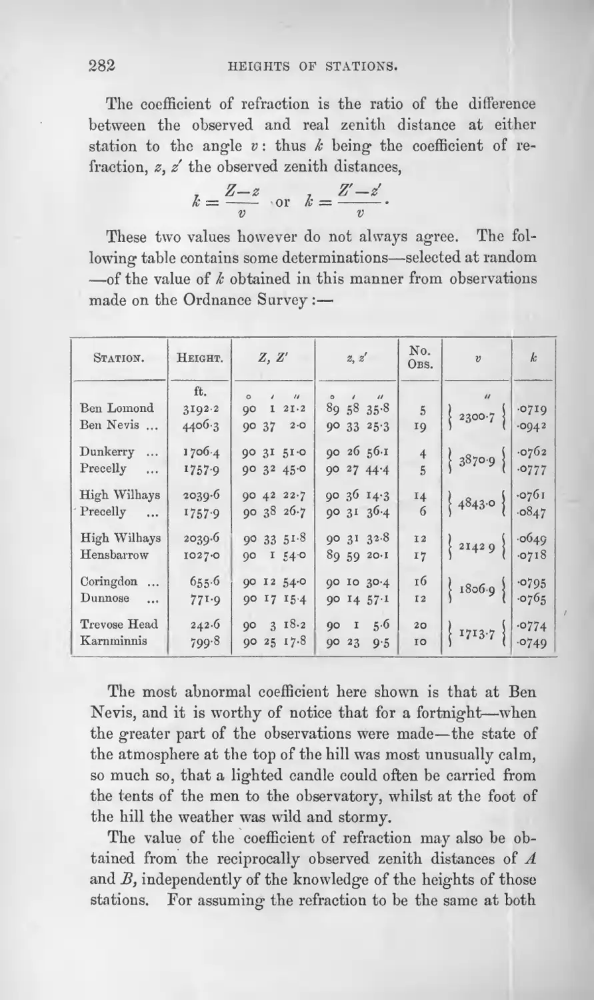
“When the observations at A and B are mutual, we may either eliminate the coefficient of refraction by using the formula (3), or we may get two different results from a mean assumed value of k, and then combine these results by assigning them weights deduced from the consistency of the observations from which they are separately derived”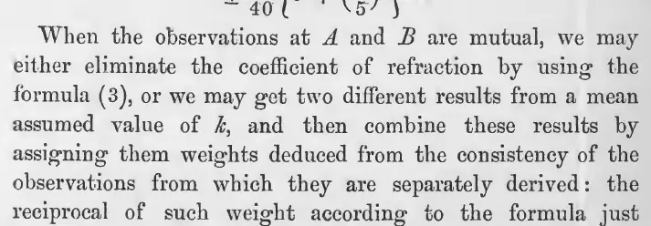
“But it is necessary to discriminate between rays which cross the sea and those which do not.”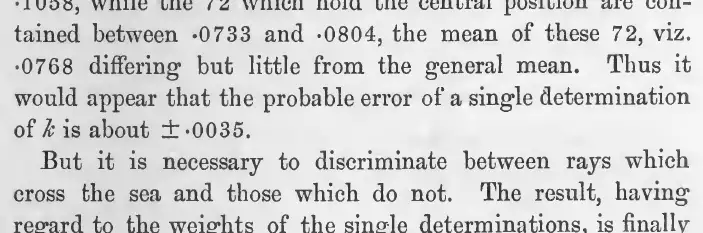
“When at each of three stations we have the observed zenith distances of the other two, the deduced differences of height will exhibit a discrepancy.”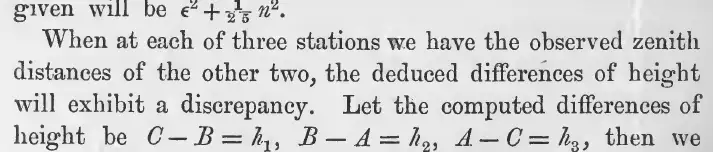
“For the theory of this refraction we may refer to some able papers by Dr. Bauernfeind in the Astronomische Nachrichten for 1866.”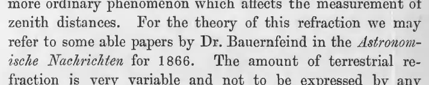
“The former method requires extremely good adjustment of the theodolite; the latter, a very precise knowledge of the latitude and the refraction.”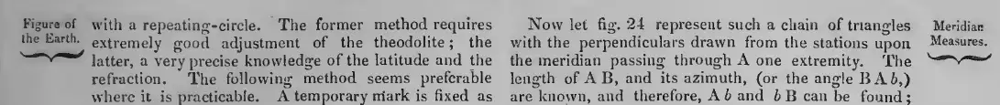
Coefficients as the manuals tabulate them
| Line or group | As printed | Per arc | k = 2 × per arc | Basis | Source |
|---|---|---|---|---|---|
| plains of India, low stations, rays grazing the ground | -0.09 to +1.21 | -0.09 to 1.21 | -0.18 to 2.42 | cited from Account of the Great Trigonometrical Survey of India, vol. ii, p. 77 printed as coefficients, -0.09 to +1.21 (p. 281), cited from the Indian survey; Clarke's k convention (p. 282) | Clarke (1880), p. 281 |
| general | about a twelfth to a sixteenth of the angle subtended by the stations at the centre of the earth | 0.0625 to 0.0833 | 0.125 to 0.1666 | general statement printed as a twelfth to a sixteenth of the angle at the earth's centre (p. 281): 1/16 = 0.0625, 1/12 = 0.0833 | Clarke (1880), p. 281 |
| Ben Lomond / Ben Nevis, Ordnance Survey | .0719 / .0942 | 0.0719 to 0.0942 | 0.1438 to 0.1884 | zenith distances with known heights; 5 and 19 obs.; v = 2300.7" printed as k at each station (p. 282): 0.0719 Ben Lomond, 0.0942 Ben Nevis; Clarke 1880: k = (Z - z)/v, the refraction at one station over the angle v at the earth's centre (p. 282) | Clarke (1880), p. 282 |
| Dunkerry / Precelly | .0762 / .0777 | 0.0762 to 0.0777 | 0.1524 to 0.1554 | 4 and 5 obs.; v = 3870.9" printed as k at each station (p. 282); Clarke 1880: k = (Z - z)/v, the refraction at one station over the angle v at the earth's centre (p. 282) | Clarke (1880), p. 282 |
| High Wilhays / Precelly | .0761 / .0847 | 0.0761 to 0.0847 | 0.1522 to 0.1694 | 14 and 6 obs.; v = 4843.0" printed as k at each station (p. 282); Clarke 1880: k = (Z - z)/v, the refraction at one station over the angle v at the earth's centre (p. 282) | Clarke (1880), p. 282 |
| High Wilhays / Hensbarrow | .0649 / .0718 | 0.0649 to 0.0718 | 0.1298 to 0.1436 | 12 and 17 obs.; v = 2142.9" printed as k at each station (p. 282); Clarke 1880: k = (Z - z)/v, the refraction at one station over the angle v at the earth's centre (p. 282) | Clarke (1880), p. 282 |
| Coringdon / Dunnose | .0795 / .0765 | 0.0765 to 0.0795 | 0.153 to 0.159 | 16 and 12 obs.; v = 1806.9" printed as k at each station (p. 282); Clarke 1880: k = (Z - z)/v, the refraction at one station over the angle v at the earth's centre (p. 282) | Clarke (1880), p. 282 |
| Trevose Head / Karnminnis | .0774 / .0749 | 0.0749 to 0.0774 | 0.1498 to 0.1548 | 20 and 10 obs.; v = 1713.7" printed as k at each station (p. 282); Clarke 1880: k = (Z - z)/v, the refraction at one station over the angle v at the earth's centre (p. 282) | Clarke (1880), p. 282 |
| Ordnance Survey, 144 determinations | .0771 (extremes .0320 and .1058; central 72 between .0733 and .0804, mean .0768; probable error of one value about ±.0035) | 0.0771 | 0.1542 | zenith distances printed as k, mean of 144 values (p. 283); Clarke 1880: k = (Z - z)/v, the refraction at one station over the angle v at the earth's centre (p. 282) | Clarke (1880), p. 283 |
| Ordnance Survey, rays not crossing the sea | .0750 | 0.075 | 0.15 | weighted mean printed as k (p. 283); Clarke 1880: k = (Z - z)/v, the refraction at one station over the angle v at the earth's centre (p. 282) | Clarke (1880), p. 283 |
| Ordnance Survey, rays crossing the sea | .0809 | 0.0809 | 0.1618 | weighted mean printed as k (p. 283); Clarke 1880: k = (Z - z)/v, the refraction at one station over the angle v at the earth's centre (p. 282) | Clarke (1880), p. 283 |
| Survey of Massachusetts, sea coast / interior | .0784 / .0697 | 0.0697 to 0.0784 | 0.1394 to 0.1568 | cited from Professional Papers of the Corps of Engineers U.S.A., No. 12, p. 143 printed as k adopted in the Survey of Massachusetts (p. 283): 0.0784 sea coast, 0.0697 interior | Clarke (1880), p. 283 |
| general | ±.004 | — | — | assumed value for error formula not a coefficient: assumed probable error of k (p. 284) | Clarke (1880), p. 284 |
| geodetic triangle sides, general | about 1/12th | — | — | Airy, stated and rejected as a refinement not a refraction coefficient: Airy's fraction of the difference between two line theories (p. 201) | Airy (1848), p. 201 |
5. Survey by survey
Under each quote is the printed passage, cropped from the page scan; click it for full size. "Text layer" marks a quote checked against the scan's text layer only.
Cassini de Thury and Lacaille, verification of the Paris meridian and the arc of the parallel near 43.5 N
Horizontal angles were reduced to the horizon from zenith distances that needed only 3 or 4 minutes of accuracy; no lateral refraction correction is stated. Where a zenith distance was not observed, it was computed from the observed reciprocal one, and the authors say refraction makes that computation inexact; their rule is to take 2 or 3 minutes off the itinerary arc when it exceeds 20 minutes. A footnote gives four reciprocal pairs, observed with an instrument checked by reversal, that show 43 seconds to 4 minutes 57 seconds of total refraction on arcs of 9 to 35.5 minutes. The authors warn that the printed zenith distances were not all observed precisely enough to give heights of mountains above the sea. Delambre (1810) later states that the 1744 heights were computed without terrestrial refraction and so came out too large.
Horizontal angles corrected for refraction: not stated
Angles were reduced to the horizon with zenith distances good to 3 or 4 minutes; the reduction was applied only from Bourges to the southern end. No correction for lateral refraction and no rejection of angles for unsteady images is stated in the pages read.
“il n'étoit pas néceffaire de connoitre les diftances des objets au zenith avec une extrême précifion : il fuffifoit de les avoir à 3 ou 4 minutes près.”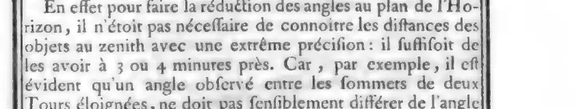
“ayant trouvé qu'aucune des réductions à l'Horizon, calculées depuis Paris jufqu'à la bafe mefurée près de Bourges ne montoit à 2", nous n'avons pas cru qu'il fût néceffaire de calculer nos Triangles d'après ces réductions , non plus que depuis Paris jufqu'à Dunkerke : nous n'y avons eu égard que depuis Bourges jufqu'à l'extrémité méridionale de la Méridienne.”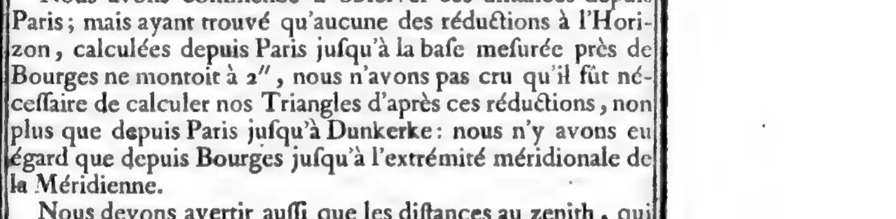
Vertical angles and heights
Zenith distances were observed at one or both stations. Unobserved reciprocal zenith distances were computed from the observed one with the itinerary arc (1 minute for 951 toises), less 2 or 3 minutes for refraction when the arc exceeded 20 minutes. Four reciprocal pairs measured the total refraction. The authors state the zenith distances were not all precise enough for mountain heights. A sea-horizon dip series was observed at Sainte-Victoire; no refraction treatment is stated with it.
“Il eft vrai que la réfraction empêche que ce calcul ne foit exact ; mais on peut y avoir égard , en quelque façon (*), en ôtant deux ou trois minutes de l'arc de la diftance itinéraire , s'il excéde 20';car lorfqu'il eft au-deffous , on peut négliger cette correction.”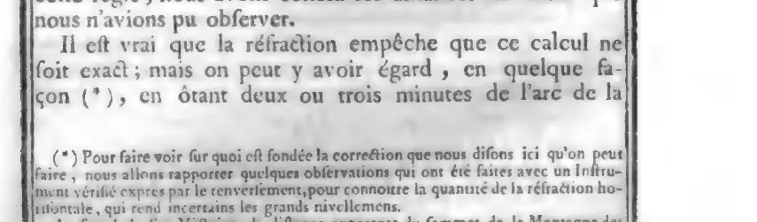
“Pour faire voir fur quoi eft fondée la correction que nous difons ici qu'on peut faire , nous allons rapporter quelques obfervations qui ont été faites avec un Inftrument vérifié exprès par le renverfement,pour connoitre la quantité de la réfraction horifontale, qui rend incertains les grands nivellemens.”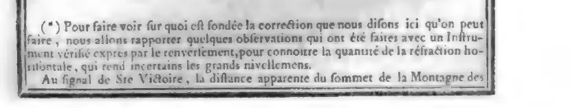
“Nous devons avertir auffi que les diftances au zenith , qui font marquées à la fin de chaque ftation , n'ont pas été toutes obfervées avec une précifion fuffifante , pour en conclure la hauteur des Montagnes au-deffus du niveau de la Mer, parce que l'incommodité des lieux n'a fouvent pas permis d'y prendre les précautions néceffaires”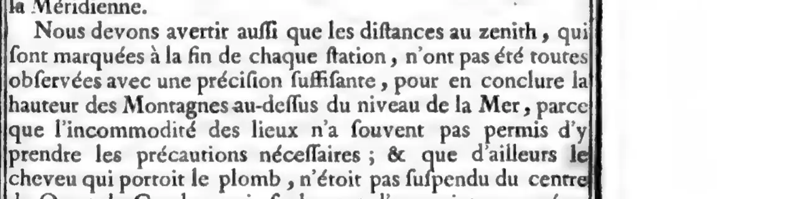
“Obfervations de l'abbaiffement apparent de l'horizon de la Mer.”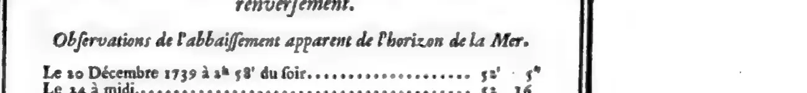
“Mais , dans le calcul , on négligeoit la réfraction terrestre : ainsi l'on trouvoit toutes les hauteurs trop grandes . C'est ce qu'on peut aussi remarquer dans la méridienne de 1718 . En refaisant tous les calculs avec la réfraction moyenne 0.08 , j'ai trouvé des nombres beaucoup plus rapprochés”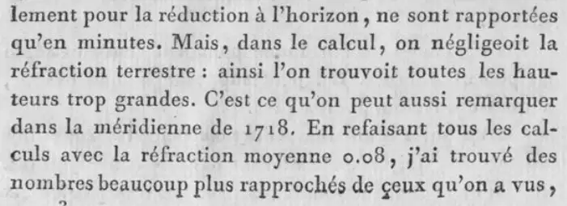
Printed refraction coefficients
| Line or group | As printed | Per arc | k = 2 × per arc | Basis | Source |
|---|---|---|---|---|---|
| Signal of Sainte-Victoire and Montagne des Houpies, reciprocal zenith distances 90° 41' 40" and 89° 43' 15" | 3' 20"½ de réfraction, sur un arc de 28' | 0.0591 | 0.1182 | reciprocal zenith distances; sum exceeds 180° by the apparent arc 24' 55" instead of the true arc printed total for both ends, halved: 200.5″/1695.5″/2 (true arc 28′ 15½″) | Cassini de Thury (1744), x-xj (Troisième partie), footnote |
| Aigues-Mortes, Tour de Constance, and Montagne des Houpies; 89° 50' 19" and 90° 40' 20" | 4' 57" de réfraction impliquée dans les deux obfervations , fur un arc de 35'½ de diftance | 0.0695 | 0.139 | reciprocal zenith distances printed total for both ends ("impliquée dans les deux obfervations"), halved: 297″/2136″/2 (true arc 35′ 36″) | Cassini de Thury (1744), xj (Troisième partie), footnote |
| Carcassonne, Tour de S. Vincent, and foot of the signal of Alaric; 89° 1' 25" and 91° 10' 5" | 1' 22" de réfraction fur un arc de 13' de diftance | 0.0531 | 0.1062 | reciprocal zenith distances printed total for both ends, halved: 82″/772″/2 (true arc 12′ 52″) | Cassini de Thury (1744), xj (Troisième partie), footnote |
| Perpignan, Tour de S. Jaumes, and foot of the Tour de Tautavel; 88° 36' 55" and 91° 31' 20" | 43" de réfraction fur 9' de diftance | 0.04 | 0.08 | reciprocal zenith distances printed total for both ends, halved: 43″/538″/2 (true arc 8′ 58″) | Cassini de Thury (1744), xj (Troisième partie), footnote |
| general rule for the whole chain | deux ou trois minutes de l'arc de la diftance itinéraire , s'il excéde 20' | — | — | the four reciprocal pairs in the footnote fixed allowance of 2′ to 3′ for both lines of sight together on arcs above 20′, not a fraction of the arc; at the 20′ threshold it is 120″ to 180″/1200″/2 = 0.05 to 0.075 per station, less on longer arcs | Cassini de Thury (1744), x-xj (Troisième partie) |
Observing rules
“Cela eft fur-tout très-difficile à exécuter dans les clochers , qui font ordinairement trop embarraffés de charpente , fans ouvertures , & dans lefquels on eft obligé de s'échaffauder, comme on peut, avec des planches , telles qu'elles fe trouvent fur les lieux. Quelquefois aufti le grand vent ou quelque autre inconvénient nous ont obligé de les omettre dans les endroits libres : mais nous y avons fuppléé par un calcul équivalent.”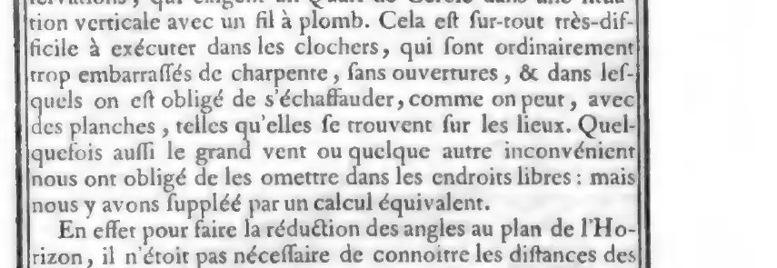
“Nous avons donc eu grand foin d'obferver la diftance de chaque Objet au zenith d'une des deux ftations , lorfqu'elle n'a pu l'être réciproquement.”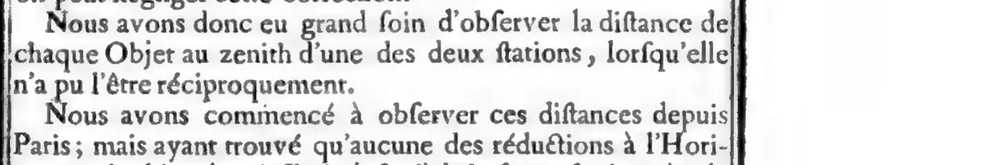
Recommended practice
“en ôtant deux ou trois minutes de l'arc de la diftance itinéraire , s'il excéde 20';car lorfqu'il eft au-deffous , on peut négliger cette correction.”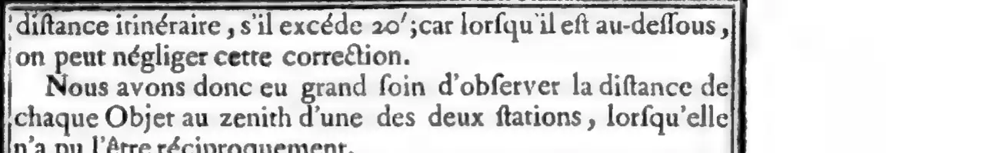
“1° que cette réfraction n'est pas si irrégulière qu'on ne puisse trouver le moyen d'y avoir égard d'une manière satisfaisante ; 2° que la réfraction terrestre est trop grande pour être négligée dans le calcul des hauteurs des objets au-dessus de l'horizon”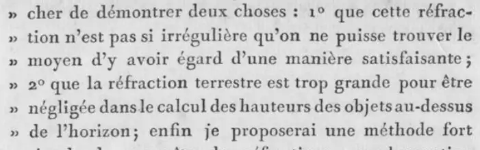
“Quand je dis que la réfraction horizontale des objets terrestres n'est pas si irrégulière qu'on pense, j'en excepte celle de l'abaissement de l'horizon de la mer.”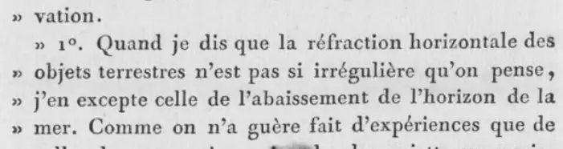
Not found in the pages read
- No correction of horizontal angles for lateral refraction in the pages read (Troisième partie §IV, pdf 314-317).
- No adopted single refraction coefficient for terrestrial lines; only the four footnote pairs and the 2 to 3 minute rule.
- No statement that refraction enters the triangle closures or the spherical excess.
- No night observation of terrestrial angles with lamps; the 'feux' (pdf 112, 119) are longitude fire signals.
- No stated hours of observation aimed at refraction for terrestrial angles.
- Refraction references at pdf 36, 121 and 426 (section 'De la Réfraction', Bouguer's hypothesis) concern astronomical refraction for the zenith sector and solar heights, not terrestrial lines.
Delambre and Méchain, meridian arc Dunkirk to Barcelona (Base du système métrique)
Horizontal angles were not corrected for refraction. Delambre says refraction raises the signals unequally, so the three angles of a triangle lie in different planes, and the reduction to the horizon handles this; he was at times inclined to believe in a lateral refraction but gives only two remedies, not infallible: waiting for favourable moments and repeating at other hours and conditions. Heights came from reciprocal zenith distances with the refraction taken as a fixed fraction n of the angle C between the verticals; a table of 189 reciprocal pairs gives n, with a mean of 0.08388 for all and 0.07876 for 159 pairs after rejecting fog and decidedly rainy weather, and 0.0783 from 17 sea-horizon observations. The height tables use n = 0.08, said to vary from 0.07 to 0.09 and sometimes 0.10. Fog gave n of 0.14 to 0.17, sight lines grazing heath gave excessive undulations, and evening observations gave stronger refraction.
Horizontal angles corrected for refraction: no
No lateral refraction correction is applied. Unequal vertical refraction is handled by the reduction to the horizon. Undulations are noted series by series, some series are rejected, and Delambre advises waiting for favourable moments and repeating at different hours.
“S'il existe une réfraction latérale , comme j'ai été par fois tenté de le croire , les réverbères y seroient également sujets , et l'on n'a pour se garantir de cette illusion que deux moyens qui ne sont pas infaillibles , l'un est d'attendre les instans favorables ; l'autre , de répéter les observations à des heures et dans des circonstances différentes.”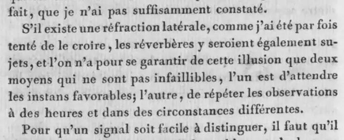
“le réverbère allumé à Montmartre le 11 et le 15 août 1792 étoit sujet à des ondulations très-sensibles , qui faisoient osciller le lieu apparent autour du véritable . C'est un inconvénient au reste qui paroît inhérent aux signaux de toute espèce , je l'ai éprouvé bien souvent sur les signaux de jour”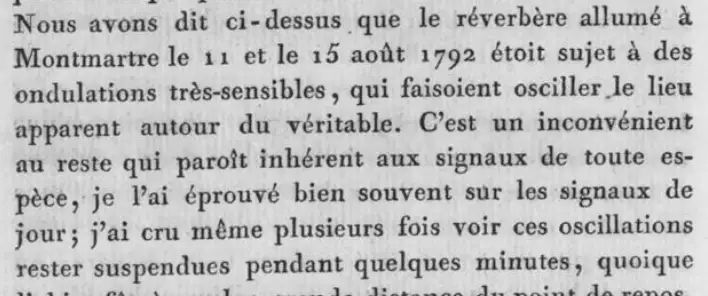
“La réfraction élève inégalement les objets terrestres ; il y a toujours une différence sensible entre la hauteur du centre du cercle et le point extérieur qui a servi de mire dans les stations circonvoisines ; il en résulte que les trois angles qui doivent former chacun des triangles, ont toujours été observés dans des plans différens”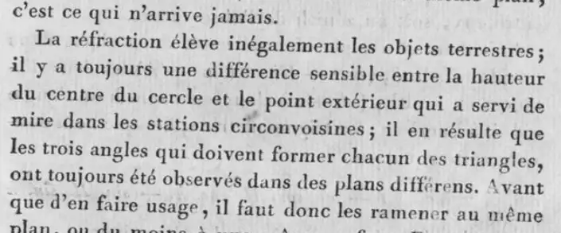
“On voit bien les deux clochers , qui sont très-aigus ; mais ondulations excessives . Ces ondulations n'étoient pas toujours très-rapides ; elles portoient quelquefois la pointe du clocher d'un côté ou d'un autre , et l'y retenoient près d'une minute de temps.”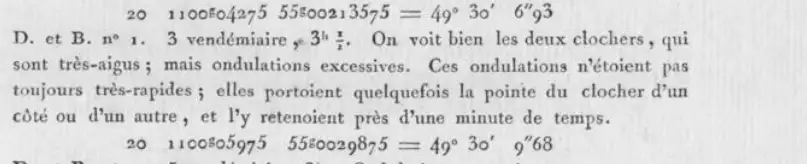
“Grand vent ; Sauti foible et courbe ; ondulations au Mesnil ; fils en + série à rejeter.”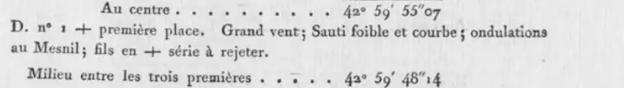
“Le soir approchoit. Supposons que la réfraction terrestre augmentant , ait élevé les signaux chacun d'une minute , l'angle réduit à l'horizon diminuera de 2"8”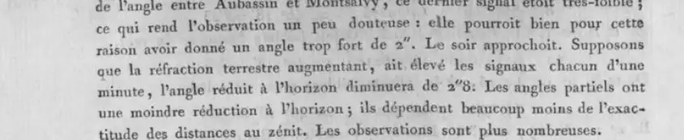
Vertical angles and heights
Reciprocal zenith distances, reduced to the signal tops and for the thread half-thickness, give level differences and the refraction factor n with r = nC, assumed equal at both ends. Table of n for 189 pairs; heights computed with n = 0.08 C where only one distance was observed; Montjouy sea-horizon heights checked against a direct levelling. Refraction varied with fog, season, time of day and ground grazing.
“Ces dernières sont diminuées de la réfraction terrestre , qui est supposée proportionnelle à l'angle des deux normales ou à l'angle M, et qui par conséquent est égale pour les deux observations. Soit r cette réfraction”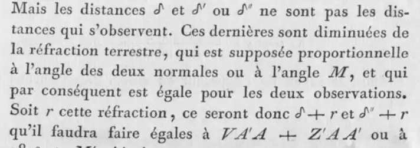
“Le coefficient n, que nous avons supposé 0.08, pouvant varier de 0.07 à 0.09, et même quelquefois à 0.10, on voit que notre coefficient 0.42 = 0.50 − 0.08 peut varier de 42 à 40, 41 et 43”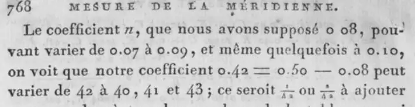
“celles qui n'ont été déterminées que d'un seul point peuvent être douteuses , non seulement parce que la réfraction peut avoir été assez différente de la moyenne”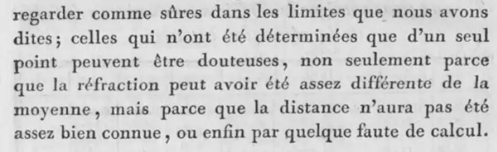
“Il paroît que c'est le brouillard qui influe surtout sur les réfractions , et qui donne pour n des valeurs de 0.14 à 0.17.”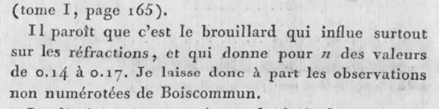
“D'Ennordre à Méri le rayon visuel rasoit une plaine couverte de bruyères , et les ondulations étoient excessives .”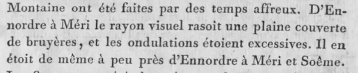
“A commencer de 135 toutes les observations sont de M. Méchain qui a toujours fait plusieurs séries pour la même distance , et qui , à l'exception de quelques stations de Nore au Vernet , n'a guère observé passé le mois d'octobre , et presque toujours sur des montagnes où le rayon visuel ne rasoit pas le sol.”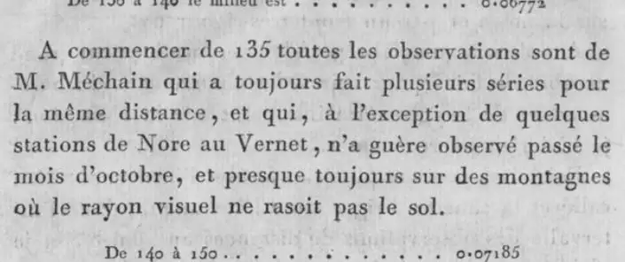
“Le 12e est négatif . Les deux observations sont du mois de juillet . A Fiefs le temps étoit très-chaud et orageux”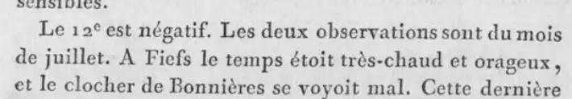
“Sauti , dans toutes les combinaisons , indique une forte réfraction . Il est au milieu d'un bois , et tous ces clochers se voient au-delà de bois d'une étendue assez considérable.”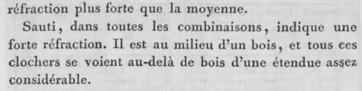
“toutes ces observations ayant été faites vers le coucher du soleil , la réfraction devoit élever la mer plus que dans l'état moyen et faire paroître la hauteur de la tour trop petite . Elles prouvent qu'une observation de l'horizon de la mer prise isolément peut donner une erreur de 5 à 6 toises .”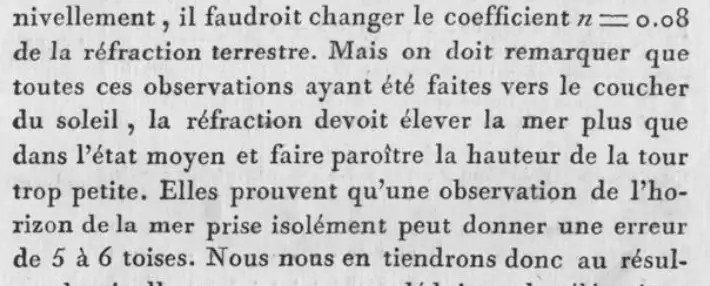
“J'ai remarqué à cette station , plus que par-tout ailleurs , de très-grandes variations dans la réfraction terrestre ; cela provenoit sans doute de ce que les rayons visuels rasoient le sol dans une grande longueur.”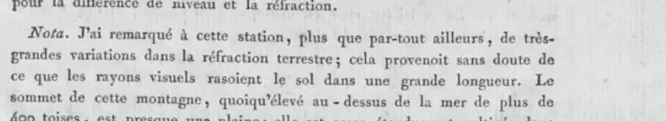
“Cet effet des réfractions terrestres qui , à différens temps ou à différentes heures du même jour , et , suivant les variations atmosphériques , élève plus ou moins le même objet , le cache ou le rend visible , est singulièrement curieux”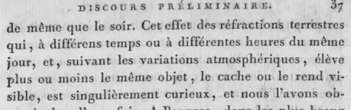
Printed refraction coefficients
| Line or group | As printed | Per arc | k = 2 × per arc | Basis | Source |
|---|---|---|---|---|---|
| whole meridian | 0.08 | 0.08 | 0.16 | adopted value ('que nous avons supposé 0.08'); the table of reciprocal pairs (p. 776) gives means of 0.07876 to 0.08388 printed as n, with refraction r = nC at each station, C the angle at the earth's centre (T2 p. 739 eq. 64, p. 756 'la réfraction 0.08 C') | Méchain & Delambre (1807), T2 p. 768 |
| whole meridian | 0.07 à 0.09, et même quelquefois à 0.10 | 0.07 to 0.1 | 0.14 to 0.2 | reciprocal zenith distances printed range of n (r = nC, T2 p. 739): usually 0.07 to 0.09, sometimes 0.10 | Méchain & Delambre (1807), T2 p. 768 |
| Dunkirk to Montjouy, table 'Réfraction terrestre déterminée par les distances réciproques au zénith' | 0.08388 | 0.0839 | 0.1678 | reciprocal zenith distances printed as n, with refraction r = nC at each station, C the angle at the earth's centre (T2 p. 739 eq. 64, p. 756 'la réfraction 0.08 C') | Méchain & Delambre (1807), T2 p. 776 |
| same table | 0.07876 | 0.0788 | 0.1575 | reciprocal zenith distances; rejected nos. 57-69, 71-75, 76-88 printed as n, with refraction r = nC at each station, C the angle at the earth's centre (T2 p. 739 eq. 64, p. 756 'la réfraction 0.08 C') | Méchain & Delambre (1807), T2 p. 776 |
| 17 sea-horizon stations of Méchain, Montjouy to Montalet (table T2 p. 781) | 0.0783 | 0.0783 | 0.1566 | sea-horizon dip against reciprocal-distance heights printed as n, the factor of refraction needed to agree the sea horizon with the reciprocal distances (T2 p. 781-782); same n as r = nC | Méchain & Delambre (1807), T2 p. 776 and p. 782 |
| nos. 1-45, Dunkirk to Dammartin and Belleassise | 0.07796 | 0.078 | 0.1559 | reciprocal zenith distances printed as n, with refraction r = nC at each station, C the angle at the earth's centre (T2 p. 739 eq. 64, p. 756 'la réfraction 0.08 C') | Méchain & Delambre (1807), T2 p. 774 |
| nos. 51-60: Panthéon, Montlhéri, Brie, Malvoisine, Lieursaint, Melun, Torfou | 0.09301 | 0.093 | 0.186 | reciprocal zenith distances printed as n, with refraction r = nC at each station, C the angle at the earth's centre (T2 p. 739 eq. 64, p. 756 'la réfraction 0.08 C') | Méchain & Delambre (1807), T2 p. 774 |
| nos. 61-70: Malvoisine, Torfou, Bruyères, Forêt, Chapelle-la-Reine, Pithiviers, Boiscommun | 0.10982 | 0.1098 | 0.2196 | reciprocal zenith distances printed as n, with refraction r = nC at each station, C the angle at the earth's centre (T2 p. 739 eq. 64, p. 756 'la réfraction 0.08 C') | Méchain & Delambre (1807), T2 p. 774 |
| Boiscommun (unnumbered observations, left aside) | 0.14 à 0.17 | 0.14 to 0.17 | 0.28 to 0.34 | reciprocal zenith distances printed range of n in fog (r = nC, T2 p. 739) | Méchain & Delambre (1807), T2 p. 775 |
| Montserrat and Matas | 0.07206 | 0.0721 | 0.1441 | reciprocal zenith distances 91° 15' 48" and 89° 2' 28" printed as n, with refraction r = nC at each station, C the angle at the earth's centre (T2 p. 739 eq. 64, p. 756 'la réfraction 0.08 C') | Méchain & Delambre (1807), T2 p. 778 |
| Estella | 0.10 | 0.1 | 0.2 | sea-horizon height computed with n = 0.08, 0.09, 0.10 (879.49, 896.10, 912.70 toises) against 908.41 from N.-D.-du-Mont and Puig-se-Calm printed as n (r = nC, T2 p. 739) | Méchain & Delambre (1807), T2 p. 760 |
| Puy-de-Dôme by Sermur | 0.075 | 0.075 | 0.15 | adopted printed as refraction 0.075 C beside 0.08 C (T2 p. 756), i.e. n = r/C | Méchain & Delambre (1807), T2 p. 756 |
| Fiefs and Bonnières, July, hot stormy weather, 10-11 h | −0035 (12th entry, printed in the n column) | -0.0035 | -0.007 | reciprocal zenith distances printed '−0035' in the n column, which drops the leading '0.' after the first entry of each group of five (0.0955 above it), so n = -0.0035; r = nC (T2 p. 739) | Méchain & Delambre (1807), T2 p. 771 |
| Fiefs and Bonnières | 0.0020 (after removing 9" from the observed distance) | 0.002 | 0.004 | reciprocal zenith distances printed as n, with refraction r = nC at each station, C the angle at the earth's centre (T2 p. 739 eq. 64, p. 756 'la réfraction 0.08 C') | Méchain & Delambre (1807), T2 p. 773 |
Observing rules
“Quand le temps étoit beau , j'aimois mieux répéter l'observation des angles de position , et , s'il étoit mauvais , les variations de la réfraction terrestre auroient rendu les distances au zénith plus incertaines.”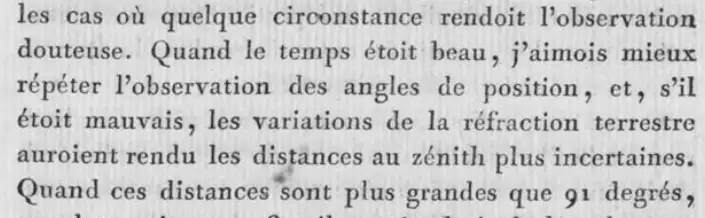
“afin de choisir pour la réduction des angles à l'horizon la distance dont l'heure étoit la plus voisine , et où l'on avoit lieu de croire la réfraction terrestre moins différente.”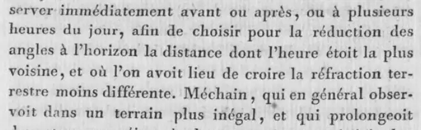
“Dans ces cas le meilleur de tous les signaux , sans contredit , seroit une lampe à réverbère .”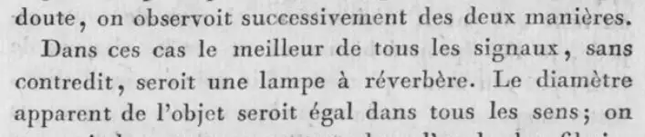
“Comme la réfraction terrestre pourroit changer un peu les apparences , examinez quelques minutes au-dessus et au-dessous de B dans le même vertical”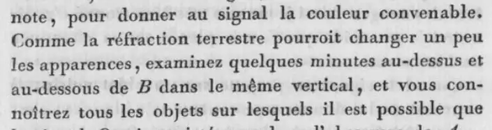
“Après plusieurs essais je me suis fait la règle de donner à mes signaux une hauteur égale à 3/20000 de la distance. De cette manière cette hauteur paroissoit sous un angle de 30" au moins.”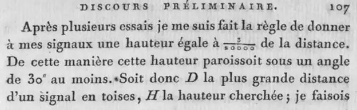
“Ces distances sont plus sûres que les précédentes . Le soleil n'étoit pas encore couché ; la réfraction terrestre étoit moindre.”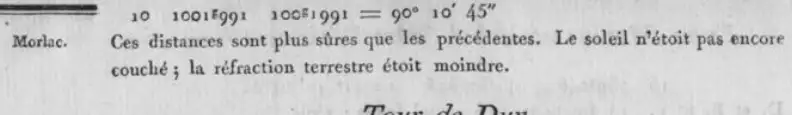
Recommended practice
“Pour avoir quelque chose de plus précis il faudroit des observations réciproques , simultanées , en très-grand nombre.”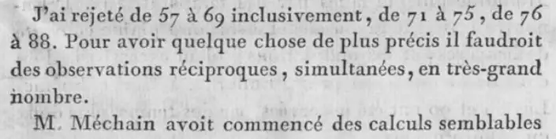
“Les distances réciproques doivent être plus sûres en ce qu'elles ne supposent que l'égalité des deux réfractions et qu'on a la chance des compensations.”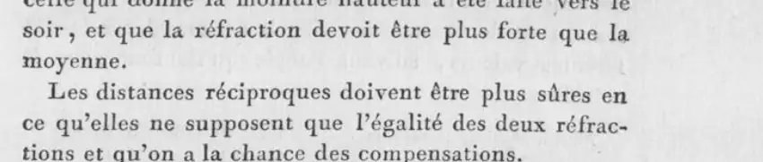
“l'un est d'attendre les instans favorables ; l'autre , de répéter les observations à des heures et dans des circonstances différentes.”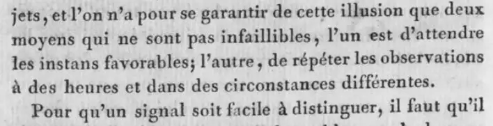
“Mais il est visible que la réfraction terrestre altère les deux angles . On ne doit donc faire aucun fond sur cette méthode”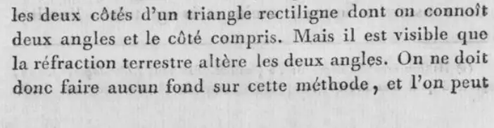
Triangle closures and excess
“il en résulte que les trois angles qui doivent former chacun des triangles, ont toujours été observés dans des plans différens . Avant que d'en faire usage , il faut donc les ramener au même plan , ou du moins à une même surface .”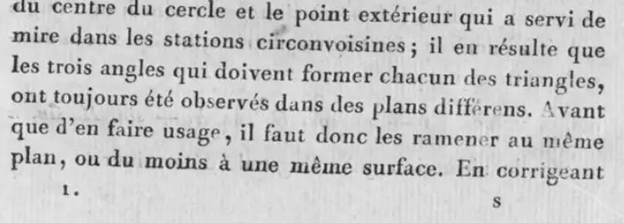
Not found in the pages read
- No numerical correction of horizontal angles for lateral refraction.
- No statement that refraction enters the spherical excess.
- No fixed hour window for zenith distances; the text gives only hour choices (nearest to the angle, before sunset) and notes on evening and fog.
- Méchain's own formulas for n were not found by Delambre; T2 pp. 777-779 reconstruct them from his calculations.
- Dates and hours for each of the 189 pairs are not in the n table; they are in the station records of T1 and T2.
Parallel of Paris, Brest to Strasbourg (Henry east part, Bonne west part), Nouvelle carte de France
Angles of the eastern part were observed at night from 1818 with lamps (réverbères) at Laplace's request, but the night zenith distances disagreed so much that level differences were taken instead from day observations at second-order stations. Puissant states that night horizontal angles near sunset gave larger discordances than day angles and are as much affected by refraction as day ones, more so in low places, as seen between Paris and Strasbourg. No refraction correction of horizontal angles is stated. Heights of the western part come from reciprocal and simultaneous zenith distances, day and night, Brest to the Panthéon; the printed table gives n per series from 0.061 to 0.090. The Instruction asks for zenith distances in at least three series at different hours, mainly near midday, simultaneous where possible, and for avoiding angle observations in vapours and undulations.
Horizontal angles corrected for refraction: no
No correction for lateral refraction. The Instruction prescribed night or twilight angles with lamps on the Brest-Strasbourg perpendicular; the night results showed larger discordances, and Puissant judges night angles at least as much affected by refraction as day angles.
“C'est sur une grande partie de cette ligne, confiée, dès l'origine des travaux, à MM. les colonels Bonne et Henry, que des réverbères ont été employés pour signaux; mais les observations nocturnes, à peu d'intervalle du coucher du soleil, ont souvent présenté des discordances beaucoup plus considérables que celles faites de jour.”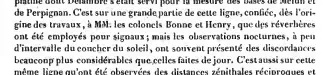
“ainsi les observations nocturnes des angles horizontaux qui avaient été recommandées par le célèbre Laplace sont tout aussi influencées par les effets de la réfraction atmosphérique que celles de jour, si même elles ne le sont quelquefois davantage dans les lieux bas, comme on l'a remarqué, ainsi que nous l'avons déjà dit, entre Paris et Strasbourg, lors de la mesure du parallèle compris entre ces deux villes.”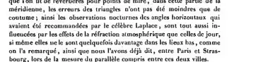
“Les observations angulaires, pour cette perpendiculaire seulement, seront faites de nuit ou dans le crépuscule ; et les signaux seront disposés de manière, à pouvoir recevoir un ou plusieurs réverbères, pour remplacer, dans ce cas, l'autre point de mire, qui n'est visible que de jour.”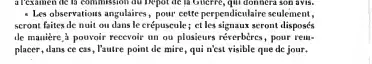
Vertical angles and heights
Level differences by the formula with the refraction coefficient n; n found from reciprocal zenith distances. East part: night zenith distances rejected, heights from day observations at second-order stations. West part: reciprocal simultaneous zenith distances, day and night, from the Roche Herpin to the Panthéon (Bonne, Epailly, Béraud), with n listed per series.
“Mais l'énorme discordance que présentèrent sur cette ligne la plupart des distances zénithales comparables, mirent dans la nécessité de rejeter ces observations nocturnes pour déterminer les différences de niveau par d'autres mesures angulaires recueillies de jour, à différentes stations du second ordre, liées à celles du premier ordre.”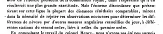
“n désignant le coefficient de la réfraction supposé connu. Sa valeur donnée par des distances zénithales réciproques est”“Il est à remarquer que les deux distances zénithales apparentes δ, δ' sont supposées répondre au même état de l'atmosphère; circonstance qui n'a lieu en général que quand ces distances sont observées à la même époque.”“le nivellement trigonométrique exécuté depuis Brest jusqu'au Panthéon, par des distances zénithales réciproques et simultanées, prises de jour et de nuit, a donné la hauteur absolue du sommet de cet édifice”“aussi a-t-on observé à tous les sommets des triangles du 1er ordre autant de distances zénithales réciproques qu'il était nécessaire, pour que les erreurs commises sur les différences de niveau ne dépassassent pas deux mètres, dans les cas les plus défavorables.”Printed refraction coefficients
| Line or group | As printed | Per arc | k = 2 × per arc | Basis | Source |
|---|---|---|---|---|---|
| Roche Herpin and Cancale (clocher), base 5099 m, 22 September 1821, 10h 35 | 0,062 | 0.062 | 0.124 | reciprocal and simultaneous zenith distances (table title: 'prises de jour et de nuit'; the lines do not mark day or night, and hours carry no a.m./p.m.) printed as n = (½C − ½(δ+δ′−200g))/C, refraction at one station over C (p. 55) | Puissant (1832), 234-235 |
| Cancale and Les Trois-Cheminées, base 42372 m, 31 August 1821, 5h to 6h 30 | 0,076; 0,076; 0,076 | 0.076 | 0.152 | reciprocal and simultaneous zenith distances (table title: 'prises de jour et de nuit'; the lines do not mark day or night, and hours carry no a.m./p.m.); remark on p. 235: 'Les observations réciproques ne sont pas exactement simultanées' printed as n = (½C − ½(δ+δ′−200g))/C, refraction at one station over C (p. 55); three series, all 0.076 | Puissant (1832), 234-235 |
| Les Trois-Cheminées and Saint-Martin-de-Chaulieu, base 32088 m, 25 August 1821, 3h to 6h 30 | 0,070; 0,068; 0,070; 0,074 | 0.068 to 0.074 | 0.136 to 0.148 | reciprocal and simultaneous zenith distances (table title: 'prises de jour et de nuit'; the lines do not mark day or night, and hours carry no a.m./p.m.) printed as n = (½C − ½(δ+δ′−200g))/C, refraction at one station over C (p. 55); 4 series on this line, range of the printed values | Puissant (1832), 234-235 |
| Saint-Martin-de-Chaulieu and Charlemagne (pyramide), base 32656 m, 11 October 1821, 2h to 5h 34 | 0,061; 0,066; 0,073; 0,090 | 0.061 to 0.09 | 0.122 to 0.18 | reciprocal and simultaneous zenith distances (table title: 'prises de jour et de nuit'; the lines do not mark day or night, and hours carry no a.m./p.m.) printed as n = (½C − ½(δ+δ′−200g))/C, refraction at one station over C (p. 55); 4 series on this line, range of the printed values | Puissant (1832), 234-235 |
| Charlemagne and Écouves (1821), base 36538 m, 3 August 1821, 3h 55 to 6h 55 | 0,065; 0,065; 0,064; 0,072 | 0.064 to 0.072 | 0.128 to 0.144 | reciprocal and simultaneous zenith distances (table title: 'prises de jour et de nuit'; the lines do not mark day or night, and hours carry no a.m./p.m.) printed as n = (½C − ½(δ+δ′−200g))/C, refraction at one station over C (p. 55); 4 series on this line, range of the printed values | Puissant (1832), 234-235 |
| Charlemagne and Montabard (pyramide), base 31958 m, 20 September 1820, 2h to 5h 46 | 0,068; 0,071; 0,076; 0,080 | 0.068 to 0.08 | 0.136 to 0.16 | reciprocal and simultaneous zenith distances (table title: 'prises de jour et de nuit'; the lines do not mark day or night, and hours carry no a.m./p.m.) printed as n = (½C − ½(δ+δ′−200g))/C, refraction at one station over C (p. 55); 4 series on this line, range of the printed values | Puissant (1832), 234-235 |
Observing rules
“Les distances zénithales relatives à ces chaînes seront elles-mêmes le résultat de trois séries au moins, prises à des heures différentes, et surtout vers le milieu du jour, afin qu'elles puissent donner les différences de niveau avec toute l'exactitude désirable, et, autant qu'il sera possible, par le concours d'observations simultanées : celles-ci seront accompagnées d'observations barométriques.”“On évitera, autant que possible, de faire des observations d'angles dans les momens où il y a beaucoup de vapeurs et d'ondulations, et dans ceux où le soleil donnerait aux signaux des phases prononcées qui rendraient le pointé trop incertain.”“Toutes les séries du premier ordre seront, autant que possible, prolongées jusqu'à la vingtième observation conjuguée; toutes celles du deuxième ordre s'arrêteront à la dixième.”Recommended practice
“En général il est nécessaire que K ne dépasse pas 12000 m, afin que le pointé soit plus certain et que la variabilité de la réfraction ait moins d'influence sur les différences de niveau.”“sont tout aussi influencées par les effets de la réfraction atmosphérique que celles de jour, si même elles ne le sont quelquefois davantage dans les lieux bas”Not found in the pages read
- Printed pp. 236-244 are missing from this scan (pdf 255 is p. 235, pdf 256 is p. 245); the rest of the levelling table (pp. 236-237) and the probability analysis (pp. 238-241) could not be read.
- No refraction coefficient table for the eastern part (Henry); only the statement that night zenith distances were rejected.
- No correction of horizontal angles for lateral refraction.
- No statement that refraction enters the triangle closures or the spherical excess.
- The table on pp. 234-235 is titled for observations 'prises de jour et de nuit', but its lines do not mark which series were by night (hours printed without a.m./p.m.); night n values cannot be separated on the pages present.
Brousseaud, arc of the mean parallel (45 N) across France, Cordouan to Mont Granier/Colombier, with link to the Austro-Sardinian chain
Horizontal angles were not corrected for refraction; the response to varying results was more repetition, at least thirty per series, at different hours and days, with up to twelve or fifteen series when the first six differed by 15 to 20 seconds. Zenith distances of the signal tops were always taken between eleven and one o'clock, in at least six or eight series of ten. Heights come from reciprocal zenith distances from the tower of Cordouan to Colombier and Granier; the coefficient of refraction lay between 0.0563 and 0.097 (Puissant prints 0.0563 and 0.0907) and was generally 0.08, as Delambre had found. A night fire-signal longitude link between La Jonchère and Saint-Preuil was attributed to extraordinary refraction, and vapours over the Landes limited the alignment of the Bordeaux base to 4000 m sights.
Horizontal angles corrected for refraction: no
No refraction correction. Series of at least thirty repetitions at different hours and days; the number of series was raised when early results disagreed. Unexplained differences of 25 to 35 decimal seconds between series at the same hour on different days are reported.
“on prit la résolution, ainsi qu'il a été déjà signalé page 32, de multiplier les observations d'angles entre les objets terrestres trente fois au moins par chaque série, et de répéter ces séries à des heures et à des jours différens.”“On a remarqué des différences de vingt-cinq à trente-cinq secondes décimales entre les résultats des séries d'un même angle observé à la même heure et à des jours différens, quoique les deux objets sur lesquels on pointait se vissent parfaitement dans des circonstances semblables.”“celle du sud a offert constamment des difficultés à être bien vue à cause de l'agitation de l'air, qui semblait la déplacer sans cesse du fil méridien de la lunette.”“Mais les vapeurs et les fortes ondulations dans l'air qu'elles produisent à la surface des landes n'ont permis de voir distinctement la mire portative qui a servi à cette opération qu'à 4000 mètres au plus”Vertical angles and heights
Reciprocal zenith distances, taken between 11 h and 13 h in six or eight series of ten, carried heights from the tower of Cordouan (68.445 m above mean sea) to Colombier and Granier. A 9 m discordance from long sights from Bossivre to Montoncelle and Pierre-sur-Autre was removed by Puissant using other stations. The coefficient of refraction stayed between 0.0563 and 0.097, generally 0.08.
“Les distances au zénith de l'extrémité des signaux ont toujours été prises entre onze heures et une heure du soir, et répétées au moins par six ou huit séries de dix angles simples chaque.”“2° que, sur toute son étendue, la valeur du coefficient de la réfraction est renfermée entre 0,0563 et 0,097, et se trouve généralement de 0,08, ainsi que Delambre l'avait déduit de ses observations.”“de ce que les chapeaux placés à l'extrémité des flèches de ces signaux, et qui servaient de point de mire, étaient trop petits pour être bien vus à de si grandes distances une heure avant et une heure après midi, époques du jour où ces observations zénithales ont toujours été faites (page 158).”“il est en outre assez remarquable que, dans toute son étendue, la valeur du coefficient de la réfraction est renfermée entre 0,0563 et 0,0907 ; et que généralement n = 0,08, ainsi qu'il résulte des observations de Delambre.”Printed refraction coefficients
| Line or group | As printed | Per arc | k = 2 × per arc | Basis | Source |
|---|---|---|---|---|---|
| whole levelling, Cordouan to Colombier and Granier | entre 0,0563 et 0,097 ... généralement de 0,08 | 0.08 | 0.16 | reciprocal zenith distances printed range and usual value of the coefficient; Brousseaud cites Mémorial no. 6 pp. 291-292, which are Puissant (1832) pp. 291-292, where it is n; Puissant (1832, p. 55) defines n = (½C − ½(δ+δ′−200g))/C, refraction at one station over C | Brousseaud (Colonel). (1839), 160 |
| whole levelling of the mean parallel | entre 0,0563 et 0,0907 ; et que généralement n = 0,08 | 0.08 | 0.16 | reciprocal zenith distances printed as n, range and usual value; Puissant (1832, p. 55) defines n = (½C − ½(δ+δ′−200g))/C, refraction at one station over C | Puissant (1832), 292 |
Observing rules
“Les distances au zénith de l'extrémité des signaux ont toujours été prises entre onze heures et une heure du soir”“La construction de ces signaux laissait peu d'intervalle entre le centre de l'instrument et le chapeau, point de mire des signaux correspondant”“Les distances au zénith ont aussi été répétées de soixante à cent fois, entre onze heures et midi, afin d'avoir avec exactitude la hauteur absolue des signaux placés sur les hautes montagnes de la France et de la Savoie.”Recommended practice
“En réunissant toutes les circonstances de cette opération on a supposé que les difficultés qu'elle a présentées se liaient au phénomène des réfractions extraordinaires. Sans doute le choix des deux stations, qui n'ont été réciproquement visibles que par l'effet de ce phénomène, est une circonstance malheureuse”Not found in the pages read
- No per-line table of refraction coefficients in Brousseaud (1839); only the range and usual value.
- No correction of horizontal angles for lateral refraction.
- No use of heliotropes or lamps for the geodetic angles; lamps and fires appear only for longitude signals.
- No statement that refraction enters the triangle closures or the spherical excess.
- Brousseaud cites the 6th number of the Mémorial du Dépôt de la Guerre, pp. 291-292, for this result; Puissant (1832) printed pp. 291-292 carry the same statement, with no per-line values.
Trigonometrical Survey of England and Wales (Ordnance), Roy 1784-1788 and Williams, Mudge and Dalby 1791-1799
Horizontal angles were not corrected for refraction. The observers controlled it by observing only when the air was steady (mornings, evenings, close cloudy days) and by using white lights and reverberatory lamps at night. Heights came from reciprocal angles of elevation and depression, with terrestrial refraction expressed as a fraction of the contained arc: Roy found 1/2 to 1/24 on his lines and used 1/10 for single observations; Williams, Mudge and Dalby found a mean of 1/12 (1795), a range of 1/7 to 1/34 (1797), and used 1/12 or 1/15 for single observations. Reciprocal observations were not simultaneous until Mudge's hourly simultaneous series of 1799, which gave about 1/10 to 1/11. The authors state that refraction decreases with station height, is irregular when rays pass near the ground (moist vapours given as the main cause), and that single observations cannot be relied on.
Horizontal angles corrected for refraction: no
No correction of horizontal angles for refraction is printed. Unsteady air ('tremulous motion or boiling', 'quivering motion') was handled by waiting for steady air and by night observation of lights.
“At particular times, especially in hot weather, there was such a tremulous motion or boiling in the air, that it was only during a very short space, chiefly in the mornings and evenings, that the objects were sufficiently distinct to be observed with accuracy. So difficult it is to do any thing perfectly good in this way, that a whole day has frequently been spent, after watching with anxious care, in obtaining a single one that was perfectly satisfactory!”“Sometimes an observation has been entirely lost, or at least that which had been obtained was not thought a very good one. In such cases a blank has been left in the column of observed angles, and also in that expressing the error.”“That the bearings of those might be taken with precision, the observations were made either in the morning or evening, when the air was free from vapour, and without that quivering motion, which, in summer, it generally has in the middle of the day.”“owing to the effects of heat, the air was not sufficiently steady for the staff to be seen distinctly, when the star came to its greatest elongation in the day time, if the sun shone out.”“the star comes to its greatest elongations from the meridian at those times, when the sun produces little tremor in the air, by which means, the staff to which the Pole Star is referred, in good weather, is easily perceived.”Vertical angles and heights
Reciprocal angles of elevation and depression were observed with the great theodolite at different times, reduced to the telescope axis, and the mean refraction found as half the difference between the contained arc and the sum of the depressions (or the corresponding rule with an elevation). Refraction is stated as a fraction of the contained arc. Heights were carried from levelled points (Dover Castle, High Nook, Dunnose, Maker, Trevose Head). Single observations used an adopted fraction (Roy 1/10; 1795 1/12; 1797 1/15). No barometer or thermometer correction was applied.
“for from these observations it will appear, that terrestrial refraction, instead of being 1/9th of the comprehended arc, according to M. Bouguer, 1/10th according to Dr. Maskelyne, 1/14th according to M. Lambert, varies from 1/3 to 1/24th part of that arc; and perhaps, if it had been possible for us to have tried it on heights considerably more elevated, we should have found it almost wholly to vanish.”“Besides barometers and thermometers at both stations, two observers and two instruments of the same kind would have been necessary, for taking at the same instant the reciprocal angle of elevation and depression.”“to the westward of Greenwich, no double but only single observations were obtained; wherefore, the relative heights of these stations have been determined by taking 1/10th of the arc of distance for the effect of terrestrial refraction.”“But we have not attempted to apply any correction on that account, because it could not be done in a satisfactory manner, and consequently could not be useful, unless the circumstances had permitted reciprocal observations to have been made at corresponding times with double sets of instruments, which in our situation was impossible.”“terrestrial as well as celestial refraction certainly diminishes as the heights of the stations above the sea increase; and that, at particular times at least, it is much greater than has hitherto been supposed, even to between 1/2 and 1/3 part of the arc of distance, instead of being only 1/9th or 1/14th part.”“this very great disagreement, however, principally arises from the variableness in the terrestrial refraction. In 1787, at the station near Hampton Poor House, the ground at St. Ann's Hill was elevated 17' 39"; but at the same station in 1792, when the axis of the instrument was at the same height above the ground, the elevation was only 8' 11".”“that relative heights deduced from elevations, or depressions, cannot always be depended upon to less than about 10 feet, even supposing those heights are the means of two or three independent results, except, perhaps, reciprocal observations were made exactly at the same time. The very great difference in the observed elevations of St. Ann's Hill, proves that no dependance can be placed on single observations.”“It has been conjectured, that the variations in terrestrial refraction, depend on the changes in the atmosphere indicated by the barometer and thermometer: this, however, cannot be the case when the rays of light pass near the earth's surface for any considerable distance.”“it is more than probable, that moist vapours were the principal cause of the very unusual refractions”“2. Then, if both are depressions, subtract their sum from the contained arc, and half the remainder is the mean refraction.”“Now, supposing the difference, or the errors, to arise from the mean refractions, and those errors to be nearly the same between every two stations, we shall obtain the corrected heights in the following manner”“The refractions contained in this account, like those in our former Papers, tend to prove, that when rays of light pass horizontally, and considerably distant from the surface of the earth, they are less bent or refracted from their rectilinear courses, than theory and opinion have laid down as fact.”“I perceived the top of the building gradually rise above the micrometer wire, and so continue to do, till it was elevated 10',45" above its first apparent situation; it then remained stationary, and as night drew on, the object became indistinct.”“prove that some partial alteration, from floating strata, had taken place in the refraction near the former station.”“The refractions on the second and third arcs, I consider as most accurate, on account of the great distance between the stations; and also as more to be depended on, from the circumstance of the ray generally passing 300 feet above the ground.”Printed refraction coefficients
| Line or group | As printed | Per arc | k = 2 × per arc | Basis | Source |
|---|---|---|---|---|---|
| Allington Knoll (329 ft) and Ruckinge (37.4 ft); arc 2' 38"; mean refraction 1' 8"; 21 Oct 1787 (Allington Knoll) and 23 Oct 1787 (Ruckinge) | 1/2 and 1/3 | 0.4304 | 0.8608 | Roy's table of results for the effect of terrestrial refraction (fold-out facing p. 246): elevations and depressions with the printed heights of the telescope above the sea; observations listed at both stations row mean refraction / contained arc: 68"/158" = 0.4304 (printed bracket 1/2 and 1/3); Roy's mean refraction is per station (p. 240) | Roy (1790), table facing p. 246 |
| High Nook (27.6 ft) and Lydd (130.4 ft); arc 5' 8"; mean refraction 0' 55"; 19 Oct 1787 (Dymchurch Inn) | 1/5 and 1/6 | 0.1786 | 0.3572 | Roy's table of results for the effect of terrestrial refraction (fold-out facing p. 246): elevations and depressions with the printed heights of the telescope above the sea; one place of observation listed (Dymchurch Inn) row mean refraction / contained arc: 55"/308" = 0.1786; Roy's mean refraction is per station (p. 240) | Roy (1790), table facing p. 246 |
| Allington Knoll and High Nook; arc 3' 48"; mean refraction 0' 38"; 21 Oct 1787 (Allington Knoll) and 19 Oct 1787 (Dymchurch Inn) | 1/6 | 0.1667 | 0.3334 | Roy's table of results for the effect of terrestrial refraction (fold-out facing p. 246): elevations and depressions with the printed heights of the telescope above the sea; observations listed at both stations row mean refraction / contained arc: 38"/228" = 0.1667; Roy's mean refraction is per station (p. 240) | Roy (1790), table facing p. 246 |
| Allington Knoll and Tenterden; arc 10' 5"; mean refraction 1' 23 1/2"; 21 Oct 1787 (Allington Knoll) and 26 Oct 1787 (Tenterden Inn) | 1/7 and 1/8 | 0.138 | 0.276 | Roy's table of results for the effect of terrestrial refraction (fold-out facing p. 246): elevations and depressions with the printed heights of the telescope above the sea; observations listed at both stations row mean refraction / contained arc: 83.5"/605" = 0.138; Roy's mean refraction is per station (p. 240) | Roy (1790), table facing p. 246 |
| Paddlesworth (624 ft as printed in this row) and Lydd; arc 13' 2"; mean refraction 1' 31"; 7 Oct 1787 (Padlesworth) | 1/8 | 0.1164 | 0.2328 | Roy's table of results for the effect of terrestrial refraction (fold-out facing p. 246): elevations and depressions with the printed heights of the telescope above the sea; one place of observation listed (Padlesworth) row mean refraction / contained arc: 91"/782" = 0.1164; Roy's mean refraction is per station (p. 240) | Roy (1790), table facing p. 246 |
| Frant (659 ft) and Botley Hill (880 ft); arc 14' 48"; mean refraction 2' 1"; 18 Aug 1788 (Frant Inn) and 23 Aug 1788 (Botley Hill) | 1/8 | 0.1363 | 0.2726 | Roy's table of results for the effect of terrestrial refraction (fold-out facing p. 246): elevations and depressions with the printed heights of the telescope above the sea; observations listed at both stations row mean refraction / contained arc: 121"/888" = 0.1363; Roy's mean refraction is per station (p. 240); the printed fraction is 1/8 (0.125), the row values give 1/7.3 | Roy (1790), table facing p. 246 |
| Dover Castle (469 ft) and Paddlesworth (642 ft); arc 6' 57"; mean refraction 0' 42"; 28 Sep 1787 (Dover Castle) and 7 Oct 1787 (Padlesworth) | 1/10 | 0.1007 | 0.2014 | Roy's table of results for the effect of terrestrial refraction (fold-out facing p. 246): elevations and depressions with the printed heights of the telescope above the sea; observations listed at both stations row mean refraction / contained arc: 42"/417" = 0.1007; Roy's mean refraction is per station (p. 240) | Roy (1790), table facing p. 246 |
| Fairlight Down (599 ft) and Tenterden (322.3 ft); arc 11' 46"; mean refraction 1' 12"; 13 Oct 1787 (Fairlight Down) and 26 Oct 1787 (Tenterden Inn) | 1/10 | 0.102 | 0.204 | Roy's table of results for the effect of terrestrial refraction (fold-out facing p. 246): elevations and depressions with the printed heights of the telescope above the sea; observations listed at both stations row mean refraction / contained arc: 72"/706" = 0.102; Roy's mean refraction is per station (p. 240) | Roy (1790), table facing p. 246 |
| Tenterden and Lydd; arc 10' 50"; mean refraction 0' 55 1/2"; 26 Oct 1787 (Tenterden Inn) | 1/11 and 1/12 | 0.0854 | 0.1708 | Roy's table of results for the effect of terrestrial refraction (fold-out facing p. 246): elevations and depressions with the printed heights of the telescope above the sea; one place of observation listed (Tenterden Inn) row mean refraction / contained arc: 55.5"/650" = 0.0854; Roy's mean refraction is per station (p. 240) | Roy (1790), table facing p. 246 |
| Goudhurst (497 ft) and Frant; arc 7' 15"; mean refraction 0' 38 1/2"; 11 Aug 1788 (Goudhurst Churchyard) and 18 Aug 1788 (Frant Inn) | 1/11 and 1/12 | 0.0885 | 0.177 | Roy's table of results for the effect of terrestrial refraction (fold-out facing p. 246): elevations and depressions with the printed heights of the telescope above the sea; observations listed at both stations row mean refraction / contained arc: 38.5"/435" = 0.0885; Roy's mean refraction is per station (p. 240) | Roy (1790), table facing p. 246 |
| Fairlight Down and Lydd; arc 11' 43"; mean refraction 0' 55"; 13 Oct 1787 (Fairlight Down) | 1/13 | 0.0782 | 0.1564 | Roy's table of results for the effect of terrestrial refraction (fold-out facing p. 246): elevations and depressions with the printed heights of the telescope above the sea; one place of observation listed (Fairlight Down) row mean refraction / contained arc: 55"/703" = 0.0782; Roy's mean refraction is per station (p. 240) | Roy (1790), table facing p. 246 |
| Goudhurst and Tenterden; arc 8' 53"; mean refraction 0' 35"; 11 Aug 1788 (Goudhurst Churchyard) and 26 Oct 1787 (Tenterden Inn) | 1/15 | 0.0657 | 0.1314 | Roy's table of results for the effect of terrestrial refraction (fold-out facing p. 246): elevations and depressions with the printed heights of the telescope above the sea; observations listed at both stations row mean refraction / contained arc: 35"/533" = 0.0657; Roy's mean refraction is per station (p. 240) | Roy (1790), table facing p. 246 |
| Allington Knoll and Lydd; arc 7' 51"; mean refraction 0' 21"; 21 Oct 1787 (Allington Knoll) | 1/22 | 0.0446 | 0.0892 | Roy's table of results for the effect of terrestrial refraction (fold-out facing p. 246): elevations and depressions with the printed heights of the telescope above the sea; one place of observation listed (Allington Knoll) row mean refraction / contained arc: 21"/471" = 0.0446; Roy's mean refraction is per station (p. 240) | Roy (1790), table facing p. 246 |
| Dover Castle and Folkestone Turnpike (575.3 ft); arc 5' 9.4"; mean refraction 0' 12.8"; 28 Sep 1787 (Dover Castle) and 2 Sep 1788 (Folkestone Turnpike) | 1/24 | 0.0414 | 0.0828 | Roy's table of results for the effect of terrestrial refraction (fold-out facing p. 246): elevations and depressions with the printed heights of the telescope above the sea; observations listed at both stations row mean refraction / contained arc: 12.8"/309.4" = 0.0414; Roy's mean refraction is per station (p. 240) | Roy (1790), table facing p. 246 |
| Folkestone Turnpike and Notre Dame, Calais (140.5 ft); arc 26' 4"; mean refraction 3' 54.8"; single observations, 2 Sep 1788 | 1/6 and 1/7 | 0.1501 | 0.3002 | Roy's table, part headed 'Results of single observations depending on the heights of Dover Castle and Folkestone Turnpike, combined with those on the coast of France' (fold-out facing p. 246) row mean refraction / contained arc: 234.8"/1564" = 0.1501; Roy's mean refraction is per station (p. 240) | Roy (1790), table facing p. 246 |
| Dover Castle and Notre Dame, Calais; arc 22' 28.2"; table prints mean refraction 0' 15.4", errata (p. 610) correct it to 1' 28".1; single observations, 28 Sep 1787 | 1/15 and 1/16 | 0.0653 | 0.1306 | Roy's table, part headed 'Results of single observations depending on the heights of Dover Castle and Folkestone Turnpike, combined with those on the coast of France' (fold-out facing p. 246) row mean refraction / contained arc, with the errata value (p. 610) for the misprinted 0' 15.4": 88.1"/1348.2" = 0.0653; Roy's mean refraction is per station (p. 240) | Roy (1790), table facing p. 246 |
| Folkestone Turnpike and Montlambert (639.5 ft); arc 28' 29"; mean refraction 1' 45"; single observations, 2 Sep 1788 | 1/17 | 0.0614 | 0.1228 | Roy's table, part headed 'Results of single observations depending on the heights of Dover Castle and Folkestone Turnpike, combined with those on the coast of France' (fold-out facing p. 246) row mean refraction / contained arc: 105"/1709" = 0.0614; Roy's mean refraction is per station (p. 240); the printed fraction is 1/17 (0.059), the row values give 1/16.3 | Roy (1790), table facing p. 246 |
| stations west of Greenwich, Roy 1787 (single observations only) | 1/10 | 0.1 | 0.2 | adopted value for heights where only single observations exist printed as 1/10 of the arc of distance (p. 238), the same per-station fraction as the table | Roy (1790), p. 238 |
| Shooter's Hill (482 ft) to ball of St. Paul's (403 ft), morning of 1 Sep 1787, refraction 1' 47" | between 1/3d and 1/4th | 0.25 to 0.3333 | 0.5 to 0.6666 | single observation at Shooter's Hill with assumed heights printed as between 1/3 and 1/4 of the contained arc (p. 246); the refraction 1' 47" is printed, the arc is not | Roy (1790), p. 246 |
| Paddlesworth (642 ft), sea horizon SW, 7 Oct 1787, about noon, bar. 29.6, therm. 70 | 27" (dip of the sea horizon raised by refraction) | — | — | observed dip 26' 27" against computed dip 26' 54" printed as an amount (27") by which the sea horizon was raised; no arc printed | Roy (1790), pp. 610-611 (Dalby, Remarks) |
| Williams, Mudge and Dalby 1795: mean of all 31 lines in Table 2 (range 1/7 to 1/18) | 1/12 | 0.0833 | 0.1666 | reciprocal elevations and depressions, 1791 to 1794 printed as 'Mean of all the above, nearly 1/12' of the contained arc (p. 584); per station: on p. 580 the two depressions Dunnose-Rook's Hill (12' 14" + 7' 37" = 1191") against the arc 23' 31" (1411") give (1411 - 1191)/2 = 110", near the printed mean refraction 1' 58" | Williams et al. (1795), p. 584 |
| heights marked with an asterisk in Table 1 (1795), and Botley Hill height | 1/12 | 0.0833 | 0.1666 | adopted value for single observations printed as 1/12 of the contained arc (pp. 581, 585), the same per-station convention as Table 2 | Williams et al. (1795), pp. 581, 585 |
| dip of the sea horizon at Leith Hill (2 Jul 1792, 10 a.m., dip 30' 6"), Rook's Hill (2 Sep 1792, noon, 25' 30"), Nine Barrow Down (11 Apr 1794, noon, 24' 16") | 1/10 | 0.1 | 0.2 | dip of sea horizon printed as nearly 1/10 of the contained arc, from the dip of the sea horizon (p. 581); the arc used for the horizon is not printed | Williams et al. (1795), pp. 581, 584 |
| Banstead and Shooter's Hill (largest in 1795 Table 2) | 1/7 | 0.1429 | 0.2858 | reciprocal observations printed as mean refraction 1/7 of the contained arc (Table 2, p. 583) | Williams et al. (1795), p. 583 |
| Leith Hill and Ditchling Beacon (smallest in 1795 Table 2) | 1/18 | 0.0556 | 0.1112 | reciprocal observations printed as mean refraction 1/18 of the contained arc (Table 2, p. 584) | Williams et al. (1795), p. 584 |
| Dunnose and Rook's Hill (1' 58"), Dunnose and Butser Hill (2' 16"), Butser Hill and Rook's Hill (39") | 1/12, 1/10, 1/15 | 0.0651 to 0.0983 | 0.1302 to 0.1966 | reciprocal observations across the Solent printed mean refractions over printed contained arcs (p. 580): 118"/1411" = 0.0836, 136"/1383" = 0.0983, 39"/599" = 0.0651 | Williams et al. (1795), pp. 580, 583-584 |
| ends of the Salisbury Plain base (Beacon Hill and Old Sarum) | 38" and 50" | 0.1056 to 0.1389 | 0.2112 to 0.2778 | depression at Beacon Hill (42' 6") and elevation at Old Sarum (38' 42") against levelled base heights printed amounts over the base, whose value is printed as 6' of a degree (p. 588): 38"/360" = 0.106, 50"/360" = 0.139 | Williams et al. (1795), p. 588 |
| Williams, Mudge and Dalby 1797, Devon and Cornwall: 42 lines from Maker and Kit Hill (1/7) to Lansallos and Carraton Hill (1/34); several printed 1/15 denominators are poorly inked | 1/7 to 1/34 | 0.0294 to 0.1429 | 0.0588 to 0.2858 | reciprocal elevations and depressions, 1795 to 1796 printed as mean refraction, fraction of the contained arc (pp. 468-469); per station by the rules on p. 470 (half the remainder is the mean refraction) | Williams et al. (1797), pp. 468-469 |
| Haldon and Pilsden Hill to the horizon of the sea (Pilsden Hill, 6 Jun, 6 p.m., SE, dip 29' 23"; Haldon, 27 Jul, 6 p.m., SW, dip 27' 24") | 1/11 | 0.0909 | 0.1818 | dip of sea horizon printed as 1/11 of the contained arc, from the dip of the sea horizon (p. 469); the arc used for the horizon is not printed | Williams et al. (1797), pp. 463-464, 469 |
| Mintern Hill height (1797) | 1/15 | 0.0667 | 0.1334 | adopted value for single observations printed as 1/15 of the contained arcs (p. 473) | Williams et al. (1797), p. 473 |
| White Horse Hill and Whiteham Hill, 6 Jun 1799, mean from 3 to 8 o'clock | 1/10,1 | 0.099 | 0.198 | simultaneous hourly reciprocal observations (signals, regulated watches) printed as a proportional part of the contained arc, 1/10.1 (p. 188); per station by R = (A - D - d)/2 (p. 186): 1/10.1 = 0.099 | Mudge (1801), p. 188 |
| White Horse Hill and Whiteham, mean height of ray 734 ft, bar. 29.5, therm. 57.8 | 1/10,9 | 0.0917 | 0.1834 | simultaneous reciprocal observations printed as a proportional part of the contained arc, 1/10.9 (p. 189); per station by R = (A - D - d)/2 (p. 186): 1/10.9 = 0.0917 | Mudge (1801), p. 189 |
| Arbury Hill and Brill, 5 first refractions, 11 Jul 1799, ray 774 ft, bar. 29.2, therm. 67.8 | 1/10,6 | 0.0943 | 0.1886 | simultaneous reciprocal observations; arc 24' 3".9 printed as a proportional part of the contained arc, 1/10.6 (p. 189); per station by R = (A - D - d)/2 (p. 186): 1/10.6 = 0.0943 | Mudge (1801), p. 189 |
| Arbury Hill and Wendover, 27 Jul 1799, ray 854 ft, bar. 28.8, therm. 58.1 | 1/11,2 | 0.0893 | 0.1786 | simultaneous reciprocal observations; arc 34' 35" printed as a proportional part of the contained arc, 1/11.2 (p. 189); per station by R = (A - D - d)/2 (p. 186): 1/11.2 = 0.0893 | Mudge (1801), p. 189 |
| Lugshorn Corner and Greylock's Foss-way, Sedgemoor (1801 table) | 0 | 0 | 0 | reciprocal observations; other fractions on this page of the scan are too small to read printed as 0 in the column of refractions as parts of the contained arc (p. 178) | Mudge (1801), p. 178 |
Observing rules
“It was, however, by the assistance of the white lights only, that the most distant stations could be rendered visible; and there cannot be a doubt, that, in great trigonometrical operations of this sort, they will be universally adopted hereafter.”“wherefore single reverberatories were provided, with specula of ten inches diameter, and they were supplied with still larger burners, which could be seen at the distance of twenty or twenty-four miles.”“temporary scaffolds to be erected at Greenwich Observatory, Shooters Hill, and Dover Castle, for the reception of the instrument.”“For these reasons, lamps are greatly preferable to white lights, when the distances are not too great.”“The observations, however, on which the tables are founded, were made in close cloudy days, or toward the evenings, when the tremulous motion in the air is commonly the least.”“the axis of the telescope was always about 5 1/2 feet from the ground, unless the contrary is specified.”“we have since substituted lamps and staffs in their stead.”“to observe the elevation or depression of the corresponding station at the expiration of every hour, beginning at six A. M. and to have the watch well regulated from observed altitudes of the sun's limb.”“At White Horse Hill and Whiteham Hill, lamps were used at the hours of 9 and 10”Recommended practice
“But, in order to be enabled to make conclusive observations of this sort, the operation should become a distinct one, or at most only comprehend such others as are connected with the modifications of the atmosphere. For purposes of this kind very fine levels would be requisite”“operations of this sort, where the most important observations could only be made at night, by means of the white lights, should never be undertaken in the latter season.”“it would be of use to have a person to note the thermometer at the object as well as at the station of the observer”“this suggested the idea, that to afford any accurate conclusions in this way, a long series of observations would be necessary.”Triangle closures and excess
“a column is inserted containing the spherical excess; and another for the difference or error between that and the excess of the sum of the observed angles above 180°”“when any triangle has been found in excess or defect, and all the angles have appeared to be determined with equal accuracy, the corrections”Not found in the pages read
- Any correction of horizontal angles for lateral refraction (searched 'lateral', 'refraction' in the angle sections of Roy 1790, 1795, 1797, 1801).
- A link between refraction and triangle closure or spherical excess in any of the four sources.
- Heliotropes (not used in these years; lights and lamps only).
- A numeric coefficient for the 1801 Table (Art. XLIV, pp. 177-178) beyond the zero for Lugshorn Corner and Greylock's Foss-way: the fractions in this Google scan are too small to read.
Anglo-French triangulation of 1787 (Greenwich to Paris junction across the Channel)
Neither Roy nor Legendre corrected horizontal angles for refraction; Legendre reduced them to the horizon with the observed elevations and depressions. The cross-Channel and coast angles were taken at night on white lights and reverberatory lamps, by agreed times of reciprocal observation. Roy measured terrestrial refraction on the Kent lines and on three single-observation lines to the French coast: Dover to Calais between 1/15 and 1/16, Folkestone Turnpike to Calais 1/6 to 1/7, Folkestone Turnpike to Montlambert 1/17 of the contained arc. Legendre took refraction as about 1/14 of the distance in arc and recommended applying it to computed depressions and elevations on long lines.
Horizontal angles corrected for refraction: no
No refraction correction of horizontal angles. Legendre gives the reduction of an angle to the horizon from the elevations or depressions of its two sides; Roy observed at night by lights and waited for steady air by day.
“Si on a observé immédiatement avec le cercle les angles de hauteur ou de dépression des deux objets, on les réduira en secondes, & on aura α & β; mais si par d'autres mesures on connoît les hauteurs absolues des deux stations par rapport à celle où l'on observe, & si on connoît en même temps la distance approchée de ces stations, on déterminera comme il suit chacun des angles α & β.”“il faut tenir compte sur-tout de la réduction à l'horizon qui monte assez souvent à plusieurs secondes”“At particular times, especially in hot weather, there was such a tremulous motion or boiling in the air, that it was only during a very short space, chiefly in the mornings and evenings, that the objects were sufficiently distinct to be observed with accuracy.”Vertical angles and heights
Roy computed refraction from elevations and depressions against heights levelled at Dover Castle (469 ft axis) and High Nook, and stated it as a fraction of the contained arc. On the three lines to the French coast the values come from single observations combined with the Dover and Folkestone heights. Legendre adopted about 1/14 of the distance in great-circle arc, checked by reciprocal zenith distances from the Méridienne vérifiée.
“Si on comparoit la valeur de α avec celle qu'auroit donnée la mesure immédiate, on trouveroit toujours celle-ci moindre, à cause de la réfraction terrestre qui élève le rayon parti d'un objet éloigné. La quantité de cette réfraction est à peu-près [1/14] de la distance du lieu observé, réduite en degrés & minutes de grand cercle”“on trouvera que la somme des deux distances au zénith, qui, sans la réfraction, seroit égale à 180d, plus l'arc de grand cercle compris entre les deux stations, sera moindre que cette quantité du double de la réfraction à chaque lieu”“the difference is 1' 28".1, by which, dividing the length of the arc of distance 22'. 28".2, we have in this instance 15.3, or between 1/15th and 1/16th part, for the quantity of terrestrial refraction.”“And 5' 9".4 the contained arc of a great circle or arc of distance being divided by 12".8, the mean refraction at the two stations, we have in this instance about 1/24th part for the quantity of terrestrial refraction.”“But we have not attempted to apply any correction on that account, because it could not be done in a satisfactory manner”“If the circumstances had permitted the refraction on the distance between Dover and Calais to have been repeatedly tried, at the bottom of the cliff, at the top of the cliff, and again at the top of the castle, we should probably have found the refraction at the three stations considerably different”Printed refraction coefficients
| Line or group | As printed | Per arc | k = 2 × per arc | Basis | Source |
|---|---|---|---|---|---|
| Dover Castle (469 ft) and Notre Dame, Calais (140.5 ft), 28 Sep 1787 | between 1/15th and 1/16th (15.3) | 0.0653 | 0.1306 | single depression at Dover against heights; arc 22' 28".2; refraction 1' 28".1 (table facing p. 246 prints 0' 15".4, corrected in errata p. 610) printed as arc / refraction = 15.3 (p. 241), the refraction at Dover alone: 88.1"/1348.2" = 0.0653 | Roy (1790), p. 241; table facing p. 246 |
| Folkestone Turnpike (575.3 ft) and Notre Dame, Calais, 2 Sep 1788; arc 26' 4"; mean refraction 3' 54".8 | 1/6 and 1/7 | 0.1501 | 0.3002 | single observations combined with Dover and Folkestone heights table row mean refraction / contained arc (fold-out facing p. 246): 234.8"/1564" = 0.150; printed bracket 1/6 and 1/7 | Roy (1790), table facing p. 246 |
| Folkestone Turnpike and Montlambert (639.5 ft), 2 Sep 1788; arc 28' 29"; mean refraction 1' 45" | 1/17 | 0.0614 | 0.1228 | single observations table row mean refraction / contained arc (fold-out facing p. 246): 105"/1709" = 0.0614; the printed fraction is 1/17 (0.059), the row values give 1/16.3 | Roy (1790), table facing p. 246 |
| Dover Castle and Folkestone Turnpike, 28 Sep 1787 and 2 Sep 1788; arc 5' 9".4; mean refraction 12".8 | 1/24 | 0.0414 | 0.0828 | reciprocal observations at different times printed as about 1/24 (p. 240): contained arc 5' 9".4 divided by 12".8, "the mean refraction at the two stations": 12.8"/309.4" = 0.0414 | Roy (1790), p. 240 |
| Paddlesworth (642 ft), sea horizon SW, 7 Oct 1787, about noon, calm and cloudy, bar. 29.6, therm. 70 | 27" | — | — | observed dip 26' 27" against computed 26' 54" (Dalby) printed as an amount (27") by which the sea horizon was raised; no arc printed | Roy (1790), pp. 610-611 |
| Legendre's adopted value | à peu-près 1/14 de la distance (fraction lost in the text layer; confirmed by 'à très-peu-près 1/14' in the Aiguesmortes example) | 0.0714 | 0.1428 | general value; checked on Aiguesmortes and the montagne des Houpies (zenith distances 89° 50' 19" and 90° 40' 20", sum exceeds 180° by 30' 39", double refraction 4' 57", single 2' 28" 1/2) printed as about 1/14 of the distance in great-circle arc (p. 355); per station: p. 356 says the reciprocal sum falls short by twice the refraction at each place; Aiguesmortes example 148.5"/2136" = 0.0695 | Legendre (1789), pp. 355-357 |
Observing rules
“A great number of white lights, fitted for long distances, and several reverberatory lamps had been previously provided. Having been supplied with such a proportion of the lights as seemed necessary for their side of the channel, and one of the lamps, the French Gentlemen departed for Calais on the 25th”“the nights happened very fortunately to be favourable, so as to enable us to intersect with great accuracy, the two distant points on the French coast of Blancnez and Montlambert”“In very favourable circumstances of the weather a good observation by day is preferable to one by the white lights at night”“on pourroit y suppléer par des feux qu'on observeroit la nuit, & qui seroient allumés derrière un gros mât placé au centre de la station; une simple lampe à reverbère dirigée d'une station à l'autre, peut être vue assez distinctement à une distance de sept à huit lieues.”Recommended practice
“Si on n'a pas la valeur de α immédiatement mesurée par le cercle, & par conséquent affectée de la réfraction, il sera bon de ne pas omettre cette correction dans les grandes distances”“Il n'est pas nécessaire de mettre dans ces sortes d'observations la même précision que dans les angles horizontaux; mais il faut que la hauteur de chaque point ait été observée au moins une fois de quelque station, pour qu'on soit en état de réduire tous les angles à l'horizon.”“Les observations de ce genre, faites à de grandes distances, seroient très-intéressantes”“Il faudroit avoir soin de mesurer fréquemment les hauteurs ou abaissemens des stations vues les unes des autres, afin d'être à portée, par cette espèce de nivellement, de réduire toute la chaîne de triangles à un horizon constant, tel que le niveau de la mer.”Triangle closures and excess
“Car en les considérant comme rectilignes, on négligeroit le petit excès de la somme des trois angles sur 180 degrés”Not found in the pages read
- Any refraction correction to horizontal angles in Roy or Legendre.
- Legendre's own measured refraction on the 1787 Channel lines (only the general 1/14 and the Aiguesmortes example are given).
- Exact fraction in Legendre p. 355 and p. 357: lost in the OCR text layer; no page image available locally.
- Pdf page numbers for Legendre: text layer only (pdf_page set to 0); quotes normalised from long s.
Ordnance Trigonometrical Survey of Great Britain and Ireland, Principal Triangulation
Horizontal angles were not corrected for refraction; observations were taken in arcs, seldom under unfavourable conditions, with atmospheric remarks (very hazy, much motion, faint) written against them, and long lines were observed on heliostats. Heights came from reciprocal but not simultaneous zenith distances. Clarke derived the coefficient k (refraction at one station divided by the arc subtended at the earth's centre) from 31 coefficients on 16 lines with levelled heights (mean 0.0792) and 112 reciprocal pairs, and adopted k = 0.0809 for rays crossing the sea and 0.0750 for rays not crossing the sea. He states that short rays near the ground give at least 0.1000 with large uncertainty, that refraction is large in the early morning and evening, and that no vertical observations should be taken early in the morning.
Horizontal angles corrected for refraction: no
No refraction term in the reduction of horizontal angles. Bad conditions were met by noting atmospheric circumstances against each observation and by not observing under clearly unfavourable conditions; all observations were given equal weight unless the observer rejected them.
“All observations, when received in the office, are considered of equal weight, unless a remark of the observer against any observation condemns it as to be rejected. Observations under favourable circumstances are doubtless more valuable than observations under less favourable circumstances; but how to assign their relative numerical value is a question that admits of no general solution. Observations are seldom taken under decidedly unfavourable circumstances, if it can be avoided.”“This, together with some other similar abbreviations, as (m.m.) (f.) are used to denote any atmospheric circumstance peculiar to the observation, as very hazy, much motion, faint.”Vertical angles and heights
Zenith distances were read with the horizontal angles, to the top of the pile, the ground, or a heliostat; telescope height assumed 5.5 ft where not recorded. k was found from zenith distances to levelled points (Z - z = k v) and from reciprocal pairs (1 - 2k = (z + z' - 180°)/v), weighted, and heights then solved by least squares. Clarke treats heights by vertical angles as secondary in the principal triangulation.
“The co-efficient of refraction is a quantity so variable, that at great distances the average of any number of observations, however large, cannot be entirely relied upon.”“The precision of the results is very much increased by simultaneous and reciprocal zenith distances. This case, however, does not exist in the Ordnance Survey, for the observations, though generally reciprocal, are not simultaneous.”“for the uncertainty of refraction being as the distance, the uncertainty of difference of height is as the square of the distance.”“When observations are recorded as having been taken at some early hour in the morning, as 5 A.M., and from that time until 8 A.M., they almost invariably show a smaller zenith distance than during any other part of the day; sometimes the difference is very considerable, and shows that no vertical observations should be taken early in the morning.”“The co-efficient of refraction has been observed of all magnitudes from ·50 to ·00, and even negative refraction has been observed in a few instances. The smaller the altitude the larger, generally, will be the mean co-efficient of refraction.”“The refraction was found to vary in a normal state of the atmosphere from 1/15·4 to 1/9·4 of the angles subtended by the Stations from the centre of the Earth; the mean refraction is 1/12·6, but we have cases in which the refraction reaches 1/2, and others in which there is no refraction, and a few in which the refraction was actually negative.”“The great amount of refraction in the morning, its diminution towards the middle of the day, and its increase again towards evening, is obviously caused by the greater amount of aqueous vapour in the lower portion of the atmosphere in the morning and evening, as compared with the amount in the middle of the day.”“If, however, we calculate the difference of height by means of the difference of the observed zenith distances, instead of using a value of the coefficient of refraction, we get 124 feet, which agrees satisfactorily with the heights we have assigned.”“This extraordinary refraction may perhaps be satisfactorily explained by the circumstance that the top of the hill is an extensive flat.”Printed refraction coefficients
| Line or group | As printed | Per arc | k = 2 × per arc | Basis | Source |
|---|---|---|---|---|---|
| mean of 31 coefficients on 16 lines with levelled heights (Ben Lomond, Ben Nevis, Merrick, Arbury Hill, Dunstable, Dunkery, Precelly, High Willhays, Hensbarrow, Dunnose, Ditchling, Malvern, etc.) | 0.0792 | 0.0792 | 0.1584 | observed zenith distance compared with true zenith distance from levelled heights, weights by square root of distance and number of observations printed as k = 0.0792 (p. 542); Clarke's k is the ratio of the excess of the observed over the true zenith distance at one station to the angle at the earth's centre (p. 542; p. 511 eq. 6) | Clarke (1858), p. 542 |
| range of the 31 levelled-height lines | 1/9·4 to 1/15·4, mean 1/12·6 | 0.0649 to 0.1064 | 0.1298 to 0.2128 | same table printed as fractions of the arc, 1/15.4 to 1/9.4, mean 1/12.6 = 0.0794 (p. 543); Clarke's k is the ratio of the excess of the observed over the true zenith distance at one station to the angle at the earth's centre (p. 542; p. 511 eq. 6) | Clarke (1858), p. 543 |
| Swyre Barrow, zenith distance of High Willhays (largest in the levelled table); next Ben Nevis 0.0942 | slightly exceeds one-tenth (0.1058) | 0.1058 | 0.2116 | levelled heights printed as k = 0.1058 in the p. 542 table ("slightly exceeds one-tenth", p. 543); Clarke's k is the ratio of the excess of the observed over the true zenith distance at one station to the angle at the earth's centre (p. 542; p. 511 eq. 6) | Clarke (1858), pp. 542-543 |
| 112 reciprocal pairs: first 35 rays mostly over sea, next 13 partly over sea, remainder inland | 0.0801, 0.0778, 0.0744 | 0.0744 to 0.0801 | 0.1488 to 0.1602 | reciprocal zenith distances, 1 - 2k = (z + z' - 180°)/v, weights by square root of distance and inversely as the sum of reciprocals of the numbers of observations three group means printed as k from 1 - 2k = (z + z' - 180°)/v (p. 548): 0.0801 (mostly over sea), 0.0778 (partly over sea), 0.0744 (inland) | Clarke (1858), p. 548 |
| levelled-height lines split into rays crossing the sea and not crossing the sea | ·0817 and ·0772 (·0756 omitting Ben Nevis) | 0.0756 to 0.0817 | 0.1512 to 0.1634 | levelled heights printed as k (p. 549): 0.0817 crossing the sea, 0.0772 not crossing, 0.0756 not crossing without Ben Nevis | Clarke (1858), p. 549 |
| whole principal triangulation | 0·0809 for rays crossing the sea; 0·0750 for rays not crossing the sea | 0.075 to 0.0809 | 0.15 to 0.1618 | mean of the two determinations (levelled-height table and reciprocal table) printed as k (p. 550): 0.0809 for rays crossing the sea, 0.0750 for rays not crossing the sea; Clarke's k is the ratio of the excess of the observed over the true zenith distance at one station to the angle at the earth's centre (p. 542; p. 511 eq. 6) | Clarke (1858), p. 550 |
| short rays passing near the ground | certainly not under 0·1000, one-tenth of the arc-distance, with an uncertainty of at least half that quantity | 0.1 | 0.2 | observation and Struve's formula printed as k, a lower bound for short rays: "certainly not under 0·1000, one-tenth of the arc-distance" (p. 550) | Clarke (1858), p. 550 |
| other surveys, as cited by Clarke | ·0786 (Delambre), ·0685 (Bessel), ·0653 (Gauss), ·0642 (Corabœuf), ·0618 (Struve), ·0665 (France) | 0.0618 to 0.0786 | 0.1236 to 0.1572 | quoted quoted by Clarke as coefficients of refraction in his k convention (p. 512): Struve 0.0618 to Delambre 0.0786 | Clarke (1858), p. 512 |
Observing rules
“The observations to a heliostat are generally more regular than the observations to the ground at the same point, the former being a better object for bisection. In some cases the height of the observing telescope above the ground has been omitted to be recorded, and consequently a mean height of 5.5 feet has been assumed.”“Heliostats are used for reflecting the sun's rays to distant stations.”“A watch is always kept in the camp for distant heliostats.”“In these observations a lamp is placed behind the referring-object.”“the approximate depression is also given to the observer, so that on a fine day he may be able, by the observed depression of the furthest ground visible in the direction of the given point, to ascertain whether it is entirely cut off by this intervening ground, or whether it may not under peculiar atmospheric circumstances be visible.”“the state of the atmosphere was unusually calm; so much so, that a lighted candle could often be carried from the tents of the men to the observatory”Recommended practice
“When the determination of altitudes becomes a matter of primary importance, the stations must be within a short distance of each other, or no very consistent or accurate results can be obtained”“shows that no vertical observations should be taken early in the morning.”“but such values should be combined with similar, and kept separate from the determinations arising from reciprocal azimuths.”“Fortunately, however, the shorter the distance the less will the resulting altitudes be affected by error in the assumed refraction.”“from 10 A.M to 4 P.M. the curve remains nearly parallel to the axis of abscissas, or the refraction is nearly constant”“as I fear we should have great irregularity in the refraction if observations were taken near it”Not found in the pages read
- A section on lateral (horizontal) refraction: searched the text layer for 'lateral', 'refraction', 'horizontal refraction', 'deviation'; refraction appears only in the Introduction, Section IX (pp. 509-559) and the zenith-sector reductions (p. 600). No lateral refraction correction or discussion was found.
- Any link between refraction and triangle closure or spherical excess (Legendre's theorem, Section VI, has no refraction term).
- Simultaneous reciprocal zenith distances: Clarke states none exist in the Ordnance Survey.
- Individual dates for the k values: the tables give stations, not dates.
European arc of the parallel in 52 N, Greenwich (Feaghmain) to Warschau
These volumes compile and re-adjust national triangulations; they do not apply a refraction correction to horizontal angles. Lateral refraction is named as an error source: by Helmert for systematic direction errors in general (p. 35) and for the Rhenish and Hessian nets of the Prussian Geodetic Institute (p. 97), and as a reason to lower the weight of one French channel-net angle at Coldham (p. 60). For the Polish (Russian) chains under Tenner, 18 to 24 sets were to be taken in unfavourable air and strong wind (p. 29). Zenith distances enter only for reducing the French repeating-circle oblique angles to the horizon, and Helmert calls their inexact knowledge an error source not to be underestimated (p. 58). No terrestrial refraction coefficient and no trigonometric heights are given.
Horizontal angles corrected for refraction: no
No correction for lateral refraction is applied. It is named as an error source; at Coldham it is one reason for a lower weight of one angle of the French channel net. For the Polish chains more sets were to be taken in unfavourable air and strong wind.
“Als Erklärungsgrund werden die hohen Signale, welche meist nothwendig waren, sowie die mehrfach nicht zu vermeidende Messung bei ungünstiger Luft angeführt. (Bei ungünstiger Luft und starkem Wind sollten 18—24 Sätze genommen werden.)”“ferner zeitliche Veränderungen in der Lage der Stationen aus den verschiedensten Gründen und seitliche Brechungen der Lichtstrahlen in der Luft. Wenn diese Fehler aber unter Umständen bei verschiedenen Gruppen der Winkelmessungen einer Station in von Gruppe zu Gruppe wechselnder Weise wirken, so ist ihr Einfluss ein systematischer.”“Für diesen Vorgang sprach das Auftreten grosser Differenzen selbst bei den besten Messungen verschiedener Jahre, wobei es allerdings unaufgeklärt geblieben ist, welches die wesentlichste Ursache dieser Unterschiede sein mag, ob die meist vorhandene Verschiedenheit der Instrumente und Beobachter, oder ein Unterschied der Luftzustände, oder in einzelnen Fällen Centrirungsmängel bezw. Nichtidentität der Punkte. Ganz abgesehen von den bekanntlich als Zielpunkte sehr ungünstigen Pyramiden und Thurmspitzen bin ich geneigt, der persönlichen Auffassung der Heliotropenlichter und der mit den atmosphärischen Zuständen wechselnden Erscheinung derselben einen grossen Antheil an v2 zuzuschreiben.”“der hieraus folgende Werth 3 wurde wegen des mehr und mehr verschlechterten Zustandes des Instruments und wegen der Gefahr von Lateralrefraktion in Richtung nach St. Peters (p. 55) auf 5 erhöht.”“Als Ursachen jener Erscheinung müssen, da fast ausschliesslich Heliotrope als Einstellungsobjekte benutzt sind, nächst Seitenrefraktionen des Lichtes und Auffassungsfehlern der Heliotropenlichter, sowie vielleicht einzelnen Centrirungsunsicherheiten, besonders die Theilungsfehler der Kreise betrachtet werden.”“zumal da wie üblich die Beobachtungen des Nachmittags erfolgt sein werden und also die Westseite besonders hervortretend gewesen sein muss; sie würde dem Sinne nach mit den Messungsergebnissen stimmen, indem sie den Winkel Collm—Grossberg verkleinern müsste.”“(Die ersten 16 Beobachtungen sind wegen mangelhafter Lichter verworfen; sie geben 49"74.)”Vertical angles and heights
No terrestrial refraction coefficient and no height computation. Zenith distances are used only to reduce oblique angles (French repeating circles, channel net 1861-62) to the horizon. The only refraction computation stated is astronomic refraction in a latitude determination (Göttingen).
“Nach p. 46 und 47 ist möglichst mit den zur Zeit der betreffenden Tageswinkelmessung stattfindenden Zenitdistanzen reducirt, doch sind in der Publikation die Stunden der Beobachtung nicht mitgetheilt. Uebrigens zeigte sich gelegentlich der Neureduktion, dass eine nicht genaue Kenntnis der Zenitdistanzen eine nicht zu unterschätzende Fehlerquelle bildet.”“jedoch ist q anstatt gleich 1 gleich 2 genommen, einestheils um dem bereits erwähnten Zustande des benutzten Instruments Nr. 2 Rechnung zu tragen, sowie auch weil 1862 keine Zenitdistanzen gemessen sind.”“für den vierten Winkel fehlt eine Zenitdistanz.”“je nachdem zur Berechnung der Refraktion die Thermometerangaben im Freien oder im Beobachtungszimmer benutzt wurden”Observing rules
“Zur Signalisirung dienten in Polen Pyramiden von 6 bis 20 m Höhe und in 148 Fällen Signale von 20 bis 50 m Höhe; nur 6 Kirchthürme waren für die Messungen brauchbar”“Im rheinischen, hessischen und märkisch-thüringischen Netz wurden die Beobachtungen nach einer Instruktion des Generallieutenants Baeyer vom 9.”“Zur Signalisirung dienten ausschliesslich Heliotrope. Die Punkte befanden sich zum Theil auf Thürmen und Bauwerken, vielfach auf Steinpfeilern von wenigen Metern Höhe, auf Ahlsdorf, Ettersberg, Wurzelberg, Grossberg und Golmberg aber auf Holzpfeilern von 10 bis 23 m Höhe.”“Zur Signalisirung dienten bei den grösseren Entfernungen Heliotrope, bei den kleineren in der Nähe der Basis und in den gemeinsamen Dreiecken bei Tarnowitz Pyramiden.”“nur in vier Fällen wurden in dem hier in Betracht kommenden Theil Holzpfeiler von 14 bis 26 m erforderlich. Zur Signalisirung dienten Heliotrope, zum Theil auch Helmstangen und bei kurzen Entfernungen schwarze Tafeln”“Die zweite Verbindung wurde französischerseits 1825 bewirkt, wobei mit einem grossen Theodolit des Nachts nach Lichtsignalen unter sehr günstigen Umständen beobachtet wurde.”“Um die Visuren auf die zum Theil sehr grossen Distanzen zu erzielen, erinnerte man sich des Gaussischen Heliotrops („Jonction des réseaux géod.“ p. 6, 16/22) und wandte Heliostaten von Silbermann sowie einfache Heliotrope zur Signalisirung an.”“Die Beobachtungen wurden 1862 von Beaux wegen Wind unter sehr ungünstigen Umständen auf einem 21 m hohen Gerüst ausgeführt, weshalb ich hier alle q verdoppelt habe.”“Diese Art der Gewichtsbestimmung erledigt in praktisch bequemer Weise die Frage nach der relativen Güte der Beobachtungen mit den verschiedenen Instrumenten und berücksichtigt dabei zugleich die besonderen atmosphärischen Verhältnisse und die anderen, die Güte der Messungen beeinflussenden Umstände”“those observations to which the observer has appended a remark, indicating a not very satisfactory bisection of the object from whatever cause, are considered as having half weight”Recommended practice
“(Bei ungünstiger Luft und starkem Wind sollten 18—24 Sätze genommen werden.)”Triangle closures and excess
“Zur Berechnung der sphäroidischen Excesse der beobachteten Dreiecke konnte immer die einfache Formel”Not found in the pages read
- No terrestrial refraction coefficient (Refraktionskoefficient, Strahlenbrechung, Höhenwinkel refraction) in Helmert 1893, Börsch and Krüger 1896 or Clarke 1867 (text layers searched for Refraktion, Refraction, Brechung, Zenitdistanz, Lateral, Seitenrefraktion, atmosph, Luft).
- No trigonometric heights or reciprocal zenith distance analysis in any of the three volumes.
- No correction of horizontal angles for lateral refraction.
- No statement that refraction enters the triangle closures or the spherical excess.
- No stated observing hours for most nets; the only time-of-day statement is the 'as usual in the afternoon' remark for Golmberg (p. 186) and the night observation of 1825 (p. 16).
- Clarke 1867: no terrestrial refraction discussion; the volume treats astronomic latitude, longitude and azimuth at Feaghmain, Kilbeg and Haverfordwest.
- Helmert 1893, publisher's list at the end of the volume (pdf p. 277, unnumbered), names A. Fischer (1882), Der Einfluss der Lateralrefraktion auf das Messen von Horizontwinkeln; that work itself is not among the local files.
Struve Geodetic Arc (Russo-Scandinavian arc of the meridian, Danube to Fuglenaes)
No refraction correction of horizontal angles is stated in the pages read. Struve names lateral refraction, "if it exists", as a possible external disturbance and states that the Baltic arc gives no sign of it (T. I p. 148). Image quality was controlled by measuring in Livonia almost only in the 2-hour afternoon period of calm images, and in Finland by rejecting indistinct or too undulating images; on the low rocks of the Gulf of Bothnia the angle measurement became possible only by using extraordinary vertical refractions. Vertical angles were observed at all stations of the Tenner and Struve sections, and corresponding zenith distances at all Swedish stations from Haparanda to the Norwegian border, for trigonometric levelling. In Finmarken Lindhagen solved a refraction constant together with the heights from mostly non-reciprocal zenith distances; its value is not printed on T. II pp. 479-481, and no numerical refraction coefficient was found in the pages read.
Horizontal angles corrected for refraction: no
No refraction correction of horizontal angles is stated in the pages read. Lateral refraction is discussed as a possible external error; Struve finds no sign of it in the Baltic arc. Unsteady images are handled by observing hours and by rejecting observations.
“Parmi les causes des perturbations extérieures, il faut placer en premier lieu les phases des signaux, produites par une illumination latérale, puis la réfraction latérale, si elle existe. On voit par notre résultat que l'effet des phases a été réduit à un minimum, par suite de la forme et la figure exacte des signaux employés. Voyez p. 14. Quant aux réfractions latérales nous osons dire, que les opérations de l'arc Baltique n'en donnent pas le moindre indice.”“Les phases des signaux étant l'agent principal dans ces perturbations, l'effet en a dû être plus fort sur les angles 2) à 6) que sur les 1), à cause de la forme piramidale des signaux construits depuis la Duna jusqu'au Danube.”“Enfin l'instruction fixait, que toute observation était inadmissible, si les images des objets étaient indistinctes ou trop ondulantes.”“M. Woldstedt a dû très-souvent profiter des réfractions extraordinaires pour atteindre son but; aussi voyons nous, dans ses journaux, que pour achever les observations d'une seule de ces stations, Ulkogrunni, il a dû faire un séjour de près de deux mois sur cette île déserte.”“En effet, la mesure des angles sur plusieurs des rocs (Skär) qui ne s'élèvent que peu de toises au-dessus de l'eau, ne devint possible qu'en faisant usage des réfractions verticales extraordinaires et très-considérables”Vertical angles and heights
Zenith distances observed at all stations of the Tenner, Struve and Swedish sections for trigonometric levelling. Finland: zenith distances taken in the order of the pointings, with the true solar time of each set, and reduced in the table to the centre, as a rule the signal top; height method and coefficient not stated in the pages read. Finmarken: refraction constant solved with the heights by trial; value not printed in the pages read.
“Dans les deux sections de nos opérations, dirigées par M. de Tenner et par Struve, un soin particulier a été voué à l'observation des angles terrestres verticaux, sur toutes les stations trigonométriques sans exception, pour en déduire les différences de niveau successives.”“des observations correspondantes des distances zénithales ont été exécutées sur toutes les stations situées depuis Haparanda jusqu'à la frontière de Norvége”“Les Z qui appartiennent à la même ligne horizontale c.-à-d. à une même mise, auraient dû être identiques, si les observations avaient été d'une exactitude parfaite, et si la variation de la réfraction terrestre avait été uniforme pendant la durée de chaque mise.”“Sur les autres 84 stations, depuis 1 à 86 de notre tableau, il y a en tout 693 distances au zénith observées de 335 objets.”“Nous voyons que cette hauteur a été d'ordinaire de 1,7 à 2,0 toises, peu de fois au delà de 2,0 toises jusqu'à 3,25 toises; mais trois fois, à Hypen-mäki, Ulkogrunni et à Rontti de 6,68, 6,05 et 5,76 toises.”“C'est le chiffre de départ pour l'hypsométrie de Finlande.”“so bleibt die Methode der reciproken Vertikalwinkelmessungen, wenn sie auch nicht gleichzeitig sein können, doch immer die vortheilhafteste, wenn nur dieselbe und die günstigste Tageszeit für das Messen der beiden reciproken Zenithdistanzen gewählt werden kann.”“Indessen bewirkten die beträchtlichen Höhen der Dreieckspunkte, dass die Refraction eine grosse Constanz hatte, und dass somit die Höhenunterschiede der Dreieckspunkte sich aus dem vorhandenen Beobachtungsmaterial mit einer verhältnissmässig recht befriedigenden Genauigkeit ableiten lassen. Eine Menge überzähliger, zur Bestimmung der Höhenunterschiede nicht nothwendiger, und meistens nicht reciprok beobachteter Zenithdistanzen liefern das nöthige Material, um die Refractionsconstante mit hinlänglicher Schärfe abzuleiten”“Nachdem die strengen, den beobachteten Höhenunterschieden entsprechenden Bedingungsgleichungen zwischen einer Constante der Refraction, und den Höhen der Dreieckspunkte über dem Ausgangspunkte gebildet waren, wurden durch Tâtonnement die wahrscheinlichsten Werthe der Unbekannten näherungsweise aus diesen Gleichungen ermittelt.”Observing rules
“En Livonie la règle a été strictement observée, de ne jamais faire des mesures que par des images suffisamment distinctes des objets, c'est-à-dire presque exclusivement pendant la période de 2 heures des images calmes, qui d'ordinaire a lieu chaque après-midi (Gradmessung I. p. 88).”“Mais à cette époque la mesure des angles a déjà cessé, parce que près du coucher du soleil les objets sont toujours très ondulants, le calme des images ayant lieu en été, dans nos climats, entre 0,5 à 0,8 de l'intervalle de temps entre midi et le coucher du soleil.”“Un usage exclusif de l'héliotrope aurait trop arrêté la marche de l'opération, les jours couverts étant soit plus nombreux que les jours sereins, dans notre climat, soit les plus avantageux pour l'observation, par la plus longue durée du calme des images.”“Fig. 8 représente un second étage ajouté sur le haut de la charpente Fig. 7, pour produire un échafaud de 15 sajènes = 16,3 toises de haut.”“Aussi la mesure des triangles sur le Golfe Bothnique, depuis Laton-mäki jusqu'à Tornea, n'aurait-elle guères réussi, sans l'application de ce puissant moyen de rendre visibles les stations les plus éloignées, même à travers les brouillards couchés à la surface de la mer.”“L'héliotrope n'a pas été employé dans les opérations de Laponie.”“1846. Août 19,20. Depuis 22h jusqu'à 1h. β = 686,4 à 686,45 millim.; τ = + 10,0 à + 12,9 R. Vent SO fort. Air épais. Objets ondulants.”“Diesem Umstande ist es zuzuschreiben, dass nicht immer die vortheilhaftesten Tageszeiten für Messungen vertikaler Winkel benutzt sind”Recommended practice
“de ne jamais faire des mesures que par des images suffisamment distinctes des objets”“toute observation était inadmissible, si les images des objets étaient indistinctes ou trop ondulantes.”“wenn nur dieselbe und die günstigste Tageszeit für das Messen der beiden reciproken Zenithdistanzen gewählt werden kann.”Triangle closures and excess
“Mais ces perturbations doivent se prononcer dans la somme des trois angles; et nous trouvons que le carré de l'erreur moyenne d'un angle a éprouvé, par cet effet, une augmentation de 0,3375 — 0,2512 = 0,0863.”Not found in the pages read
- No numerical terrestrial refraction coefficient in the pages read of T. I or T. II (OCR searched for réfraction, refraction, Refraction, coefficient, Constante).
- Lindhagen's definitive refraction constant for Finmarken: referred to on T. II p. 480 but no value printed on pp. 479-481; pp. 482-488 (connecting net heights) OCR shows no value.
- Method of computing the Finnish station heights from zenith distances (T. II pp. 211-233 read): not stated.
- Tenner's trigonometric levelling: only summarised in the Introduction (T. I p. XXI); details are in the Zapiski of the Military Topographic Depot, not among the local files.
- No observing hours or refraction discussion for Tenner's angle measurements in T. I Chap. IV pages read.
- T. I Chap. VIII (spherical excess, pp. 77-87) and T. II Chap. XIV were not read; no statement linking refraction to the excess was found.
- No use of night observations or lamps for the triangulation angles in the pages read.
Russian arc of the parallel of 47.5 N, Kishinev to Astrakhan (New Russia and Privolzhsk triangulations)
No source read corrects horizontal angles for refraction or discusses lateral refraction. For the Privolzhsk part, angles observed in fog at Nomardzhin were remeasured after a closure above 7" (p. 13), and the base discrepancy is put down, as the authors suppose, mostly to the illumination of targets (p. 131). Zenith distances were measured at all first-class points with double pointing in two circle positions, often reciprocally, with barometer, thermometer and image steadiness recorded. Heights were computed by Vronchenko's method from the New Russia survey, which is published in Zapiski XIX (cited in Zapiski L, p. 3; not held); no refraction coefficient is printed in the volumes read. Zapiski L (1893) repeats only the instruments and Struve's method of 12 sets.
Horizontal angles corrected for refraction: no
No refraction correction or discussion. Unreliable angles (fog) were remeasured; the base discrepancy is attributed to illumination of targets.
“При вычисленіи главнаго ряда треугольниковъ оказалось, что погрѣшность суммы 3-хъ угловъ въ треугольникѣ № 64 составляла свыше 7", по этому и почтено за необходимость переизмѣрить углы на пунктѣ Номарджинъ, оказавшіеся неблагонадежными, потому, что наблюденія на этомъ пунктѣ произведены въ туманную погоду.”“происходитъ отъ накопленія весьма малыхъ погрѣшностей, не избѣжныхъ при измѣреніи угловъ, зависящихъ частію отъ неточности визированія наблюдателя, невѣрности дѣленій лимба, не совершенно-точнаго отсчитыванія по ноніусамъ, а наиболѣе, какъ можно полагать, отъ освѣщенія предметовъ.”“Ясно, вѣтеръ, предметы видно очень хорошо.”“Углы треугольниковъ этого ряда измѣрялись универсальнымъ инструментомъ Эртеля, по способу В. Струве не менѣе, какъ 12-ю пріемами.”Vertical angles and heights
Reciprocal zenith distances at first-class points, double pointing in two circle positions, barometer and thermometer recorded. Heights by Vronchenko's method (Zapiski XIX); coefficient not printed in the volumes read.
“Зенитныя разстоянія измѣрены на всѣхъ первоклассныхъ точкахъ, а на второклассныхъ только въ Сарпинскомъ ряду.”“Зенитныя разстоянія, для опредѣленія разностей высотъ пунктовъ, измѣрялись двойнымъ наведеніемъ на предметы и въ двухъ различныхъ положеніяхъ вертикальнаго круга.”“Возвышеніе пунктовъ надъ моремъ исчислялось по методѣ, принятой Генераломъ Вронченко при его Новороссійскомъ измѣреніи.”“Зенитное разстояніе, измѣренное съ пункта опредѣляемаго на пунктъ, котораго номеръ выставленъ въ столбцѣ третьемъ.”“Наблюденіе на Сарепту — (вершина пирамиды). Сентября 19 въ 3¾ часа пополудни. Ясно, предметъ спокоенъ. Баром. = 674, 2. Терм. = + 21°, 4 Р.”“Октября 9, въ 2½ часа пополудни. Верхній край окна верхняго этажа колокольни, въ станицѣ Ветланинской. Ясно, предметъ (не колебался) спокоенъ.”“предписано опредѣлить возвышенія рѣки Манычъ соотвѣтственными зенитными разстояніями съ двухъ пунктовъ, посредствомъ выставленной на берегу марки.”“При вычисленіи наблюденій, зенитныя разстоянія исправлялись за наклонность и рефракцію, которая заимствовалась изъ таблицъ В. Струве.”Observing rules
“При измѣреніи зенитныхъ разстояній, прикрѣплялась иногда къ головкѣ пирамиды извѣстной длины вѣха—вертикально, или же дѣлалась подъ пирамидою насыпь, вышиною въ 2, 3 и болѣе аршина, для установки инструмента.”“Для защиты отъ вѣтра, въ случаѣ если наблюденія производились съ помоста пирамиды, то наружная пирамида обтягивалась съ надлежащихъ сторонъ отъ пола до земли, большими кусками парусины (щитами), подъ малою же дѣлали щиты вышиною отъ 2-хъ до 3-хъ аршинъ, или изъ соломы, или же изъ холста; сверхъ того, отъ солнца закрывался инструментъ обыкновеннымъ зонтикомъ.”“для означенія вершинъ треугольниковъ выставлялись большею частію вѣхи, вышиною въ 2, 3, а иногда и болѣе саженъ.”“дѣлая для каждаго угла въ Главномъ и Красноярскомъ ряду не менѣе 12 пріемовъ, а въ Кизлярскомъ не менѣе 6.”Triangle closures and excess
“Сферическіе углы (однѣ секунды). Подъ ними сферическое излишество.”Not found in the pages read
- No terrestrial refraction coefficient in Zapiski XXII, L or XLIX (text layers searched for рефракц, преломлен, коэффиц and OCR variants).
- No mention of lateral refraction, heliotropes or night lamps in the three volumes.
- Vronchenko's height method and any coefficient: the New Russia survey is published in Zapiski XIX, Otd. II (cited in Zapiski L, Otd. I, p. 3), which is not among the local files.
- No observing hours rule; the journal samples show afternoon observations (Zapiski XXII pp. 23-24) only as examples.
- Zapiski L gives no heights for the 47.5 N chain.
Great Arc of India, Lambton's meridional arc (Coromandel coast to Punnae and north to about 18 N)
Lambton gave each principal-station height from reciprocal elevations and depressions over the contained arc, and printed the terrestrial refraction for each pair as a fraction of the contained arc. The printed fractions run from 1/3 to 1/40 of the arc. His first sea-level reduction (Madras base, 1802) allowed 5.5 seconds of refraction on a 3' 9" arc. He did not correct horizontal angles for refraction; he repeated and rejected horizontal angles when haze and vapour made the flags unsteady or dull. Astronomical zenith distances were corrected for refraction in the column 'Refraction, &c.'.
Horizontal angles corrected for refraction: no
No lateral refraction correction is stated. Vapour over the flat ground near the Madras base made angles difficult; angles were repeated, and the flag-staff appeared distinctly only on one clear morning. Lambton's rule was to repeat hazy observations and to reject any angle ten seconds from the others until the three angles of the triangle had been observed.
“It may be necessary to notice here, that there was great difficulty in taking all these angles, on account of the very thick vapour which constantly floated near the surface of the flat where the base line runs, almost immediately after day-light, to very near the time of sun-setting. All the angles, and particularly at the north and south end of the base line, have been repeatedly taken, and the only time when the flag-staff appeared distinctly, was in the morning of the 7th of October,”“the morning being perfectly clear, no unsteadiness or uncertainty arose from the effects of the vapour, which had occasioned the difference between the angles on the 24th and 26th.”“Difficulty however very frequently arose from the haziness of the weather, which rendered the objects at the very distant points extremely dull, and occasioned some irregularity in the angles. Whenever that happened the observations were often repeated, and in case any one in particular was different from the other so much as ten seconds, it was rejected till the three angles of the triangle had been observed.”“such as heliotropes and lamps, to erect on the stations which he was observing; but such signals were not employed in the operations of the survey until after the year 1832, when they were introduced by Colonel Everest. For very many years the signals were “ masts, flagstaves, and other opaque objects, and then days and days often passed away without a glimpse of the distant object.” As the atmosphere in India is usually most favorable during the rainy season, for viewing such objects, it became the practice to wait for the first heavy fall of rain and then take the field”Vertical angles and heights
Heights from reciprocal apparent elevations and depressions between principal stations; refraction per pair = half the excess of the contained arc over the sum of the reciprocal depressions (method shown in 1808), printed as a fraction of the contained arc. The 1816 and 1820 tables list stations at / observed, apparent elevations and depressions, contained arc, refraction, height above the sea. Coast checks: the southern chain closed on Punnae with 10.2 ft difference from measured height above low water.
“the difference between the depression and elevation being 2' 58", we have (3' 9" - 2' 58")/2 = 5",5 for the terrestrial refraction.”“the height of the latter was determined by observations made at the race-stand and on the sea-beach, where allowance has been made for the terrestrial refraction.”“CONTAINED Arcs, terrestrial refractions, together with the heights, above the level of the Sea, of the principal stations.”“Punnae Station above the low water mark by measurement, ... 44.8 ... Difference or Error, ... 10.2”“The perpendicular height above the sea of every great station, was determined in the usual manner, by using the contained arcs between two stations, a method so well known, that it is needless to explain it here. An account of those heights, with the terrestrial refraction as observed at every station in going direct from sea to sea, is given in the 10th volume of the Asiatick Researches.”“20. Elevations and Depressions, contained Arcs, Terrestrial Refractions, together with the heights above the level of the Sea, of the principal stations.”“In the course of my observations during the last ten years, I have at times found the terrestrial refraction to be as much as 1/4 of the contained arc, and occasionally as low as 1/20. This great irregularity I attribute to the different degrees of moisture in the atmosphere at different times.”Printed refraction coefficients
| Line or group | As printed | Per arc | k = 2 × per arc | Basis | Source |
|---|---|---|---|---|---|
| Madras, race-stand to sea-beach, 1802 | 5",5 on contained arc 3' 9" | 0.029 | 0.058 | reciprocal depression 10' 13" (reduced) and elevation 7' 15" printed refraction at one station, (C - (D - E))/2 = 5.5″ (p. 148), over contained arc 3′ 9″ = 189″: 5.5/189 | Lambton (1808), p. 148 |
| southern arc, S.E. end of the Coimbetoor base to Punnae station; 26 lines on pp. 100-101 (24 reciprocal pairs, 2 single sights to Permaul hill) | 1/4 to 1/18 (e.g. 1/13, 1/17, 1/14, 1/11, 1/12, 1/5, 1/8, 1/10, 1/7, 1/9, 1/4) | 0.056 to 0.25 | 0.112 to 0.5 | reciprocal elevations and depressions printed as fraction of the contained arc; refraction at one station by Lambton's method (1808, p. 148): 1/18 to 1/4 | Lambton (1816), pp. 100-101 |
| arc 11 to 15 N, Yerracondah to Koelacondah | 1/3 to 1/40 (e.g. 1/24, 1/21, 1/40, 1/17, 1/22, 1/35, 1/28, 1/31, 1/8, 1/7, 1/4, 1/3) | 0.025 to 0.333 | 0.05 to 0.666 | reciprocal elevations and depressions printed as fraction of the contained arc; recomputed here from printed angles as (C - (D1 + D2))/2 over C, e.g. 63″/1504″ = 1/24, 11″/431″ = 1/40, so refraction at one station | Lambton (1816), pp. 355-356 |
| northern section, Guddacul to Daumergidda and the Beder base | about 1/3 to 1/30 (e.g. 1/8, 1/7, 1/10, 1/9, 1/20, 1/26, 1/30, 1/21, 1/3) | 0.033 to 0.333 | 0.066 to 0.666 | reciprocal elevations and depressions printed as fraction of the contained arc, same table form as 1816 (refraction at one station): 1/30 to 1/3 | Lambton (1820), p. 119 |
| Lambton letter, 1814 | 1/4 to 1/20 | 0.05 to 0.25 | 0.1 to 0.5 | Lambton's observations printed as fraction of the contained arc; Lambton's tables give refraction at one station: 1/20 to 1/4 | Great Trigonometrical Survey of India. (1890), p. 37 (Appendix) |
Observing rules
“The angles of elevation and depression were taken by the circular instrument, from a mean of several observations, and the error of collimation was corrected by turning the transit over, and the horizontal plate half-round. But the weather was rather dull during the whole of these operations.”“such as heliotropes and lamps, to erect on the stations which he was observing; but such signals were not employed in the operations of the survey until after the year 1832, when they were introduced by Colonel Everest. For very many years the signals were “ masts, flagstaves, and other opaque objects, and then days and days often passed away without a glimpse of the distant object.” As the atmosphere in India is usually most favorable during the rainy season, for viewing such objects, it became the practice to wait for the first heavy fall of rain and then take the field”“During the immediately preceding period of about twenty years the rule had been followed of restricting the observations of vertical angles as closely as possible to the time of minimum refraction, which occurs daily between the hours of 1 and 3 P.M. apparent time ; the back angle was also measured at nearly the same interval from apparent noon as the forward angle. But during the operations of the period between 1800 and 1836 the observations were taken at any hour of the day and often during the night.”Recommended practice
“In the course of my observations during the last ten years, I have at times found the terrestrial refraction to be as much as 1/4 of the contained arc, and occasionally as low as 1/20. This great irregularity I attribute to the different degrees of moisture in the atmosphere at different times.”“he had formed a project for the investigation of the laws of terrestrial refraction, and was making arrangements for the determination, by pendulum observations, of the relative force of gravity at the several stations of the Great Arc ... The investigations into the laws of terrestrial refraction were made a few years after his death by Colonel Everest and Captain Waugh.”“See Asiatic Researches Volume IX. Article 1st, Page 13, the experiments on terrestrial refraction, where the refraction at night was something more than double what it was in the day-time, owing (it is supposed) to the increased moisture of the atmosphere.”Not found in the pages read
- No correction of horizontal angles for lateral refraction in any Lambton paper read.
- Lambton (1807) Asiatic Researches vol. 9, Art. 1 (experiments on terrestrial refraction, cited p. 13) is not in the local files.
- No statement that refraction enters the triangle closures or spherical excess.
- No hour-of-day rule for vertical angles in Lambton's own papers (Walker p. 102 states 1800-1836 angles were taken at any hour).
- Vol. 13 paper title page not read in full (contents OCR damaged).
Lambton, trigonometrical operations across the Peninsula, Fort St. George to Mangalore
Heights of all great stations from coast to coast were found from reciprocal elevations and depressions, and the terrestrial refraction is printed for each pair as a fraction of the contained arc, from 1/7 to 1/40. The coast-to-coast chain from St. Thomas's Mount to the beach near Mangalore closed with 8.6 ft difference from the measured height above low water. Horizontal angles were not corrected for refraction. Zenith distances were corrected from mean refraction tables, with no barometer or thermometer, as it was doubtful what corrections to apply until tables of refraction were made for that climate. Vapour kept the pole star invisible by day, so no double azimuths were taken.
Horizontal angles corrected for refraction: no
No lateral refraction correction stated. Atmospheric vapour limited star observations for azimuth.
“It may be remarked here, that no double azimuths have been taken. The pole-star being so low, and the vapour in the atmosphere so great in general, that I have never, except in two instances, been able to discern it while the sun was above the horizon.”“such as heliotropes and lamps, to erect on the stations which he was observing; but such signals were not employed in the operations of the survey until after the year 1832, when they were introduced by Colonel Everest. For very many years the signals were “ masts, flagstaves, and other opaque objects, and then days and days often passed away without a glimpse of the distant object.” As the atmosphere in India is usually most favorable during the rainy season, for viewing such objects, it became the practice to wait for the first heavy fall of rain and then take the field”Vertical angles and heights
Reciprocal elevations and depressions, contained arc and refraction (fraction of arc) for each pair; heights carried from 18.7 ft at S. end of the St. Thomas's Mount base to the beach near Mangalore, then compared with levelling from low water. A second table gives stations off the direct line, from Kylasghur.
“ELEVATIONS and DEPRESSIONS, contained Arcs, terrestrial Refractions, together with the heights above the level of sea, of all the principal Stations.”“The station on the beach above the low-water mark by measurement ... 14.0 ... Difference or error ... 8.6”“the ultimate comparisons, of the height of a station on the beach, near Mangalore, as had by computing from this coast, and by measuring from the low water mark on the other, where there appears an error only of 8,5 feet. This table also contains the terrestrial refractions.”“The refraction is had from the tables of mean refraction, and no notice taken of the barometer or thermometer, or of the heights of the stations above the level of the sea, considering it doubtful what corrections to apply until observations are made, and tables of refraction constructed, for this climate, and for different elevations.”Printed refraction coefficients
| Line or group | As printed | Per arc | k = 2 × per arc | Basis | Source |
|---|---|---|---|---|---|
| direct line, S. end of St. Thomas's Mount base to the station on the beach near Mangalore; 16 lines | 1/18 (or 1/13), 1/16, 1/16, 1/10, 1/22, 1/19, 1/16 (or 1/10), Kylasghur line illegible, 1/17, 1/11, 1/15, 1/16, 1/17, 1/12, 1/7; no value on the last line (Eedgah to station on the beach) | 0.045 to 0.143 | 0.09 to 0.286 | reciprocal elevations and depressions printed as fraction of the contained arc; recomputed here for Kylasghur-Yerracondah: (2793″ - 2466″)/2 = 163.5″, /2793″ = 1/17 as printed, so refraction at one station | Warren (1811), p. 382 |
| stations not on the direct line, from Kylasghur | 1/9 to 1/40 (e.g. 1/16, 1/20, 1/19, 1/17, 1/24, 1/21, 1/40, 1/22, 1/14, 1/9, 1/35) | 0.025 to 0.111 | 0.05 to 0.222 | reciprocal elevations and depressions printed as fraction of the contained arc; recomputed here for N.W.-S.E. end of base: (319″ - 250″)/2 = 34.5″, /319″ = 1/9 as printed | Warren (1811), p. 383 |
Observing rules
“such as heliotropes and lamps, to erect on the stations which he was observing; but such signals were not employed in the operations of the survey until after the year 1832, when they were introduced by Colonel Everest. For very many years the signals were “ masts, flagstaves, and other opaque objects, and then days and days often passed away without a glimpse of the distant object.” As the atmosphere in India is usually most favorable during the rainy season, for viewing such objects, it became the practice to wait for the first heavy fall of rain and then take the field”Recommended practice
“the declination of the sun being deduced from observations taken at noon, and that of the stars at night time, the effects of refraction at these different periods may possibly vary materially, and what is allowed for zenith distances of the stars, be too much for zenith distances of the sun”“See Asiatic Researches Volume IX. Article 1st, Page 13, the experiments on terrestrial refraction, where the refraction at night was something more than double what it was in the day-time, owing (it is supposed) to the increased moisture of the atmosphere.”“During the immediately preceding period of about twenty years the rule had been followed of restricting the observations of vertical angles as closely as possible to the time of minimum refraction, which occurs daily between the hours of 1 and 3 P.M. apparent time ; the back angle was also measured at nearly the same interval from apparent noon as the forward angle. But during the operations of the period between 1800 and 1836 the observations were taken at any hour of the day and often during the night.”Not found in the pages read
- No lateral refraction correction or discussion for horizontal angles.
- No hour-of-observation rule for vertical angles.
- Lambton (1807) vol. 9 refraction experiments not in local files.
- Text says 8,5 ft; the table prints 8.6 ft (both recorded as printed).
GTS Karachi Longitudinal Series (North-West Quadrilateral)
Heights come from reciprocal vertical angles; each pair is printed with the refraction in seconds and in decimals of the contained arc, with signal and instrument heights and mean time of observation. Mean times run from 2 h 32 m to 6 h 43 m, mostly between 3 h and 5 h. Most coefficients are .04 to .07; some are near zero, two exceed .15 (.153, .168), and some refractions are negative, down to -64″ (.119 of the arc). Mirage over the Runn of Cutch made vertical angles to the Runn untrustworthy. No lateral refraction correction to horizontal angles is stated; ray tracing and towers were used in flat country.
Horizontal angles corrected for refraction: no
Not corrected. Flat country needed ray tracing and towers; bad signal lights hindered observing; a 25-day halt at Chotli was due to the atmosphere.
“a country is very unfavourable to trigonometrical operations. Ray tracing and clearing check the progress of the approximate work; the necessity of building towers causes further delay and expense, and bad signal lights embarrass the observations.”“Here a wearisome detention of 25 days took place from the unfavourable state of the atmosphere.”“such as heliotropes and lamps, to erect on the stations which he was observing; but such signals were not employed in the operations of the survey until after the year 1832, when they were introduced by Colonel Everest. For very many years the signals were “ masts, flagstaves, and other opaque objects, and then days and days often passed away without a glimpse of the distant object.” As the atmosphere in India is usually most favorable during the rainy season, for viewing such objects, it became the practice to wait for the first heavy fall of rain and then take the field”Vertical angles and heights
Differences of height from reciprocal vertical angles; tables give observed angle, number of observations, contained arc, object and eye correction (signal and instrument heights), terrestrial refraction in seconds and in decimals of contained arc, subtended angle, height difference. Method as in Vol. II, Chapter XIII.
“But the mean of the whole of the measures of each vertical angle, the mean value of the amount of refraction in each angle and of the co-efficient of refraction, the heights of the signal and of the telescope of the observer above the summits of the stations, and the differences of height of the said summits, are given.”“The desert was found perfectly free from mirage at the season it was visited; but the Runn of Cutch, on the southern flank of the series, was greatly affected by this atmospheric phenomenon, which prevented the ascertainment of the height of the Runn with respect to the sea level. ... the vertical angles were so affected by mirage, as to be untrustworthy.”“Terrestrial Refraction | In seconds | Decimals of Contained Arc”Printed refraction coefficients
| Line or group | As printed | Per arc | k = 2 × per arc | Basis | Source |
|---|---|---|---|---|---|
| base-line figure stations (III),(IV), I, II; Jan-Mar 1849, about 3 h 20 m to 5 h 20 m | .052, .008 (refraction -5"), .044, .045, .044, .124 | -0.008 to 0.124 | -0.016 to 0.248 | reciprocal vertical angles printed as decimals of contained arc, the refraction 'in each angle' (p. xii) over the arc, e.g. 35″/670″ = .052 (p. 52-b); negative seconds give negative values | Walker (1873), p. 52-b |
| stations LII-LXI, Nov-Dec 1851, about 2 h 48 m to 4 h 43 m | .008, .124, .014, .040, .005, .008, .016, .019 (-12"), .016, .008, .030, .004, .009 | -0.019 to 0.124 | -0.038 to 0.248 | reciprocal vertical angles printed as decimals of contained arc, the refraction 'in each angle' (p. xii) over the arc, e.g. 35″/670″ = .052 (p. 52-b); negative seconds give negative values | Walker (1873), p. 62-b |
| stations LXXXVI-XCV, Dec 1851 to Feb 1852, about 3 h 30 m to 4 h 44 m | -55" .101, -54" .104, -53" .108, -54" .100, -20" .035, -37" .061, .018, .042, .003, .061, .000, .085, .024 | -0.108 to 0.085 | -0.216 to 0.17 | reciprocal vertical angles printed as decimals of contained arc, the refraction 'in each angle' (p. xii) over the arc, e.g. 35″/670″ = .052 (p. 52-b); negative seconds give negative values | Walker (1873), p. 68-b |
| other Karachi Longitudinal pages | mostly .04 to .07; near-zero values (.000, .002); high values .168 (p. 53-b) and .153 (p. 54-b); negative refractions on pp. 67-b, 69-b, 70-b, down to -64″ (.119) and -60″ (.117) | -0.119 to 0.168 | -0.238 to 0.336 | reciprocal vertical angles printed as decimals of contained arc, the refraction 'in each angle' (p. xii) over the arc, e.g. 35″/670″ = .052 (p. 52-b); negative seconds give negative values | Walker (1873), pp. 53-b to 61-b, 63-b to 67-b, 69-b, 70-b |
Observing rules
“During the immediately preceding period of about twenty years the rule had been followed of restricting the observations of vertical angles as closely as possible to the time of minimum refraction, which occurs daily between the hours of 1 and 3 P.M. apparent time ; the back angle was also measured at nearly the same interval from apparent noon as the forward angle. But during the operations of the period between 1800 and 1836 the observations were taken at any hour of the day and often during the night.”“But this method, though susceptible of a high degree of accuracy in a hill region, is beset with many difficulties in a level country; the rays of light, grazing the surface of the ground, pass through various gradations of refraction, from a low negative to a high positive value, during the course of the day and night; the success of the method depends on the reciprocal angles being equally refracted, which probably would not be the case even if the observations were simultaneous ; whereas from the circumstance of there being only one large theodolite with each survey party, there is always an interval of several days between the reciprocating observations, and thus there is all the more reason to mistrust the assumed equality of refraction.”“for it was feared that, with rays grazing the surface of the ground so closely, the vertical angles measured in the triangulation would be so much affected by the very considerable variations of terrestrial refraction to which they would be liable, that a considerable amount of error might be generated in the course of operations carried over so great a distance under such unfavorable circumstances.”“diagonals are unsuited for operations over a flat country, as the rays of light passing over them are liable to graze the surface of the ground and become obstructed”Recommended practice
“In the preceding formulae it is assumed that the reciprocal angles are equally affected by refraction, and in order that this may be as nearly the case as possible, the vertical angles in all the modern operations are generally measured between the hours of 1 and 3 P.M., when the amount of refraction is usually a minimum.”“and φ/C gives the terrestrial refraction in decimals of contained arc—or in other words the co-efficient of refraction—for each pair of reciprocated observations. From the several values of the co-efficient thus determined, those which are deemed most suitable are selected for employment in the reduction of vertical angles to secondary points, at which reciprocal observations have not been taken.”Not found in the pages read
- No lateral refraction correction to horizontal angles.
- No explicit hour rule printed in Vol. III for this series (hours appear in the tables only).
- Vol. II Chapter XIII (method for vertical angles) not in local files.
GTS Bombay Longitudinal Series (Southern Trigon)
Heights come from reciprocal vertical angles; the volume states the formula, the 1 to 3 p.m. rule for minimum refraction, and the coefficient as phi over the contained arc, used for unreciprocated secondary points. Bombay Longitudinal coefficients on pp. 58-B to 62-B are .030 to .068, mostly .043 to .068, with one negative value (-33″ on a 90″ arc to an auxiliary station, 1885); mean times of observation are 1 h 8 m to 4 h 46 m, mostly 2 h to 3 h. Old heights of nearby meridional series were revised because they were taken outside the time of minimum refraction. Horizontal angles were not corrected; Vol. XII names lateral refraction as the main outside cause of angle error, larger over plains and jungle. Signals were poles and straw fires before 1837, then heliotropes by day and Argand lamps by night.
Horizontal angles corrected for refraction: no
Not corrected. Signals improved from poles and straw fires to heliotropes and lamps (1837). Lateral refraction is discussed as an influence on angle weights.
“Other objects, such as tall trees nearly in the same direction might in hazy weather be mistaken for them, and in certain situations, such as at long distances or when projected against a dark background, they could not be seen at all. In this last case it became necessary to observe the point by night, and the plan adopted was to send a man to light a large straw fire on the spot, but this was also liable to cause error, as the flame might be driven about by the wind.”“yet by the end of the rains most of them had become tolerably well acquainted with their new duties, and were competent to direct the heliotropes by day as well as the lamps by night. The lamps used were made up on the spot, and consisted of an Argand burner, behind which was placed a reflector made of plate brass ... In clear weather these could be seen at a distance of 40 miles.”“for on this condition freedom from grazing rays—and their concomitant lateral refractions—greatly depends. ... and of these there can be little doubt that the most important is lateral refraction, which is liable to be greater in the plains than in the hills, and much greater in tracts of country which are covered with dense forest and jungle, than in tracts which are open and cultivated.”“Against each single measure is a letter in italics shewing whether the signal observed to was l, a lamp, or h, a heliotrope”Vertical angles and heights
Reciprocal vertical angles reduced by the Vol. XII formula; tables give mean time of observation, observed angle, number of observations, signal and instrument heights, contained arc, refraction in seconds and in decimals of the contained arc, height difference; final heights adjusted to spirit levels where available.
“In the preceding formulae it is assumed that the reciprocal angles are equally affected by refraction, and in order that this may be as nearly the case as possible, the vertical angles in all the modern operations are generally measured between the hours of 1 and 3 P.M., when the amount of refraction is usually a minimum.”“and φ/C gives the terrestrial refraction in decimals of contained arc—or in other words the co-efficient of refraction—for each pair of reciprocated observations. From the several values of the co-efficient thus determined, those which are deemed most suitable are selected for employment in the reduction of vertical angles to secondary points, at which reciprocal observations have not been taken.”“there was a hill on which the ray to Wápla grazed, but which was so close to Kem, that the increased refraction in the evening produced scarcely any perceptible effect in raising the ray clear of the hill”“These heights had been mostly determined 30 to 56 years ago by the trigonometrical method, and they had been found to be less accurate than was desirable, the observations having in many instances been taken at other times than that of minimum terrestrial refraction, the laws of which were scarcely known then, rendering a revision very necessary.”“This is followed by the arc contained between the two stations, and then by the terrestrial refraction and the height of the 2nd station above or below the 1st, as computed from the vertical angles in the usual manner.”Printed refraction coefficients
| Line or group | As printed | Per arc | k = 2 × per arc | Basis | Source |
|---|---|---|---|---|---|
| XXXVIII Baktapur - I Udgir and XL Manganal - I Udgir, Dec 1862, 2 h 23 m to 3 h 1 m | .061 (98"), .055 (66") | 0.055 to 0.061 | 0.11 to 0.122 | reciprocal vertical angles printed as decimals of contained arc = phi/C, phi the mean refraction at each station (Vol. XII p. 23); e.g. 98″/1600″ = .061 | Great Trigonometrical Survey of India. (1890), p. 58-B |
| rest of the series (observations of 1838 to 1885; mean times 1 h 8 m to 4 h 46 m) | mostly .043 to .068 (e.g. .049, .030, .044, .059, .058, .051, .054, .053, .035, .056, .036, .057, .046, .052, .063, .060); one negative: -33″ (.367) on a 90″ arc to auxiliary Station D, Jan. 1885 (p. 62-B) | -0.367 to 0.068 | -0.734 to 0.136 | reciprocal vertical angles printed as decimals of contained arc = phi/C, phi the mean refraction at each station (Vol. XII p. 23); e.g. 98″/1600″ = .061; the -0.367 is a single 90″ line | Great Trigonometrical Survey of India. (1890), pp. 59-B to 62-B (OCR of pdf 615-618) |
Observing rules
“In the preceding formulae it is assumed that the reciprocal angles are equally affected by refraction, and in order that this may be as nearly the case as possible, the vertical angles in all the modern operations are generally measured between the hours of 1 and 3 P.M., when the amount of refraction is usually a minimum.”“During the immediately preceding period of about twenty years the rule had been followed of restricting the observations of vertical angles as closely as possible to the time of minimum refraction, which occurs daily between the hours of 1 and 3 P.M. apparent time ; the back angle was also measured at nearly the same interval from apparent noon as the forward angle. But during the operations of the period between 1800 and 1836 the observations were taken at any hour of the day and often during the night.”“But this method, though susceptible of a high degree of accuracy in a hill region, is beset with many difficulties in a level country; the rays of light, grazing the surface of the ground, pass through various gradations of refraction, from a low negative to a high positive value, during the course of the day and night; the success of the method depends on the reciprocal angles being equally refracted, which probably would not be the case even if the observations were simultaneous ; whereas from the circumstance of there being only one large theodolite with each survey party, there is always an interval of several days between the reciprocating observations, and thus there is all the more reason to mistrust the assumed equality of refraction.”“Owing to the defective character of the vertical observations on the portion of this Series executed with Dollond's instrument, and the inequality of refraction at the ends of the transverse rays—one flank of the Series resting on the ghats while the other lay on the low ground not far from the sea—it was afterwards decided to improve the heights by reobserving the vertical angles, those on the transverse rays being observed simultaneously.”Recommended practice
“and φ/C gives the terrestrial refraction in decimals of contained arc—or in other words the co-efficient of refraction—for each pair of reciprocated observations. From the several values of the co-efficient thus determined, those which are deemed most suitable are selected for employment in the reduction of vertical angles to secondary points, at which reciprocal observations have not been taken.”“In the course of my observations during the last ten years, I have at times found the terrestrial refraction to be as much as 1/4 of the contained arc, and occasionally as low as 1/20. This great irregularity I attribute to the different degrees of moisture in the atmosphere at different times.”Triangle closures and excess
“for on this condition freedom from grazing rays—and their concomitant lateral refractions—greatly depends. ... and of these there can be little doubt that the most important is lateral refraction, which is liable to be greater in the plains than in the hills, and much greater in tracts of country which are covered with dense forest and jungle, than in tracts which are open and cultivated.”Not found in the pages read
- No correction of horizontal angles for lateral refraction.
- No coefficient printed for the original 1828-1841 Shortrede/Jacob vertical work in the pages read.
- Vol. II (instrument appendix) not in local files.
GTS Guzerat Longitudinal Series (South-West Quadrilateral, Vol. XIV)
The Vol. XIV pages held locally do not mention refraction. The observed-angle tables mark each single measure with h or l, the heliotrope and lamp signal letters, so angles were observed to both heliotrope and lamp signals. The vertical angle and height pages of Vol. XIV are not in the local set, so no coefficient for this series could be read. General GTS rules (1 to 3 p.m. vertical angles, reciprocal-angle coefficient, lateral refraction greater on plains) are attached from Walker (1870) and Vol. XII (1890).
Horizontal angles corrected for refraction: not stated
No refraction correction appears; each concluded angle is the mean of 12 groups on different zeros, with its relative weight; each measure carries an h or l signal mark.
“h45.40 h48.17 h44.80 h47.20 h42.37 l50.90 l50.20 l44.17 l43.40 l41.90 l46.47 l45.00”“Against each single measure is a letter in italics shewing whether the signal observed to was l, a lamp, or h, a heliotrope”“for on this condition freedom from grazing rays—and their concomitant lateral refractions—greatly depends. ... and of these there can be little doubt that the most important is lateral refraction, which is liable to be greater in the plains than in the hills, and much greater in tracts of country which are covered with dense forest and jungle, than in tracts which are open and cultivated.”“such as heliotropes and lamps, to erect on the stations which he was observing; but such signals were not employed in the operations of the survey until after the year 1832, when they were introduced by Colonel Everest. For very many years the signals were “ masts, flagstaves, and other opaque objects, and then days and days often passed away without a glimpse of the distant object.” As the atmosphere in India is usually most favorable during the rainy season, for viewing such objects, it became the practice to wait for the first heavy fall of rain and then take the field”Vertical angles and heights
Not available in the local pages.
“In the preceding formulae it is assumed that the reciprocal angles are equally affected by refraction, and in order that this may be as nearly the case as possible, the vertical angles in all the modern operations are generally measured between the hours of 1 and 3 P.M., when the amount of refraction is usually a minimum.”“and φ/C gives the terrestrial refraction in decimals of contained arc—or in other words the co-efficient of refraction—for each pair of reciprocated observations. From the several values of the co-efficient thus determined, those which are deemed most suitable are selected for employment in the reduction of vertical angles to secondary points, at which reciprocal observations have not been taken.”Observing rules
“During the immediately preceding period of about twenty years the rule had been followed of restricting the observations of vertical angles as closely as possible to the time of minimum refraction, which occurs daily between the hours of 1 and 3 P.M. apparent time ; the back angle was also measured at nearly the same interval from apparent noon as the forward angle. But during the operations of the period between 1800 and 1836 the observations were taken at any hour of the day and often during the night.”“But this method, though susceptible of a high degree of accuracy in a hill region, is beset with many difficulties in a level country; the rays of light, grazing the surface of the ground, pass through various gradations of refraction, from a low negative to a high positive value, during the course of the day and night; the success of the method depends on the reciprocal angles being equally refracted, which probably would not be the case even if the observations were simultaneous ; whereas from the circumstance of there being only one large theodolite with each survey party, there is always an interval of several days between the reciprocating observations, and thus there is all the more reason to mistrust the assumed equality of refraction.”“In the preceding formulae it is assumed that the reciprocal angles are equally affected by refraction, and in order that this may be as nearly the case as possible, the vertical angles in all the modern operations are generally measured between the hours of 1 and 3 P.M., when the amount of refraction is usually a minimum.”Recommended practice
“and φ/C gives the terrestrial refraction in decimals of contained arc—or in other words the co-efficient of refraction—for each pair of reciprocated observations. From the several values of the co-efficient thus determined, those which are deemed most suitable are selected for employment in the reduction of vertical angles to secondary points, at which reciprocal observations have not been taken.”Not found in the pages read
- Vol. XIV heights / vertical angle pages not in local files; no coefficient recorded.
- No refraction text in intro pages x-K to xiii-K or preface pp. xv-xvii.
- Vol. XIV is not among the GTS volumes held; the text layers held are Vol. X, Vol. XVIII and two Vol. XIX levelling volumes.
- Meaning of h/l letters not printed on the Vol. XIV pages held; taken from Vol. XII p. 13.
US Transcontinental Triangulation, 39th parallel
Horizontal directions were not corrected for refraction. Persistent lateral refraction is named as an error that shows in the net (triangle) adjustment and not in the station adjustment. Irregular lateral refraction is listed among causes of discrepancies in the local station measures. In the Nevada series the forenoon and afternoon measures were balanced to guard against lateral refraction. In the plains and wooded east the theodolite stood on scaffolds and towers to keep the line of sight above the ground, and in Indiana and Illinois the directions were observed at night on lights; in the western mountains they were observed on heliotropes in the early morning and late afternoon. Heights came from reciprocal (mostly non-simultaneous) zenith distances with the coefficient m (= k/2, refraction as a fraction of the intercepted arc) computed per line and averaged by region: about 0.053 in eastern Colorado, 0.085 on the California coast, 0.075 farther inland, 0.082 around Mount Hamilton, and two empirical formulas in temperature and height for the Rocky Mountain and Great Basin stations. Special hourly series showed refraction greatest at night, least within about 2 hours of noon, and nearly constant from about 10 a.m. to 5 1/2 p.m.; Schott names this as the best window for zenith distances.
Horizontal angles corrected for refraction: no
No refraction correction to horizontal directions is printed. Persistent lateral refraction is treated as an error source that does not show in the station adjustment and appears in the net (triangle) adjustment; irregular lateral refraction is listed among causes of discrepancies in the local measures. The Nevada series balanced forenoon and afternoon measures to guard against it.
“The discrepancies in the local measures are for the greater part due to defective graduation or want of adjustment of instrument, to irregular lateral refraction, defective illumination of object sighted, and to other causes.”“want of coincidence of the center of a station and of heliotropes or targets subsequently mounted over it, persistent lateral deviation of the line of sight, constant or uncompensated graduation errors of the instrument, all of which causes exert no influence on the station adjustment.”“Persistent lateral refraction also has a share in producing the above result.”“The equalization of the number of measures of horizontal directions at a station taken in the forenoon and in the afternoon was first put into execution in 1880 in this section; its purpose was to eliminate any effect of unequal heating of the theodolite as well as to provide against possible lateral refraction along the lines of sight.”“It is known that observations upon some signals (which appear distinct and steady) are more accurate than others (upon signals which appear unsteady or indistinct). But the difficulty of properly estimating the relative weights, and the extra labor of making the computation after they have been introduced, make it advisable to assign equal weights to all observations.”Vertical angles and heights
Heights west of First View, Colorado, come from zenith distances (spirit levels in the east). The coefficient m (= k/2) was computed for each line from reciprocal zenith distances, treated as simultaneous although observed in different years, under the assumption of equal refraction at both ends; regional means were used for one-way lines. For large height differences (Sierra Nevada lines, Rocky Mountain and Great Basin stations) a term for the difference of refraction at the upper and lower stations was kept, from an adopted value (-0.005) or from empirical formulas in temperature and height. Long lines across the Sacramento valley were excluded from the height adjustment.
“(k stands there for 2m in our notation.)”“The coefficient of refraction was computed as usual by the formula— m = 0·5 − ρ sin 1"/2s (ζ, + ζ,, − 180°)”“In deducing the coefficient of refraction m, we must, as usual, make the assumption of equality of angle of refraction at the upper and lower stations, treat the observations of zenith distances as "simultaneous reciprocal," though made in different years and different months, and take m as referring to the hours of the day when the refraction is near its minimum.”“The tabular values of m show an apparent dependence upon the length of lines s, viz: the shorter s, the smaller m. This fact may be explained by the circumstance of the line of sight being nearer the heated ground the shorter the distance. The comparatively warm stratum of air is quite close to the ground, particularly during insolation.”“The instrument was only elevated sufficiently to overcome the earth's curvature and permit the visibility of the distant object.”“As a rule (with some exceptions) the early observations—say those made before 9 or 10 a. m.—and some late ones in the afternoon could not be included, the refraction being then much above its ordinary minimum daily amount.”“These results are in accordance with the known influence of a coast climate on the atmospheric refraction, which is to increase it. For the 19 lines close to the coast—say within 20 or 30 kilometres of it—we find the value m = 0·085 4, whereas farther inland—say within 60 or 90 kilometres—it has diminished to 0·075 1.”“This was done in the summer of 1898, by strictly simultaneous reciprocal measures over shorter lines, along which the variations of refraction are less injurious.”“the greater was the refraction, and that in the diurnal variation the hour of the minimum refraction occurred in the forenoon for coast stations, but in the early afternoon for stations in the interior. Apparently, also, a great difference in the angle of refraction was shown to subsist at the lower and upper stations in the Martinez East and Mount Diablo experiments”“it does not seem surprising that it became necessary to exclude the resulting differences of height over the several long lines across the valley which range up to 229 kilometres or 142 statute miles.”“It was evident, however, that local conditions had a powerful effect upon the refraction, and it seemed best, as usual, to trust to the adjustment to correct for the assumption of equal refractions where in reality they were unequal. The same plan has been followed here except for the three lines Pine Hill to Mount Lola, Pine Hill to Round Top, and Jackson Butte to Round Top, extending from the valley to the top of the Sierra Nevada.”“In the development of the expression for the difference of height from reciprocal zenith distances there appears a term* depending upon the difference of the refraction at the two stations. This term is usually suppressed, in application, as insignificant. Assistant W. Eimbeck called attention to it when determining the heights of the Rocky Mountain stations and applied it in his field computation.”“An inspection of this table shows a steady increase in the coefficient of refraction as the height decreases, except where the temperature is abnormally high or low, in which case the value of m is correspondingly low or high.”“This brought to light the fact that the minimum refraction of the day occurs late in the afternoon, even after the heat of the day has passed.”“No simultaneous reciprocal zenith distances were obtained.”Printed refraction coefficients
| Line or group | As printed | Per arc | k = 2 × per arc | Basis | Source |
|---|---|---|---|---|---|
| Eastern Colorado, First View to Pikes Peak, 1879-1898 | 0·053 0 | 0.053 | 0.106 | reciprocal zenith distances; group means 0·056 0 (mean s 50·3 km), 0·040 5 (33·3 km), 0·040 9 (23·2 km) printed as m, general mean (p. 262); Schott's m = 0.5 - ρ sin 1"/2s (ζ' + ζ'' - 180°) is the refraction at one station / intercepted arc (p. 309); k = 2m (p. 329 note) | Schott (1900), p. 262 |
| Eastern Colorado | 0·061 4 | 0.0614 | 0.1228 | mean of the other four lines to Pikes Peak printed as m (p. 263); Schott's m = 0.5 - ρ sin 1"/2s (ζ' + ζ'' - 180°) is the refraction at one station / intercepted arc (p. 309); k = 2m (p. 329 note) | Schott (1900), p. 263 |
| Eastern Colorado | 0·047 4 | 0.0474 | 0.0948 | adopted value printed as m (p. 263); Schott's m = 0.5 - ρ sin 1"/2s (ζ' + ζ'' - 180°) is the refraction at one station / intercepted arc (p. 309); k = 2m (p. 329 note) | Schott (1900), p. 263 |
| California Coast Range, Point Arena to Yolo Base | 0·085 4 | 0.0854 | 0.1708 | reciprocal non-simultaneous zenith distances, incl. 1860 and 1880 special series printed as m, weighted mean (pp. 276-277); Schott's m = 0.5 - ρ sin 1"/2s (ζ' + ζ'' - 180°) is the refraction at one station / intercepted arc (p. 309); k = 2m (p. 329 note) | Schott (1900), p. 276-277 |
| California, 60-90 km inland | 0·075 1 | 0.0751 | 0.1502 | reciprocal zenith distances printed as m, weighted mean (p. 277); Schott's m = 0.5 - ρ sin 1"/2s (ζ' + ζ'' - 180°) is the refraction at one station / intercepted arc (p. 309); k = 2m (p. 329 note) | Schott (1900), p. 277 |
| Pacific coast stations south of lat. 38° around Mount Hamilton | 0·082 | 0.082 | 0.164 | reciprocal zenith distances; used for one-way lines printed as m, weighted mean (p. 302); Schott's m = 0.5 - ρ sin 1"/2s (ζ' + ζ'' - 180°) is the refraction at one station / intercepted arc (p. 309); k = 2m (p. 329 note) | Schott (1900), p. 302 |
| Sacramento and San Joaquin valleys and Sierra Nevada (e.g. Mount Helena to Round Top ·076, Round Top to Jackson Butte ·057), 1879-1898 | 0·057 to 0·076 | 0.057 to 0.076 | 0.114 to 0.152 | reciprocal zenith distances printed as m per line, .057 to .076 (p. 309); Schott's m = 0.5 - ρ sin 1"/2s (ζ' + ζ'' - 180°) is the refraction at one station / intercepted arc (p. 309); k = 2m (p. 329 note) | Schott (1900), p. 309 |
| Pine Hill to Mount Lola, Pine Hill to Round Top, Jackson Butte to Round Top | − 0·005 | — | — | comparison of m in valley lines and mountain lines not a coefficient: adopted difference (m' - m'') between upper and lower station (p. 310) | Schott (1900), p. 310 |
| Martinez East-Mount Diablo (Mar-Apr 1880) / Jackson Butte-Round Top (Sep-Oct 1879) / sea horizon at Ragged Mountain, Maine | 0·100 0 / 0·064 6 / 0·084 9 | 0.0646 to 0.1 | 0.1292 to 0.2 | special hourly observations, equal refraction assumed at both stations; daily ranges 0·033 3, 0·016 8, 0·029 3; Bodega Head-Ross Mountain (1860) daytime values 0·090 to 0·114 three 24-hour means printed as m (p. 255): 0.1000 Martinez East-Mount Diablo, 0.0646 Jackson Butte-Round Top, 0.0849 sea horizon at Ragged Mountain; equal refraction at both stations assumed (p. 255); Schott's m = 0.5 - ρ sin 1"/2s (ζ' + ζ'' - 180°) is the refraction at one station / intercepted arc (p. 309); k = 2m (p. 329 note) | Schott (1900), p. 255 |
| eastern part of the triangulation, Pikes Peak to Mount Nebo (30 values) | m = ·053 4 − ·000 36 (t − 9°·9) − ·000 87 (h − 37·7) | — | — | least squares on non-simultaneous reciprocal values; difference term (m, − m,,)/2 = ·000 18 (t,, − t,) − ·000 44 (h, − h,,) printed as an empirical formula for m in t (°C) and h (hectometres); m = 0.0534 at the mean values t = 9.9 °C, h = 37.7 hm (p. 332); Schott's m = 0.5 - ρ sin 1"/2s (ζ' + ζ'' - 180°) is the refraction at one station / intercepted arc (p. 309); k = 2m (p. 329 note) | Schott (1900), p. 333 |
| remaining western part of the triangulation, west of Mount Nebo (46 values) | m = ·057 8 − ·000 81 (t − 11°·2) − ·000 91 (h − 32·5) | — | — | least squares; difference term (m, − m,,)/2 = ·000 40 (t,, − t,) − ·000 45 (h, − h,,) printed as an empirical formula for m in t (°C) and h (hectometres); m = 0.0578 at the mean values t = 11.2 °C, h = 32.5 hm (p. 334); Schott's m = 0.5 - ρ sin 1"/2s (ζ' + ζ'' - 180°) is the refraction at one station / intercepted arc (p. 309); k = 2m (p. 329 note) | Schott (1900), p. 335 |
| Beaver from Tushar (one zenith distance) | 0·055 | 0.055 | 0.11 | assumed printed as an assumed m (p. 316); Schott's m = 0.5 - ρ sin 1"/2s (ζ' + ζ'' - 180°) is the refraction at one station / intercepted arc (p. 309); k = 2m (p. 329 note) | Schott (1900), p. 316 |
| East Peak from Tavaputs | ·057 | 0.057 | 0.114 | assumed printed as an assumed m (p. 325); Schott's m = 0.5 - ρ sin 1"/2s (ζ' + ζ'' - 180°) is the refraction at one station / intercepted arc (p. 309); k = 2m (p. 329 note) | Schott (1900), p. 325 |
Observing rules
“The refraction changes but little, comparatively, between the hours of 10 a. m. and 5½ p. m. and the intervening time is best suited for observing zenith distances for altitudes, so far as refraction is concerned; but in other respects, as for telescopic visions, the hours about noon are unfavorable on account of faint, unsteady, and distorted images being then more prevalent.”“The value of m is least variable near its minimum, and the best time for observing vertical angles would appear to be between 11½ a. m. and 4½ p. m. The minimum occurs between 2 and 3 p. m., the maximum apparently at 9 p. m.”“As a rule the theodolite was mounted on tripods or scaffolds in order to overcome the earth's curvature and keep the line of sight sufficiently elevated above the ground.”“at six of those on the peninsula the instrument was mounted 120 feet (36·6 metres) above the ground, and the targets observed on were in some instances as much as 260 feet (79·2 metres) above the ground.”“No high signals were necessary in this section and poles with lozenge-shaped targets could usually be seen up to 56 kilometres (35 statute miles, about), beyond which heliotropes were used.”“here signals of from 100 to 150 feet in height were necessary, and heliotropes were used on lines over 10 miles in length unless the sun was at the observer's back, in which case a pole with a lozenge target could be observed on.”“It was through this section that our highest towers were needed, and even then considerable cutting had to be resorted to. All the observations were made on lights at night.”“During the first season, in 1880, observations were made on poles; after that all observations were made on lights at night.”“As a rule the observations were pursued during the afternoon hours every favorable day.”“Respecting the time of observations, they were made from sunrise till 8 o'clock, and resumed in the afternoon at half past 4 o'clock and continued till sunset. The seeing was usually better in the morning than in the evening”“Double zenith distances for heights of stations were observed at three different periods of the day, viz. between 6½ and 8 o'clock in the morning, between 11½ and 1 o'clock, and again between 4½ and 6 o'clock in the evening.”“To secure observations under a variety of atmospheric conditions, observations were extended over twenty or more days.”“the 30-centimetre (12-inch) theodolite was mounted on the top of a quadrangular scaffold 13 stories high, and stood 41·14 metres (or 135 feet) above ground”Recommended practice
“the intervening time is best suited for observing zenith distances for altitudes, so far as refraction is concerned”“For a great difference in elevation and a large distance the effect of this term evidently becomes a matter of importance.”“The laws of refraction applicable at lower and equal elevations require modification when great inequalities exist in the heights of stations.”Triangle closures and excess
“persistent lateral deviation of the line of sight, constant or uncompensated graduation errors of the instrument, all of which causes exert no influence on the station adjustment.”Not found in the pages read
- No numerical value of lateral (horizontal) refraction for any line.
- No refraction correction applied to horizontal directions.
- No mention of reverberatory lamps by that name; lamps/lights at night are named (Indiana, Illinois), heliotropes in the west.
- No refraction term in the spherical excess computation (pp. 51-52 searched).
- No 'Bilby' tower named; towers and scaffolds described generally.
- No rejection of horizontal directions for unsteady images stated as a rule; unsteady signals were noted but given equal weight (p. 39).
US Eastern Oblique Arc, Calais (Maine) to New Orleans
The report does not correct horizontal directions for refraction. Persistent lateral refraction is named as an error that shows in the triangle closures and not in the station adjustment. In Alabama, from 1888, all primary horizontal measures were made at night on lights for the clearer air and better seeing, with two or three lights shown vertically on long lines, and the theodolite was raised on scaffolds up to 46.5 m. The report has no heights part and prints no refraction coefficient; zenith distances appear only once, as double zenith distances of Stone Mountain measured with spirit levels to reduce the Atlanta base to sea level.
Horizontal angles corrected for refraction: no
No refraction correction is applied. Persistent lateral refraction is listed among errors that the figure adjustment, not the station adjustment, reveals.
“The errors brought to light by geometrical conditions, and which have been called triangle-combination errors, are of a different character from those developed by a comparison of the measures made at a station, where defects of centering at observing and observed stations, effects of large local deflections of the vertical at a station, persistent lateral refraction along a line, etc., do not show”Vertical angles and heights
Not stated. The report gives approximate station heights (from levels or earlier sources) for reductions of base lines and of directions for height of the observed station. The only zenith distances named are double zenith distances of Stone Mountain, used with spirit levels to reduce the Atlanta base to sea level (p. 74); no refraction coefficient is printed.
“In order to obtain the data required to reduce each part of the base to sea level, two lines of spirit levels were carried over it, double zenith distances of Stone Mountain were measured for difference of height at Southwest Base, Middle Base, and Northeast Base, and reciprocal observations were made at Stone Mountain.”Observing rules
“Subsequent to this date all horizontal measures of the primary triangulation between these stations and the Gulf coast were made at night by Assistants F. W. Perkins and W. B. Fairfield. Advantage was thus taken of the greater transparency of the atmosphere and of the better seeing during the night as compared with the day. On long or difficult lines two or three lights arranged vertically were shown at the same station.”“46·53 meters (or 152½ feet) above the ground, in order to raise it above the high woods obstructing the lines of sight.”“The observations of the primary directions were made at night upon lights mounted over the respective stations.”“The country being well timbered and cutting impracticable, it was necessary to elevate the theodolite on scaffolds ranging from 12m·4 to 46m·5 in height, with several 37m high. All observing was done at night on signal lights.”“For the several sections these last values are very nearly equal notwithstanding the number of observers, of instruments, and methods, and other circumstances, such as elevation of instruments, day or night observations, etc. The values of the probable error of a direction for the second, third, fourth, and fifth sections average ± 0"·34”Triangle closures and excess
“since none of the lines of the oblique arc are very long the spherical excess was computed by the simple formula”Not found in the pages read
- No refraction coefficient and no trigonometric levelling section (full text layer searched for refraction, zenith dist, vertical angle, coefficient). Zenith distances appear once: double zenith distances of Stone Mountain for the Atlanta base reduction (p. 74).
- No numerical value of lateral refraction.
- No heliotrope observing rules (heliotrope appears only in a footnote on a direction, pdf p. 54).
- No hours-of-day rule for daytime observing.
- No tower type (Bilby) named; scaffolds and telescope heights above ground are given in station headings.
Maclear's verification and extension of La Caille's arc of meridian, Cape of Good Hope
The horizontal angles were not corrected for refraction. Maclear reports that unsteady signals over heated sand and bush lowered the precision of pointing, and he took this into the weights of the angles. He gives one comparison: 5 results in first-rate definition gave a probable error of 0.05" (weight 360), while 16 results during bad definition and lateral refraction gave 0.3" (weight 11). For heights, zenith distances were measured with the Dollond repeating circle and the Beaufort theodolite, and the co-efficient of refraction m was computed from 10 sets of reciprocal zenith distances. The mean m = .0712 (fraction of the arc at the earth's centre) was adopted for the altitudes above the sea.
Horizontal angles corrected for refraction: no
No correction for lateral refraction is applied. Unsteady (undulating) signals were treated as a source of error in the weights of the angles, and the number of partial results per angle depended on the atmospheric conditions.
“the line of sight passing in close proximity to heated sand and bush, causing the signals to undulate so much, except during gloomy and moist weather, or early in the morning and late in the evening, as to materially diminish the precision of the pointing : it is therefore necessary to introduce this element of error.”“The value of the latter may be gathered from the fact of five results obtained during first-rate definition, giving a probable error of 0"·05 and weight 360 (a) ; whereas during bad definition and lateral refraction, 16 results gave a probable error of 0"·3, and weight 11 (b).”“the required number of such results depended upon the importance of the angle, and the atmospheric circumstances during the time when measuring.”“The angle between the Keibiskow and Kamies-Sector Berg station detained me there until the 11th, for the top of Keibiskow could only be seen during the maximum refraction. Shortly after daybreak, the culminating top of the mountain gradually ascended above the horizon”“whence the top of Keibiskow is visible above the horizon, during the hours of maximum refraction.”Vertical angles and heights
Zenith distances were measured with the Dollond repeating circle (D) and the Beaufort theodolite (B), often at eccentric stations, with hour of observation recorded. The co-efficient of refraction m was found from 10 sets of reciprocal zenith distances; the mean .0712 was adopted to compute the differences of altitude. Weights were proportional to the number of observations and inverse to the distance. Spirit-levelled heights of some stations served as data.
“It was used on the triangulation for measuring zenith distances.”“then h'-h = s cot. (z + m c - ½ c) (1 + (h'+h)/2ν). and m = ½ (1 - (z+z'-180°)/c).”“The calculation of m from 10 sets of reciprocal zenith distances is contained in the following table : ... The mean value of m from the above is ·0712.”“The weight of each separate result is assumed to be directly proportional to the number of observations, and inversely as the distance of the stations.”“These quantities are taken into account in the computation of the altitudes, together with the refraction : the zenith distances having been observed at both ends of the base, the mean of the results was taken.”Printed refraction coefficients
| Line or group | As printed | Per arc | k = 2 × per arc | Basis | Source |
|---|---|---|---|---|---|
| East End of Base - Kapoc Berg (table not dated; zenith distances observed from 1841) | ·0671 | 0.0671 | 0.1342 | reciprocal zenith distances, m = 1/2 (1 - (z + z' - 180°)/c) printed as m; h'-h = s cot(z + mc - ½c) applies refraction mc at each station (p. 598) | Maclear (1866), p. 598 |
| East End of Base - Riebeek's Kasteel (table not dated; zenith distances observed from 1841) | ·0667 | 0.0667 | 0.1334 | reciprocal zenith distances, m = 1/2 (1 - (z + z' - 180°)/c) printed as m; h'-h = s cot(z + mc - ½c) applies refraction mc at each station (p. 598) | Maclear (1866), p. 598 |
| Kapoc Berg - Riebeek's Kasteel (table not dated; zenith distances observed from 1841) | ·0675 | 0.0675 | 0.135 | reciprocal zenith distances, m = 1/2 (1 - (z + z' - 180°)/c) printed as m; h'-h = s cot(z + mc - ½c) applies refraction mc at each station (p. 598) | Maclear (1866), p. 598 |
| East End of Base - Zwart Berg (table not dated; zenith distances observed from 1841) | ·0721 | 0.0721 | 0.1442 | reciprocal zenith distances, m = 1/2 (1 - (z + z' - 180°)/c) printed as m; h'-h = s cot(z + mc - ½c) applies refraction mc at each station (p. 598) | Maclear (1866), p. 598 |
| Zwart Berg - Kapoc Berg (table not dated; zenith distances observed from 1841) | ·0713 | 0.0713 | 0.1426 | reciprocal zenith distances, m = 1/2 (1 - (z + z' - 180°)/c) printed as m; h'-h = s cot(z + mc - ½c) applies refraction mc at each station (p. 598) | Maclear (1866), p. 598 |
| Zwart Berg - Riebeek's Kasteel (table not dated; zenith distances observed from 1841) | ·0700 | 0.07 | 0.14 | reciprocal zenith distances, m = 1/2 (1 - (z + z' - 180°)/c) printed as m; h'-h = s cot(z + mc - ½c) applies refraction mc at each station (p. 598) | Maclear (1866), p. 598 |
| Riebeek's Kasteel - Piket Berg (table not dated; zenith distances observed from 1841) | ·0684 | 0.0684 | 0.1368 | reciprocal zenith distances, m = 1/2 (1 - (z + z' - 180°)/c) printed as m; h'-h = s cot(z + mc - ½c) applies refraction mc at each station (p. 598) | Maclear (1866), p. 598 |
| Eland's Berg - Piket Berg (table not dated; zenith distances observed from 1841) | ·0842 | 0.0842 | 0.1684 | reciprocal zenith distances, m = 1/2 (1 - (z + z' - 180°)/c) printed as m; h'-h = s cot(z + mc - ½c) applies refraction mc at each station (p. 598) | Maclear (1866), p. 598 |
| Eland's Berg - Lambert's Hoek Berg (table not dated; zenith distances observed from 1841) | ·0780 | 0.078 | 0.156 | reciprocal zenith distances, m = 1/2 (1 - (z + z' - 180°)/c) printed as m; h'-h = s cot(z + mc - ½c) applies refraction mc at each station (p. 598) | Maclear (1866), p. 598 |
| Ceder Berg - Heerenlogement's Berg (table not dated; zenith distances observed from 1841) | ·0670 | 0.067 | 0.134 | reciprocal zenith distances, m = 1/2 (1 - (z + z' - 180°)/c) printed as m; h'-h = s cot(z + mc - ½c) applies refraction mc at each station (p. 598) | Maclear (1866), p. 598 |
| mean of the 10 reciprocal lines above | ·0712 | 0.0712 | 0.1424 | mean of 10 sets of reciprocal zenith distances printed as m; h'-h = s cot(z + mc - ½c) applies refraction mc at each station (p. 598) | Maclear (1866), p. 598 |
Observing rules
“A 2-inch aperture is sufficient in the Cape climate for 30 miles, 3 inches for 40 or 50 miles, 4 inches for 70 or 80 miles, &c.”“with respect to heliostat signals, the light through a 4-inch diaphragm aperture, distant 80 miles, appeared as a small star in the telescope and was successfully observed ! (c).”“and if the difference between the elevation of the signals was considerable, the Y bearings were reversed 180° in Azimuth for one half of the partial measures.”“In the eighth column is given the height of the object observed above the surface of the station ; and when the object was a heliostat, the letter H is annexed to the name of the station in column five.”Recommended practice
“While occupying this station the sky was clouded and the signals steady.”Not found in the pages read
- No correction of horizontal angles for lateral refraction.
- No link between refraction and the spherical excess or triangle closures is stated.
- No variation of m with time of day or season is discussed; the 10 values of m are not dated in the table on p. 598.
- Volume 2 holds the zenith sector star observations; its only refraction entries are the astronomical refraction column notes (e.g. 'The Refraction is always to be applied additively'), not terrestrial refraction.
- No explicit rule or recommendation on how to deal with refraction beyond the weighting of angles for undulating signals.
- A second scan of Vol. 1 was not read separately (same work).
Geodetic Survey of the Transvaal and Orange River Colony (Morris; preface and introduction by Gill)
The 1908 report gives no correction of horizontal angles for lateral refraction. The observer was told to observe half the arcs in the early morning and half in the late afternoon, when the air was expected to be clearest and steadiest; morning mist and haze often prevented this. All vertical angles were observed in the afternoon as near to sunset as possible. Differences of height were computed from mutual angles of elevation with h' - h = s tan ½(α - α'), and coefficients of refraction from the mutual vertical angles are tabulated per line, with chain means from .057 to .068 (Table M). Heights of the base lines above mean sea level depended on the vertical angles, with probable errors up to 10 feet.
Horizontal angles corrected for refraction: no
No lateral refraction correction or discussion in the 1908 report. Observing hours (half the arcs early morning, half late afternoon) were set for clear, steady air, and the number of bisections depended on steadiness and definition.
“The instructions to the observer were to observe half the arcs in the early morning and the remainder in the late afternoon, as being the hours of the day when the air might be expected to be clearest and steadiest. But it was soon found that to observe strictly in this way would be the cause of considerable delay when the morning observations were frequently quite prevented by mist and haze.”“In the observations of the horizontal angles, a number of bisections of the heliograph light, or beacon, were made, depending on their steadiness and definition in the field of view”Vertical angles and heights
All vertical angles were observed in the afternoon as near to sunset as possible. Differences of height came from mutual angles of elevation, weighted inversely as the line length, and adjusted in blocks; the Cape Colony and Natal heights were held fixed. Coefficients of refraction from the mutual vertical angles are listed per line and per chain in Table M.
“The vertical angles were all observed in the afternoon as near to sunset as possible, and in repetition equivalent to the first pair of arcs as for horizontal angles, the readings of the vertical arc level being always recorded.”“The differences of height were computed by the formula h' - h = s . tan ½ (α - α') where s = the length of the line in feet α, α' = the angles of elevation of each point from the other.”“As in previous surveys in South Africa, weights were assigned to the observations in inverse proportion to the length of the lines. The heights were adjusted in blocks or sets as shown in the Diagram for Solution of Vertical Heights, Diagram No. 8. The heights of all stations in the Survey of Cape Colony and Natal have been taken as fixed by the original solution (G.S. Report, Vol. I, pp. 191-216).”“1. The coefficients of refraction and the mean coefficient for each chain Quantities in brackets are omitted in the mean (Table M).”“as only two base lines (Belfast and Kroonstad) were directly connected with the mean sea level, the heights above mean sea level of the others were entirely dependent on the results of the vertical angles”“Probable error of heights of base lines above mean sea level through the vertical angles : Wepener Base, through 830 miles of chain ... 10 feet.”Printed refraction coefficients
| Line or group | As printed | Per arc | k = 2 × per arc | Basis | Source |
|---|---|---|---|---|---|
| chain Newcastle to Belfast, mean | ·065 | — | — | mutual (reciprocal) vertical angles; bracketed values omitted from the mean definition not printed (1908 report OCR searched; the height formula, p. 151, does not use it) | Morris (1908), p. 151 |
| chain Belfast to Ottoshoop, mean printed at foot of column 3, p. 151 | ·065 | — | — | mutual (reciprocal) vertical angles; bracketed values omitted from the mean definition not printed (1908 report OCR searched; the height formula, p. 151, does not use it) | Morris (1908), p. 151 |
| chain Belfast to Ottoshoop (cont.), mean printed at foot of column 2, p. 152 | ·061 | — | — | mutual (reciprocal) vertical angles; bracketed values omitted from the mean definition not printed (1908 report OCR searched; the height formula, p. 151, does not use it) | Morris (1908), p. 152 |
| chain Pretoria to Kroonstad, mean | ·057 | — | — | mutual (reciprocal) vertical angles; bracketed values omitted from the mean definition not printed (1908 report OCR searched; the height formula, p. 151, does not use it) | Morris (1908), p. 152 |
| chain Wepener to Cala, mean printed at foot of column 2, p. 152 | ·058 | — | — | mutual (reciprocal) vertical angles; bracketed values omitted from the mean definition not printed (1908 report OCR searched; the height formula, p. 151, does not use it) | Morris (1908), p. 152 |
| chain Wepener to Cala (cont.), mean printed in column 3, p. 152 | ·066 | — | — | mutual (reciprocal) vertical angles; bracketed values omitted from the mean definition not printed (1908 report OCR searched; the height formula, p. 151, does not use it) | Morris (1908), p. 152 |
| chain Kroonstad to Kimberley, mean | ·068 | — | — | mutual (reciprocal) vertical angles; bracketed values omitted from the mean definition not printed (1908 report OCR searched; the height formula, p. 151, does not use it) | Morris (1908), p. 152 |
| column headed 'Pretoria to Kroonstad (cont.)', p. 153; its station pairs follow the Newcastle to Kroonstad list at the foot of p. 152 | ·060 | — | — | mutual (reciprocal) vertical angles; bracketed values omitted from the mean definition not printed (1908 report OCR searched; the height formula, p. 151, does not use it) | Morris (1908), p. 153 |
| chain Kimberley to Ottoshoop, mean | ·060 | — | — | mutual (reciprocal) vertical angles; bracketed values omitted from the mean definition not printed (1908 report OCR searched; the height formula, p. 151, does not use it) | Morris (1908), p. 153 |
| the chain through Klerksdorp to Kroonstad, mean | ·064 | — | — | mutual (reciprocal) vertical angles; bracketed values omitted from the mean definition not printed (1908 report OCR searched; the height formula, p. 151, does not use it) | Morris (1908), p. 153 |
| chain Limpopo to Belfast, mean | ·060 | — | — | mutual (reciprocal) vertical angles; bracketed values omitted from the mean definition not printed (1908 report OCR searched; the height formula, p. 151, does not use it) | Morris (1908), p. 153 |
| all chains, Table M | ·041 to ·088 (unbracketed single lines); bracketed outliers from (·004) to (·128) | — | — | mutual vertical angles definition not printed (1908 report OCR searched; the height formula, p. 151, does not use it) | Morris (1908), pp. 151-153 |
Observing rules
“The light should be shown to the observing station both morning and evening from sunrise onwards till the call "C W N" is received, and from a pre-arranged time in the afternoon till sunset.”“The signaller should use every endeavour to make the beacon and its discs clearly visible to the observer by removing obstacles such as bush, long grass, or stones both before and behind the beacon, in the latter case that the beacon may be projected on the sky where possible.”“It was always protected and screened from the sun and wind by an enclosing hut”Triangle closures and excess
“Spheroidal triangles are calculated as spherical triangles by Legendre's theorem, the spherical excess being obtained from the formula e" = 2 x Area of triangle (in square feet) x E,”Not found in the pages read
- No correction for, or discussion of, lateral refraction in horizontal angles in the 1908 report (OCR text searched for refraction, lateral, tremulous, boiling, unsteady).
- Definition of the coefficient in Table M (fraction of arc or other) is not printed; no formula for it is given (full OCR text and XML searched for refraction and coefficient).
- No discussion of variation of the coefficient with time of day, season or ground.
- No statement of whether the Table M coefficients were applied to one-way lines.
- Gill (1906) BA report: no mention of refraction, heliograph observing hours or vertical angles (text layer searched).
- Gill's report on the Cape Colony and Natal survey (1896), where Gill discusses lateral refraction (as cited by Furber 1898), is not among the assigned files.
Trigonometrical Survey of Van Diemen's Land (Tasmania)
Cotton's report does not treat terrestrial refraction. Horizontal angles were measured by repetition with a twelve-inch instrument, and no refraction correction is mentioned. Angles of elevation and depression were observed at every principal station to find relative altitudes, but no refraction coefficient or method for the heights is given. The only mention of refraction is in Sprent's astronomical report: the latitude from star elongations does not depend on refraction.
Horizontal angles corrected for refraction: not stated
Angles measured by repetition with the twelve-inch instrument; refraction is not discussed.
“the error rarely amounting to more than four or five seconds, and generally not exceeding two seconds. The observations have been all made by Mr. Sprent, and with the same twelve-inch instrument. By means of the repeating table each angle is observed under a series of repetitions, and the mean obtained is exceedingly near the truth.”Vertical angles and heights
Angles of elevation and depression were observed at every principal station for relative altitudes. No coefficient, reduction method or station heights are printed; one field-book extract (p. 95) shows an observed vertical angle with barometer and thermometer readings.
“At every principal station Angles of Elevation and Depression for determining relative altitudes have been observed,”“It is to be observed that in the observations from which the above results were obtained, refraction forms no function in the elements for the calculation.”Observing rules
“observing their azimuthal angle from another station, or from a fixed lamp whose position with reference to some other station is known.”“Elevations and Depressions. ... Baro- meter. ... Thermometer. ... Att'd. ... Det'd. ... 27·016 ... 46 ... 46”Not found in the pages read
- No refraction coefficient for heights.
- No correction or discussion of lateral refraction in horizontal angles.
- No observing hours, heliotropes or signal rules aimed at refraction.
- No link of refraction with spherical excess or triangle closures.
- Heights of stations are not tabulated in the paper.
- Other mentions of the paper in the volume (pdf pp. 202, 226: proceedings note and contents) hold no refraction content.
Trigonometrical Survey of New South Wales
Furber gives no lateral refraction correction for New South Wales, but he reports Gill's South African finding that lateral refraction exceeded pointing errors and that Gill combined morning and afternoon observations. Heights came from zenith distances observed at each station, not simultaneous at both ends, but always at the same time of day (the usual time 2 to 4 p.m.). The coefficient of refraction K was computed from reciprocal observations on nearly a hundred south-coast lines; it grew with line length (.096 under 10 miles to .135 over 20 miles), and Furber gives K = .135 for lines over 30 miles and a distance formula for shorter lines. He names refraction as the main disturbing factor in trigonometrical levelling and plans an adjustment that minimises the sum of squares of the coefficients.
Horizontal angles corrected for refraction: no
No correction stated for New South Wales. Furber reports Gill's experience with lateral refraction in South Africa and recommends attention to it; photographs from each station are wished for to study vertical and lateral refraction.
“he states that during the course of the survey it was shown that the accidental errors of pointing or reading were less to be regarded than those caused by lateral refraction. Not only was it found that a change of wind was sometimes followed by marked change in the direction of a distant station, but that a systematic difference, small but appreciable, existed between directions measured after and before noon,”“the general conclusion was come to that steps were to be taken to reduce the effects of refraction by varying the conditions under which the observations were made rather than by seeking precision from extraordinary accuracy of the instruments used. In this view a 10-inch theodolite was substituted by Dr. Gill for the 18-inch instrument previously employed, and throughout the remainder of the work morning and afternoon observations were combined,”Vertical angles and heights
Zenith distances of surrounding points were measured at each station with a 10-inch theodolite, in pairs of rounds with the telescope reversed, with a level along the line read at each sighting. Reciprocal observations were not simultaneous but were made at the same time of day. Differences of height used a formula in the reciprocal zenith distances; heights agreed with railway spirit-levelling except at Skeletar (9 feet).
“The simultaneous observation at each end of the line involved, which is necessary to an ideal determination of relative heights (for by that means only is it made certain that the co-efficients of refraction at the two ends of the line are the same) has, of course, been impracticable. The work, however, is performed always at the same time of the day, so as to secure, as far as possible, the same atmospheric conditions in the reciprocal observations.”“There is little doubt that the principal source of difficulty in trigonometrical levelling lies in the considerable and irregular changes in the atmospheric refraction. This cannot be better illustrated than by the experience obtained in India, where apparent zenith distances of points only 10 or 12 miles away varied under certain circumstances through a range of as much as nine minutes.”“Under 10 miles. 10 to 15 miles. 15 to 20 miles. Over 20 miles. K 096 '113 126 135”“It should be observed too, that the co-efficient determined above results, not the mean refraction, but the refraction at the usual time of observation, 2 to 4 p.m., when though less liable to fluctuation, it is really at one extreme of its daily range.”“Struves' pressure factor ... by which all co-efficients may be referred to sea level, has not been applied, the area covered being nearly enough at the one level to enable it to be disregarded without affecting the conclusions.”“the co-efficient is determinable only by the reciprocal observations which are usually made only on the longer lines of the survey, and that it is, as a rule, needed for application on the shorter lines, which are those fixing stations from which no observations have been made.”Printed refraction coefficients
| Line or group | As printed | Per arc | k = 2 × per arc | Basis | Source |
|---|---|---|---|---|---|
| nearly a hundred lines, south coast, counties of Camden, St. Vincent and Dampier | OCR reads 'Ke 12 162e- 0012' (mean of all values; digits not recoverable from the text layer) | — | — | reciprocal zenith distances formula not legible in the text layer (legible parts: R sin 1″ / s and (ζ + ζ′ - 180°)); if it is K = 1 - (R sin 1″/s)(ζ + ζ′ - 180°), K covers both ends and per_arc = K/2; no page image to confirm | Furber (1898), p. 206 |
| south coast lines under 10 miles | ·096 | — | — | reciprocal observations formula not legible in the text layer (legible parts: R sin 1″ / s and (ζ + ζ′ - 180°)); if it is K = 1 - (R sin 1″/s)(ζ + ζ′ - 180°), K covers both ends and per_arc = K/2; no page image to confirm | Furber (1898), p. 206 |
| south coast lines 10 to 15 miles | ·113 | — | — | reciprocal observations formula not legible in the text layer (legible parts: R sin 1″ / s and (ζ + ζ′ - 180°)); if it is K = 1 - (R sin 1″/s)(ζ + ζ′ - 180°), K covers both ends and per_arc = K/2; no page image to confirm | Furber (1898), p. 206 |
| south coast lines 15 to 20 miles | ·126 | — | — | reciprocal observations formula not legible in the text layer (legible parts: R sin 1″ / s and (ζ + ζ′ - 180°)); if it is K = 1 - (R sin 1″/s)(ζ + ζ′ - 180°), K covers both ends and per_arc = K/2; no page image to confirm | Furber (1898), p. 206 |
| south coast lines over 20 miles; lines greater than 30 miles | ·135 | — | — | reciprocal observations formula not legible in the text layer (legible parts: R sin 1″ / s and (ζ + ζ′ - 180°)); if it is K = 1 - (R sin 1″/s)(ζ + ζ′ - 180°), K covers both ends and per_arc = K/2; no page image to confirm | Furber (1898), pp. 206, 208 |
| south coast lines | K = ·135 - ·000081 (380 - D)* [OCR] | — | — | fit to the grouped values formula not legible in the text layer (legible parts: R sin 1″ / s and (ζ + ζ′ - 180°)); if it is K = 1 - (R sin 1″/s)(ζ + ζ′ - 180°), K covers both ends and per_arc = K/2; no page image to confirm | Furber (1898), p. 208 |
Observing rules
“The actual field work consists in the measurement, with a theodolite having a 10-inch circle, of the elevations of all the stations in the surround, noting, at the time of sighting to each, the reading of a level the axis of which is in the direction of the line being sighted, any variations of the level being subsequently applied to the circle reading. The instrument is then reversed and a similar round taken, each such pair of rounds constituting a set from which the differences of height may be derived.”“the method has been to reverse the telescope after each round and observe in reverse order of azimuth back to referring mark, twenty such double sets being altogether observed on different parts of the circle.”“erected a pile, usually of 4 in. x 4 in. pine, carrying metal vanes of 3 feet or more radius.”Recommended practice
“the great range among the observations forms, itself, the reason for extending them to cover a longer period of time. Bessel's opinion on this subject may be gathered from his estimate of the relative weights to be assigned to such observations, the principal factor in the weight being n, n,, where n, and n, are the number of days on which observations are made at opposite ends of the same line.”“It would seem then to be established that the practice of using an average value derived from the formula ... will need modification.”“leads to the hope that it may be usefully applied to obtaining such topographical information as is needed for a proper discussion of terrestrial refraction, both vertical and lateral.”Triangle closures and excess
“The approximate adjustment of errors of close in the altitudes by a system of means, which on taking up the work it was found had been followed, will be shortly replaced by reduction on the principle of making the sums of the squares of the co-efficients of refraction to be a minimum, recognising the refraction as the main disturbing factor.”Not found in the pages read
- No page images for pp. 204-208: those quotes were checked on the text layer only (pdf_page 0). Pp. 181-182 were checked on page images.
- No lateral refraction correction applied to New South Wales horizontal angles.
- No link between refraction and spherical excess or triangle closures in the horizontal work.
- Mean coefficient value on p. 206 is garbled in OCR and is not reported here.
References
- Airy, G. B. (1848). Figure of the Earth. In Encyclopaedia of astronomy (Encyclopaedia Metropolitana, vol. 5). London: J. J. Griffin.
- Bessel, F. W. (1841). Ueber einen Fehler in der Berechnung der franzoesischen Gradmessung und seinen Einfluss auf die Bestimmung der Figur der Erde. Astronomische Nachrichten, 19(438), 97-116.
- Brousseaud (Colonel). (1839). Mesure d'un arc du parallèle moyen entre le pôle et l'équateur. Limoges: F. Chapoulaud.
- Börsch, A., & Krüger, L. (1896). Die europäische Längengradmessung in 52 Grad Breite von Greenwich bis Warschau. II. Heft: Geodätische Linien, Parallelbogen und Lothabweichungen zwischen Feaghmain und Warschau. P. Stankiewicz.
- Cassini de Thury, C.-F. (1744). La méridienne de l'Observatoire Royal de Paris vérifiée dans toute l'étendue du Royaume par de nouvelles observations. Paris: H.-L. Guérin & J. Guérin.
- Clarke, A. R. (1858). Ordnance trigonometrical survey of Great Britain and Ireland: Account of the observations and calculations of the principal triangulation. London: Eyre and Spottiswoode.
- Clarke, A. R. (1867). Determination of the positions of Feaghmain and Haverfordwest, longitude stations on the great European arc of parallel: Being an appendix to the account of the principal triangulation of Great Britain and Ireland. Eyre and Spottiswoode for HMSO.
- Clarke, A. R. (1880). Geodesy. Oxford: Clarendon Press.
- Cotton, H. C. (1855). On the trigonometrical survey of Van Diemen's Land. Papers and Proceedings of the Royal Society of Van Diemen's Land, 3, 82-107.
- Furber, T. F. (1898). The trigonometrical survey of New South Wales, with mention of similar surveys in the other Australian colonies. Report of the Australasian Association for the Advancement of Science, 7, Section A, 176-237.
- Gauss, C. F. (1902). General investigations of curved surfaces of 1827 and 1825 (J. C. Morehead & A. M. Hiltebeitel, Trans.). Princeton University Library. (Original work published 1827)
- Gill, D. (1906). On the origin and progress of geodetic survey in South Africa, and of the African arc of meridian. Report of the British Association for the Advancement of Science, 1905, 228-248.
- Goose. (2026). Theorema Egregium: Curvature measured from surveyors' triangles [Report]. https://rooster-ninja.github.io/TheoremaEgregium_CurvatureMeasuredFromSurveyorsTriangles/
- Great Trigonometrical Survey of India. (1890). Account of the operations of the Great Trigonometrical Survey of India, Vol. XII: The Southern Trigon. Dehra Dun: Trigonometrical Branch, Survey of India.
- Great Trigonometrical Survey of India. (1890). Account of the operations of the Great Trigonometrical Survey of India, Vol. XIV: The South-West Quadrilateral (Guzerat Longitudinal Series). Dehra Dun: Trigonometrical Branch, Survey of India.
- Helmert, F. R. (Ed.). (1893). Die europäische Längengradmessung in 52 Grad Breite von Greenwich bis Warschau. I. Heft: Hauptdreiecke und Grundlinienanschlüsse von England bis Polen. P. Stankiewicz.
- Lambton, W. (1808). An account of the measurement of an arc on the meridian on the coast of Coromandel, and the length of a degree deduced therefrom in the latitude 12° 32'. Asiatic Researches, 8, 137-.
- Lambton, W. (1811). An account of trigonometrical operations in crossing the Peninsula of India, and connecting Fort St. George with Mangalore. Asiatic Researches, 10, 290-384.
- Lambton, W. (1816). An account of the measurement of an arc on the meridian extending from latitude 10° 59' 49" to 15° 6' 0" north. Asiatic Researches, 12, 286-356.
- Lambton, W. (1816). An account of the measurement of an arc on the meridian, comprehended between the latitudes 8° 9' 38" and 10° 59' 48" north. Asiatic Researches, 12, 1-101.
- Lambton, W. (1820). [Continuation of the measurement of the meridional arc]. Asiatic Researches, 13.
- Legendre, A.-M. (1789). Mémoire sur les opérations trigonométriques, dont les résultats dépendent de la figure de la Terre. Histoire de l'Académie royale des sciences, année 1787, Mémoires, 352-383.
- Maclear, T. (1866). Verification and extension of La Caille's arc of meridian at the Cape of Good Hope (Vol. 1). London: Lords Commissioners of the Admiralty.
- Maclear, T. (1866). Verification and extension of La Caille's arc of meridian at the Cape of Good Hope (Vol. 2). London: Lords Commissioners of the Admiralty.
- Morris, W. G. (1908). Reports on the geodetic survey of the Transvaal and Orange River Colony (Geodetic Survey of South Africa, Vol. 5; preface and introduction by D. Gill). London: Harrison and Sons.
- Mudge, W. (1801). An account of the operations carried on for accomplishing a trigonometrical survey of England and Wales, continued from the year 1797, to the end of the year 1799 (Vol. 2, from the Philosophical Transactions). London: W. Faden.
- Méchain, P., & Delambre, J.-B. J. (1806). Base du système métrique décimal, ou mesure de l'arc du méridien compris entre les parallèles de Dunkerque et Barcelone (Vol. 1). Paris: Baudouin.
- Méchain, P., & Delambre, J.-B. J. (1807). Base du système métrique décimal, ou mesure de l'arc du méridien compris entre les parallèles de Dunkerque et Barcelone (Vol. 2). Paris: Baudouin.
- Méchain, P., & Delambre, J.-B. J. (1810). Base du système métrique décimal, ou mesure de l'arc du méridien compris entre les parallèles de Dunkerque et Barcelone (Vol. 3). Paris: Baudouin.
- Puissant, L. (1832). Nouvelle description géométrique de la France (Première partie). Paris: Ch. Picquet.
- Roy, W. (1790). An account of the trigonometrical operation, whereby the distance between the meridians of the Royal Observatories of Greenwich and Paris has been determined. Philosophical Transactions of the Royal Society of London, 80, 111-270 (with Dalby, I., Remarks, pp. 593-614).
- Schott, C. A. (1900). The transcontinental triangulation and the American arc of the parallel (Special Publication No. 4). U.S. Coast and Geodetic Survey; Government Printing Office.
- Schott, C. A. (1902). The eastern oblique arc of the United States and osculating spheroid (Special Publication No. 7). U.S. Coast and Geodetic Survey; Government Printing Office.
- Struve, F. G. W. (1857). Arc du méridien de 25° 20' entre le Danube et la Mer Glaciale mesuré depuis 1816 jusqu'en 1855 (Vol. 1). Imprimerie de l'Académie impériale des sciences.
- Struve, F. G. W. (1860). Arc du méridien de 25° 20' entre le Danube et la Mer Glaciale mesuré depuis 1816 jusqu'en 1855 (Vol. 2). Imprimerie de l'Académie impériale des sciences.
- Voenno-topograficheskii otdel Glavnago shtaba. (1893). Zapiski Voenno-topograficheskago otdela Glavnago shtaba, Chast' L: Iuzhno-russkoe gradusnoe izmerenie dugi paralleli 47 1/2° severnoi shiroty ot g. Kishineva do g. Astrakhani. Chast' II: Raboty geodezicheskiia. Voennaia tipografiia.
- Voenno-topograficheskii otdel Glavnago shtaba. (1893). Zapiski Voenno-topograficheskago otdela Glavnago shtaba, Chast' XLIX: Iuzhno-russkoe gradusnoe izmerenie dugi paralleli 47 1/2° severnoi shiroty. Chast' I: Raboty astronomicheskiia. Voennaia tipografiia.
- Voenno-topograficheskoe depo. (1861). Zapiski Voenno-topograficheskago depo, Chast' XXII, Otd. II: Privolzhskoe trigonometricheskoe izmerenie. Voenno-topograficheskoe depo.
- Walker, J. T. (1870). Account of the operations of the Great Trigonometrical Survey of India, Vol. I: Standards of measure and base-lines. Dehra Dun: Great Trigonometrical Survey.
- Walker, J. T. (Ed.). (1873). Account of the operations of the Great Trigonometrical Survey of India, Vol. III: The principal triangulation, North-West Quadrilateral. Dehra Dun: Great Trigonometrical Survey.
- Warren, J. (1811). An account of astronomical observations near Fort St. George. Asiatic Researches, 10.
- Williams, E., Mudge, W., & Dalby, I. (1795). An account of the trigonometrical survey carried on in the years 1791, 1792, 1793, and 1794. Philosophical Transactions of the Royal Society of London, 85, 414-591.
- Williams, E., Mudge, W., & Dalby, I. (1797). An account of the trigonometrical survey carried on in the years 1795 and 1796. Philosophical Transactions of the Royal Society of London, 87, 432-541.